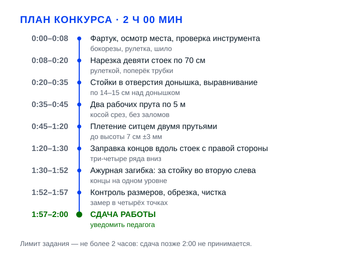
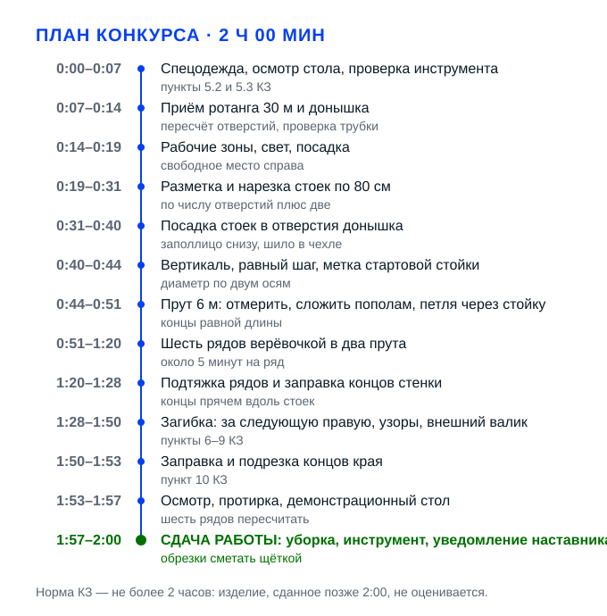
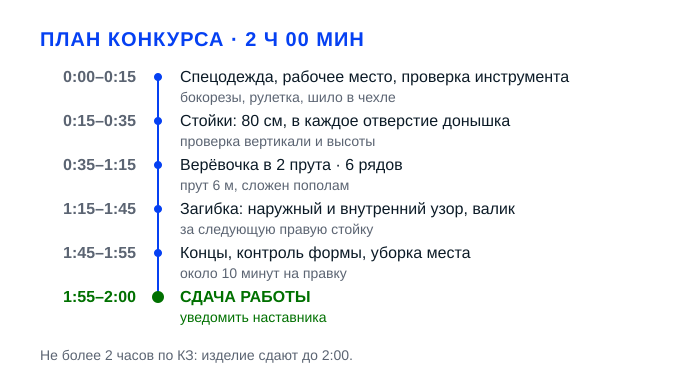

Плетение из искусственного ротанга (ФВ)
Задания ниже — официальные файлы «Абилимпикс» (источник: abilympics-russia.ru), разложенные по категориям. Решения написаны по тексту задания, регламенту и критериям оценки; в них указано, что именно проверяет эксперт.
Школьник
14–16 лет, базовый уровень заданияВ официальном файле категории не разделены отдельными разделами — приводим задание целиком; различия по категориям смотрите в таблице модулей.
Пошаговое решение
Конкурсное задание категории «Школьники» — конфетница из искусственного ротанга малой формы на деревянном донышке. На всё отводится не более двух часов, и за это время нужно нарезать девять стоек по 70 см, продеть их в отверстия донышка, сплести двумя рабочими прутьями по 5 метров стенку ситцем высотой 7 см с допуском три миллиметра и закрыть край ажурной загибкой, проплетая стойки за одну во вторую слева. Из инструментов выдаются только бокорезы, рулетка и шило, поэтому почти вся точность держится на руках и на порядке движений. Ниже задание разложено на пять задач, а каждая задача — на действия и шаги: что делать, зачем именно так, как проверить результат, чем обычно портят работу и на что в этот момент смотрит эксперт.

Задача 1. Организовать рабочее место и подготовить материалПодготовка · первые 20 минут из 2 часов
Конфетница начинается не с плетения, а со стола. За первые двадцать минут нужно надеть фартук, разложить три инструмента так, чтобы они не мешали друг другу, отрезать девять стоек по 70 см и подготовить два рабочих прута по 5 метров. Всё это время эксперт смотрит, как участник двигается: суетливо или по порядку, режет на глаз или отмеряет рулеткой, кладёт бокорезы на край стола или убирает в отведённое место. Именно на этом этапе закладывается ровная стенка и ажурная загибка, потому что стойки одинаковой длины и рабочий прут без заломов определяют геометрию изделия сильнее, чем аккуратность последних рядов.
Действие 1.1. Организовать рабочее место
Шаг 1.1.1
Надеваем фартук и завязываем его так, чтобы нагрудная часть закрывала грудь, а концы завязок были убраны и не свисали на колени. Волосы собираем под резинку или заколку, длинные рукава подворачиваем выше локтя, часы, браслеты и кольца снимаем. Садимся за стол так, чтобы донышко с плетением можно было свободно поворачивать обеими руками, а локти не упирались в столешницу.
Свисающая завязка фартука цепляется за донышко и стаскивает изделие со стола ровно в тот момент, когда вы подтягиваете прут, а кольцо оставляет на трубке ротанга затяжку, которая потом видна как белая полоса на лицевой стороне. Фартук входит в перечень расходных материалов на участника, и его наличие проверяют до старта, поэтому организация рабочего места оценивается отдельно от самого изделия.
Фартук застёгнут и не мешает движению рук, волосы убраны, украшений нет, на столе осталось место для поворота изделия. Проверьте простым движением: поднимите руки, как будто держите донышко, и посмотрите, ничего ли не тянет за собой.
Работать в футболке с длинным рукавом, который цепляется за стойки, или оставить кольцо: затяжка на ротанге не расправится, а участок с ней придётся закрывать следующим рядом, теряя время. Вторая ошибка — надеть фартук, но оставить его завязки болтаться по столешнице.
Эксперт фиксирует внешний вид и посадку за столом в первые минуты, до того как участник возьмёт инструмент. Смотрит он на это до старта, поэтому поправить посадку потом будет негде.
Шаг 1.1.2
Раскладываем инструмент по правой и левой зоне: бокорезы и шило справа, ближе к ведущей руке, рулетка перед собой, влажные салфетки в стороне от плетения, чтобы не касаться ими мокрыми пальцами готовых рядов. Моток ротанга укладываем слева так, чтобы он разматывался на вас, а не от вас: тогда прут идёт без перекручивания. Деревянное донышко ставим на середину стола на подкладку из сухой салфетки, чтобы оно не скользило по лакированной столешнице.
Порядок на столе напрямую влияет на скорость: на плетение стенки высотой 7 см уходит больше половины двух конкурсных часов, и каждая остановка на поиск шила съедает по минуте. Инструмент, положенный на край стола, падает, а упавшие бокорезы приходится проверять на исправность, и по требованиям охраны труда работать неисправным инструментом запрещено.
Инструмент лежит в пределах вытянутой руки и не перекрывает зону поворота изделия, ротанг разматывается свободно, донышко не скользит. Проверьте, потянув за прут: он должен идти без рывков и не тянуть моток за собой.
Сложить всё в кучу перед собой: тогда донышко приходится поворачивать над инструментом, и острый конец бокорезов царапает уже сплетённые ряды. Вторая ошибка — держать ротанг на коленях, откуда он падает и путается.
Эксперт обходит рабочие места в начале конкурса и отмечает рациональность организации, а не только итоговое изделие. Обход идёт без предупреждения, в первые минуты после старта.
Шаг 1.1.3
Осматриваем то, что выдано: моток искусственного ротанга трубкой 3 мм общей длиной 30 метров, деревянное донышко с отверстиями по борту и упаковку влажных салфеток. Проверяем бокорезы на ходу — смыкаются ли губки без заедания, нет ли на режущей кромке зазубрины, туго ли ходит возвратная пружина. Шило берём в руку и проверяем, что жало не шатается в рукояти, а колпачок снимается и надевается одним движением.
Тупыми бокорезами трубку не перерезают, а раздавливают: торец получается сплющенным, и такой конец не входит в отверстие донышка без заусенца. Шатающееся жало шила при раздвигании плетения соскакивает и прокалывает соседний ряд, а по правилам охраны труда при работе с шилом рабочая часть должна быть направлена от себя и убрана в чехол сразу после использования.
Пробный рез на обрезке длиной 3–4 см: трубка рассекается чисто, без белой полосы и сплющивания, губки смыкаются до конца. Шило входит в плетение с усилием, но без люфта. Если рез рваный — меняем инструмент через эксперта до старта.
Начать плести затупившими бокорезами и тянуть время на каждом резе: за двадцать резаний набегает пять-семь лишних минут, которых потом не хватит на загибку. Вторая ошибка — не проверить, что в мотке 30 метров, и обнаружить нехватку на последних рядах.
Проверка исправности инструмента входит в блок безопасности, который оценивают до начала работы. Если инструмент с дефектом, замена возможна только до начала работы.
Действие 1.2. Нарезать стойки по 70 см
Шаг 1.2.1
Разматываем моток на длину больше метра и укладываем отрезок ровно, без петель и перекрутов. Рулеткой отмеряем от торца 70 см, ставим метку тонким карандашом или надрезом ногтя и повторяем отмер девять раз подряд, каждый раз начиная от свежего торца. Метку ставим на одной стороне трубки, а не на ребре, чтобы при резе бокорезы не соскользнули вдоль волокна.
В конкурсном задании для школьников прямо указано: для стоек отрезать девять полос длиной 70 см. Длина здесь не формальность — она даёт запас на стенку 7 см, на ажурную загибку и на заправку концов, а разница в длине между стойками превращается в перекошенный верхний край, который невозможно выровнять без переплета.
Девять меток отбиты, все они лежат на одной линии вдоль трубки, рулетка не съезжает при каждом следующем отмере. Контрольная проверка: приложите рулетку к первой и последней метке — между ними должно быть восемь отрезков по 70 см, то есть 5 метров 60 сантиметров.
Отмерять на глаз или откладывать длину, прикладывая рулетку заново от предыдущего реза: ошибка накапливается, и последние стойки выходят короче на сантиметр. Вторая ошибка — ставить метки карандашом на ребре трубки, из-за чего рез уходит по касательной.
Эксперт может проверить длину готовых стоек рулеткой в любой момент конкурса, не дожидаясь сдачи. Проверяет он выборочно, у двух-трёх участников, и результат идёт в протокол.
Шаг 1.2.2
Режем бокорезами строго поперёк трубки, одним уверенным сжатием, а не двумя-тремя подкусываниями по кругу. Лезвия подводим так, чтобы трубка легла в самую глубину зева, ближе к оси шарнира: там усилие максимальное, и срез получается ровным. Режем по очереди, каждый отрезок сразу откладываем в сторону и следим, чтобы концы не разлетались по столу. После каждого реза откладываем отрезок в сторону, а не под руку.
Трубка искусственного ротанга полая, и при неполном сжатии она не режется, а сминается в овал: такой конец тяжело продеть в отверстие донышка, и он даёт толстую складку в плетении. Ровный поперечный срез нужен ещё и потому, что из девяти полос половина пойдёт на стойки, которые видно сверху, в ажурной загибке, и смятый торец там сразу бросается в глаза.
Срез ровный, круглый, без белой полосы раздавленного материала и без заусенца, диаметр на конце тот же, что в середине отрезка. Приложите срез к срезу: они должны совпасть без зазора по всей окружности.
Кусать трубку кончиками губок: они не перерезают, а проминают стенку, и конец получается сплющенным в лопатку. Вторая ошибка — резать на весу, держа отрезок в воздухе: трубка прогибается, и срез уходит по диагонали.
Качество реза эксперт видит по торцам стоек в ажурной загибке, где они открыты и ничем не закрыты. Особенно внимательно смотрит на торцы стоек, которые видны в загибке.
Шаг 1.2.3
Раскладываем девять отрезков рядом, выравниваем по одному торцу о край стола и смотрим на второй: разброс не должен превышать двух-трёх миллиметров. Отрезки, которые заметно выбиваются, откладываем отдельно — они пойдут на внутренние стойки, где длина не так видна. Девять полос складываем в одну пачку и больше не смешиваем с обрезками. Пачку перевязываем полоской ротанга, чтобы отрезки не разъехались по столу.
Стойки одинаковой длины дают ровный верхний край, а по нему потом выставляется ажурная загибка, где концы рабочих прутьев требуется зафиксировать на одном уровне. Если одна стойка короче на сантиметр, её конец в загибке не дотянется до нужной точки, и узор в этом секторе развалится, а исправить это на готовом изделии уже нельзя.
Девять отрезков лежат ровной пачкой, торцы совпадают на глаз и по линейке, нет ни одного отрезка с трещиной или надломом у среза. Пересчитайте вслух: именно девять, потому что нехватка одной стойки обнаруживается уже после установки каркаса.
Отложить нарезку стоек в сторону и начать с рабочего прута: тогда к моменту установки каркаса выясняется, что материал уже размечен под другие длины. Вторая ошибка — свалить стойки с обрезками в общую кучу и потом искать нужную длину наугад.
Аккуратность в обращении с материалом и экономный расход входят в требования охраны труда, которые эксперт отмечает по ходу работы. Отмечает он и то, как участник обращается с материалом: без заломов и лишних обрезков.
Действие 1.3. Подготовить рабочие прутья
Шаг 1.3.1
От того же мотка отмеряем два рабочих прута по 5 метров: разматываем, откладываем рулеткой пять метров от торца, помечаем и режем бокорезами. Готовые прутья не сворачиваем в кольцо, а укладываем свободной петлей или подвешиваем на край стола так, чтобы они не лежали на полу. Оставшийся ротанг сматываем обратно и убираем на край стола. Петлю укладываем так, чтобы прут не касался пола и не собирал пыль.
Конкурсное задание прямо называет первый рабочий прут длиной 5 метров и второй такой же: одним прутом оплетается половина стоек, вторым — вторая половина, и вместе они дают замкнутый ряд. Пяти метров хватает на стенку высотой 7 см с небольшим запасом на заправку концов, поэтому прут короче пяти метров заставит наращивать его в середине работы, а наращивание в самом видном месте стенки всегда заметно.
Два прута по 5 метров лежат отдельно от мотка, концы их не перепутаны с остатком. Проверьте рулеткой ещё раз, не растягивая трубку: ротанг тянется, и измерение с натягом даёт длину меньше реальной. Если длина не совпадает, прут лучше отрезать заново сразу.
Отрезать прут на глаз или отмерить его вместе с запасом на узел: лишние полметра путаются под руками и цепляются за стойки. Вторая ошибка — смотать рабочий прут в тугой кольцевой виток, после которого он идёт по стенке волной.
Расход материала оценивают по остатку в конце конкурса, а нехватку рабочего прута эксперт увидит по наращиванию в неположенном месте. Если прут отмерен с натягом, разница в длине видна при наращивании.
Шаг 1.3.2
Концы рабочих прутьев готовим к работе: у ведущего конца срезаем угол примерно в сорок пять градусов, чтобы он легче проходил между стойками, и проверяем, что срез не раздавлен. Второй конец оставляем прямым — его будем заправлять вдоль стойки в конце плетения. Если на трубке есть залом от упаковки, распрямляем его пальцами, а не растягиванием. Если конец всё же помялся, срезаем его заново, а не выправляем пальцами.
Косой срез не цепляется за соседний ряд и не раздвигает плетение там, где это не нужно, а прямой торец потом плотнее садится в заправку. Залом на трубке — это место, где стенка уже истончена: под натягом она надламывается, и прут рвётся ровно в самом заметном ряду.
Срез ровный и чистый, трубка по всей длине круглая, без белых полос и вмятин. Проведите пальцем по всей длине прута: вы не должны нащупать ни одного перехвата и ни одной шероховатости. На расстоянии вытянутой руки дефект виден как светлая полоса вдоль трубки.
Оставить на конце заусенец: он цепляет соседнюю стойку, и каждый ряд приходится протаскивать с усилием, а плетение получается стянутым. Вторая ошибка — разогревать прут зажигалкой, от открытого огня искусственный ротанг плавится и чернеет.
Подготовку концов эксперт оценивает по первому же ряду: если прут идёт свободно и не раздвигает плетение, конец обработан правильно. Первый ряд он смотрит сразу после того, как участник прошёл полкруга.
Шаг 1.3.3
Проверяем эластичность на пробном изгибе: прут должен гнуться по радиусу донышка без белых заломов на внешней стороне. Если материал жёсткий и при изгибе потрескивает, его можно слегка прогреть феном для волос на средней мощности, держа сопло в пятнадцати сантиметрах и постоянно двигая его вдоль трубки. Греть больше десяти-пятнадцати секунд на одном участке не нужно: трубка должна стать податливой, а не горячей.
Жёсткий прут не ложится плотно к предыдущему ряду, и между рядами остаются щели, через которые видно донышко: на изделии из тёмного ротанга это читается как небрежность. Перегретый прут, наоборот, теряет упругость, и стенка потом проседает под собственной тяжестью.
Прут гнётся по дуге радиусом с донышко, на внешней стороне нет белой полосы, материал тёплый на ощупь, но не липнет к пальцам. После прогрева дайте пруту остыть полминуты и проверьте изгиб ещё раз. Повторный изгиб после остывания должен проходить так же легко, как первый.
Пытаться размягчить ротанг горячей водой: вода попадает внутрь полой трубки, и потом она вытекает на изделие ржавыми каплями вместе с остатками смазки. Вторая ошибка — греть прут над плитой или зажигалкой.
Эксперт смотрит на плотность прилегания рядов и на отсутствие заломов, когда изделие уже сплетено до половины высоты. Залом на внешней стороне изгиба он считает дефектом материала.
Задача 2. Собрать каркас на деревянном донышкеКаркас · с 20-й по 35-ю минуту
Каркас решает, будет конфетница ровной или перекошенной. Девять полос по 70 см складываются пополам и петлёй продеваются в отверстия деревянного донышка снизу, чтобы с лицевой стороны поднялись парные стойки. Дальше их нужно выровнять по высоте, выставить вертикально и распределить по кругу с одинаковым шагом. Всё, что сделано на этом этапе неправильно, потом не исправляется ни плетением, ни загибкой: перекошенный каркас даёт конусную стенку, а разный шаг стоек — перекошенный ажурный узор.
Действие 2.1. Продеть стойки в донышко
Шаг 2.1.1
Берём первую полосу, складываем её пополам, придерживая оба конца пальцами, и находим середину. Петлю заводим с изнаночной стороны донышка и проталкиваем в отверстие до тех пор, пока с лицевой стороны не покажутся оба конца одинаковой длины. Подтягиваем за концы до упора, чтобы петля села в отверстие без зазора и не болталась. Работаем на весу, держа донышко на ладони, чтобы петля проходила без перекоса.
В задании сказано продеть стойки в деревянное донышко через отверстия, и петля снизу — самый надёжный способ: стойка держится за счёт изгиба и не выскакивает при натяжении рабочего прута. Пара одинаковых концов на выходе нужна потому, что плетение ситцем идёт вокруг пар, и если один конец длиннее другого на пять сантиметров, верхний край пойдёт уступом.
Петля сидит в отверстии плотно, донышко не шатается, оба конца поднялись над ним на одинаковую высоту. Проверьте нажатием пальца на петлю с изнанки: она не должна уходить глубже плоскости донышка. Отдельно проверьте, что петля не вывернулась на лицевую сторону.
Протолкнуть петлю до половины и оставить её болтаться: под натягом она выскочит в середине плетения, и придётся разбирать два-три ряда. Вторая ошибка — сильно пережать трубку при складывании, из-за чего на изгибе появляется белый залом.
Правильность установки стоек видно с изнанки изделия, и эксперт при финальном осмотре обязательно переворачивает конфетницу. Проверяет он и прочность посадки: петля не должна выходить из отверстия.
Шаг 2.1.2
Устанавливаем остальные полосы по кругу, двигаясь в одном направлении, например по часовой стрелке, и не перескакивая через отверстия. После каждой установленной пары поворачиваем донышко на одно отверстие, а не тянемся через всё изделие: так шаг остаётся равномерным. Пальцами придерживаем уже установленные стойки, чтобы они не выскакивали из соседних отверстий при нажатии.
Равномерный шаг стоек — основа ровной шахматки: при плетении ситцем рабочий прут проходит над одной стойкой и под следующей, и если где-то две стойки сблизились, ряд в этом месте стягивается, а с противоположной стороны, наоборот, расходится щель. Исправить перекос, когда уже сплетено пять рядов, можно только полной переборкой.
Все девять отверстий заняты, стойки стоят с одинаковым шагом, донышко с установленным каркасом стоит на столе ровно, не заваливаясь на бок. Посмотрите на изделие сверху: расстояние между соседними парами должно быть одинаковым во всех секторах.
Устанавливать стойки вразнобой, перескакивая через отверстие и возвращаясь к нему позже: в спешке одно отверстие остаётся пустым, и обнаруживается это только при замыкании ряда. Вторая ошибка — ставить полосы, не придерживая соседние, и терять уже установленные.
Полноту каркаса эксперт проверяет перед началом плетения, когда сразу видно, все ли отверстия задействованы. Считает он пары вслух вместе с участником, если каркас вызывает сомнение.
Шаг 2.1.3
Идём по кругу и проверяем каждую пару: оба конца свободно стоят вверх, не перекрещиваются и не слиплись, петля не вывернута на лицевую сторону. Концы, которые смотрят внутрь изделия или наружу под углом, поправляем руками, пока материал не распрямился в неправильном положении. Если полоса при установке перекрутилась вокруг своей оси, её лучше вынуть и поставить заново.
Перекрещенные концы дают в плетении утолщение, которое невозможно перекрыть ровным рядом, а вывернутая петля видна как бугор на изнанке и мешает изделию стоять устойчиво. Кроме того, перекрученная стойка при заправке концов в ажурной загибке идёт не в ту сторону, и узор в этом секторе получается зеркальным.
Пройдите по кругу и пересчитайте пары: их должно быть девять, а свободных концов — восемнадцать. Каждый конец смотрит вверх, петли с изнанки лежат ровно, без выворотов. Разброс высоты концов в паре не должен превышать пяти миллиметров.
Оставить перекрученную полосу, рассчитывая, что плетение её вытянет: вытянет, но вместе с перекосом всей стенки. Вторая ошибка — поправлять петли, дёргая за один конец, из-за чего вторая половина уходит вниз.
Качество каркаса эксперт оценивает по ровности первого ряда, который ложится по стойкам. Обращает он внимание и на то, не перекрещены ли концы в парах.
Действие 2.2. Выровнять стойки по высоте
Шаг 2.2.1
Собираем стойки в пучок и выравниваем их концы над донышком на одном уровне. Ориентир простой: на стенку по заданию отводится 7 см, на ажурную загибку уходит ещё около 5 см, плюс полтора-два сантиметра на заправку и обрезку, то есть над донышком должно остаться примерно 14–15 см. Проверяем рулеткой по четырём противоположным парам и подрезаем бокорезами только те концы, которые выбиваются.
Свободный конец стойки — это материал для загибки, и если его не хватит, ажурный узор просто не получится: конец не дотянется до точки переплетения. Обрезать лишнее потом легко, а вот нарастить стойку в готовом изделии нельзя, поэтому запас в полтора-два сантиметра при выравнивании обязателен.
Все концы над донышком одинаковой длины с разбросом до трёх миллиметров, проверено рулеткой в четырёх точках. Отдельно измерьте высоту от плоскости донышка, а не от края борта: борт у разных заготовок разной высоты.
Обрезать стойки вровень с бортом донышка, забыв про запас на загибку: на ажурный узор материала не остаётся, и работа теряет целую операцию. Вторая ошибка — оставить концы разной длины и надеяться выровнять их в процессе плетения.
Длину свободных концов эксперт проверяет перед загибкой, потому что именно на этом этапе видно, хватит ли материала на узор по заданию. Длину концов он оценивает как запас на загибку, а не как размер изделия.
Шаг 2.2.2
Выставляем стойки вертикально: каждую пару слегка отгибаем наружу, чтобы между ними и воображаемой осью изделия не было наклона внутрь. Смотрим на каркас сбоку на уровне стола: стойки должны идти вверх, а не расходиться веером и не сходиться к центру. Если донышко с бортом, стойки прижимаем к внутренней стороне борта по всему кругу. Проверяем наклон каждой пары отдельно, начиная от той, что ближе к вам.
Наклон стоек задаёт форму стенки: при наклоне наружу конфетница получается расширяющейся кверху, при наклоне внутрь — сужается и кажется меньше по размеру, а по заданию изделие малой формы должно читаться как устойчивая чаша. Ровные вертикальные стойки дают стенку цилиндром, к которой и привязан контроль высоты 7 см с допуском три миллиметра.
Каркас сбоку выглядит как ровный цилиндр, стойки не заваливаются ни внутрь, ни наружу, донышко стоит на столе всей плоскостью. Проверьте, приложив к стойкам ровную линейку или край второй дощечки. Приложите линейку к двум противоположным стойкам — зазора быть не должно.
Оставить стойки с наклоном внутрь, потому что так удобнее плести: к третьему ряду стенка заваливается к центру, и верхний диаметр выходит меньше нижнего на полтора сантиметра. Вторая ошибка — выгибать стойки наружу с силой, создавая в материале постоянное напряжение.
Форму изделия эксперт оценивает как силуэт: конфетница должна стоять устойчиво и выглядеть одинаковой со всех сторон. Он смотрит на каркас сбоку, на уровне стола, отходя на шаг.
Шаг 2.2.3
Если стойки расходятся и мешают работе, связываем их свободные концы мягкой резинкой или полоской малярного скотча выше зоны плетения, не затягивая туго. По мере набора высоты обвязку поднимаем выше и в конце снимаем совсем. Скотч наклеиваем липкой стороной наружу, чтобы он не оставил следов на трубке. Обвязку ставим на пять-шесть сантиметров выше последнего сплетённого ряда.
Собранные в пучок стойки не путаются под руками и не цепляются за рабочий прут при каждом обороте, а это экономит несколько минут на каждом ряду. Тугая обвязка вредна: она стягивает стойки к центру и создаёт тот самый наклон внутрь, из-за которого изделие сужается кверху.
Обвязка держит стойки, но не сдавливает их: между стойками в месте обвязки проходит палец. После снятия обвязки на трубках не осталось липких следов и вмятин. Проверяйте после каждого подъёма обвязки, не осталось ли клея на стойках.
Стянуть стойки скотчем в тугой пучок и оставить так до конца работы: стенка получается конусной, а на трубках остаются клеевые полосы, которые на тёмном ротанге видны как матовые пятна. Вторая ошибка — приклеить скотч к уже сплетённым рядам.
Следы клея и вмятины на стойках эксперт замечает при осмотре изделия на просвет и с близкого расстояния. Ищет он следы обвязки на стойках при финальном осмотре изделия.
Действие 2.3. Проверить каркас перед плетением
Шаг 2.3.1
Ставим донышко на стол и слегка нажимаем на него сверху через ладонь: каркас не должен качаться, а стойки — смещаться относительно отверстий. Проверяем посадку за столом: донышко стоит по центру, до края стола остаётся место для поворота, моток и инструмент не попадают в зону движения рук. Поправляем высоту стула, если приходится тянуться вверх. Подкладку меняем, если она намокла от рук, иначе донышко снова поедет.
Устойчивое донышко — условие ровного натяжения: если оно ездит по столу при каждом обороте, прут то перетягивается, то провисает, и стенка идёт волной. Проверка посадки тоже важна: за два часа работы с постоянным наклоном над столом устают плечи, и к концу плетения точность движений падает именно там, где нужна ажурная загибка.
Каркас не качается, стойки не выскакивают при нажатии, донышко поворачивается одной рукой без усилия. Руки работают на уровне груди, а не над головой. После нажатия проверьте, не выскочила ли какая-нибудь петля с изнанки.
Плести, не закрепив донышко, на гладкой столешнице: оно проворачивается вместе с натяжением прута, и ряд уходит по спирали. Вторая ошибка — работать сидя боком к столу, из-за чего одна сторона изделия плетётся с другим натягом.
Условия организации рабочего места эксперт отмечает в начале конкурса, когда видно, как участник устроился. Отмечает он и то, как участник сидит: ровно ли, не тянется ли вверх.
Шаг 2.3.2
Делаем пробный проход: берём ненужный обрезок ротанга длиной 20–30 см и проводим его между двумя стойками — над первой, под второй. Смотрим, с каким усилием прут проходит в зазор и не раздвигает ли он стойки. Если зазор слишком тесный, слегка раздвигаем пару пальцами или шилом, если слишком свободный — сдвигаем стойки ближе друг к другу. Обрезок после проверки убираем в сторону, чтобы он не попал в плетение.
Пробный проход показывает, как поведёт себя материал: у искусственного ротанга разная жёсткость партий, и по одному мотку прут идёт свободно, по другому — требует усилия. Понять это на первом рабочем ряду дорого: там уже видно каждое раздвинутое отверстие и каждая стянутая стойка.
Обрезок проходит между стойками без раздвигания отверстий и без сильного трения, стойки после прохода возвращаются на место. Зазор примерно равен толщине трубки, то есть трём миллиметрам. Если обрезок идёт туго, ослабьте пару на полмиллиметра и повторите проход.
Начать плести сразу рабочим прутом, не проверив зазоры: первый ряд получается или стянутым, или с щелями, и его приходится распускать. Вторая ошибка — раздвигать стойки силой, расшатывая отверстия донышка.
Первый ряд эксперт рассматривает особенно внимательно: он задаёт натяжение всего изделия. Первый ряд он смотрит сразу, не дожидаясь окончания плетения.
Задача 3. Сплести стенку ситцем до 7 смОсновной объём · с 35-й по 80-ю минуту
Самая длинная часть работы: два рабочих прута по 5 метров поочерёдно обходят стойки, и каждый ряд меняет чередование, из-за чего на стенке получается шахматка. Первым прутом оплетается половина стоек, вторым — вторая половина, и только вместе они дают замкнутый ряд, поэтому переход от одного прута к двум — ключевой момент всей задачи. Дальше нужно набрать ровно 7 см высоты с допуском три миллиметра, не растянуть стенку в конус и не оставить щелей, а в конце аккуратно спрятать концы рабочих прутьев вдоль стоек с правой стороны, как требует задание.
Действие 3.1. Начать плетение первым рабочим прутом
Шаг 3.1.1
Берём первый рабочий прут длиной 5 метров, находим ведущий конец с косым срезом и заводим его за любую стойку изнутри наружу так, чтобы снаружи остался хвост сантиметров десять. Хвост прижимаем к донышку пальцем левой руки, а правой уводим прут к следующей стойке. Начать удобнее от того места, где стойки стоят ровнее всего, чтобы первый ряд сразу лёг правильно.
Задание описывает именно такую последовательность: сначала рабочий прут оплетает половину стоек, потом подставляется второй. Хвост в десять сантиметров нужен, чтобы прут не выскочил из-за первой стойки при натяжении: позже он уйдёт в заправку вместе с остальными концами. Начало с неровного сектора сразу даёт перекос, который тянется через все ряды.
Прут держится за стойкой без поддержки, хвост не выскальзывает, первый проход идёт от стойки к стойке без провиса. Дёрните прут на себя умеренно: он должен сидеть плотно, но не врезаться в стойку. Хвост должен доходить до второго ряда, иначе он выйдет при подтяжке.
Завести прут коротким хвостом в два сантиметра: он выскакивает при первом же подтягивании, и ряд приходится переделывать. Вторая ошибка — начать плетение с внешней стороны стойки, из-за чего чередование в первом ряду сбивается на противоположное.
Эксперт смотрит, как участник держит натяжение в первом ряду: по нему видно, понимает ли он принцип чередования. Он следит, как участник держит хвост и подтягивает прут после каждых двух пар.
Шаг 3.1.2
Ведём прут по кругу в одном направлении, укладывая его над стойкой, затем под следующей, и так через одну. Каждая пара стоек считается за одну точку переплетения, поэтому прут проходит над парой целиком, а не между её концами. Пройдя четыре-пять пар, подтягиваем прут и прижимаем ряд к донышку, поворачивая изделие навстречу руке. Проходя у донышка, следим, чтобы прут не задевал петли стоек с изнанки.
Чередование над стойкой и под стойкой — это и есть ситец, шахматное плетение, которое задано в конкурсном задании. Если провести прут над двумя стойками подряд, рисунок сбивается, и на стенке появляется вертикальная полоса, которую уже не исправить без распускания ряда. Прижимать ряд к донышку нужно сразу: первый ряд задаёт плотность, и все последующие лягут по нему.
Ряд идёт ровной линией на одной высоте, чередование не сбивается, прут прилегает к донышку без зазора. Пройдите взглядом по кругу: рисунок должен читаться как ровная змейка без одинаковых участков подряд.
Вести прут, не поворачивая изделие, и тянуться через стол: на дальнем участке натяжение слабеет, и ряд провисает. Вторая ошибка — считать каждый конец пары отдельной стойкой и плести слишком часто. Сбитое чередование видно на первом же ряду как ровная полоса без змейки.
Ровность первого ряда эксперт оценивает как показатель понимания техники, а не только как результат. Сбитое чередование он замечает сразу и просит участника объяснить порядок.
Шаг 3.1.3
Оплетаем половину стоек, то есть примерно девять пар из восемнадцати, и останавливаемся. Конец прута пока оставляем свободным, не обрезаем и не заправляем: он будет стыковаться со вторым прутом. Проверяем, что за спиной осталось ровно полкруга, а впереди — столько же свободных стоек для второго прута. Отмечаем карандашом на донышке стойку, у которой остановились.
Половина круга — это условие, при котором два прута встречаются точно напротив друг друга и дальше идут в противофазе, создавая непрерывную шахматку. Если первым прутом пройти три четверти круга, второй прут наложится на уже сплетённый участок, и в месте стыка получится утолщение в два прута.
Свободные стойки занимают примерно половину окружности, конец первого прута выходит у стойки, с которой удобно начинать второму. Остаток прута лежит свободной петлёй и не перекручен. Проверьте, что остаток первого прута не короче полутора метров.
Пройти первым прутом почти весь круг, оставив второму два-три шага: в этом месте плетение становится двойным, и стенка с одной стороны толще, чем с другой. Вторая ошибка — обрезать конец первого прута заподлицо до стыковки.
Момент перехода на два прута эксперт отслеживает отдельно: он показывает, умеет ли участник держать ритм плетения. Наблюдает он и за тем, не тянет ли участник прут через силу.
Действие 3.2. Подставить второй прут и выйти на ситец
Шаг 3.2.1
Берём второй рабочий прут длиной 5 метров и заводим его за стойку, следующую за той, у которой остановился первый прут. Ведём второй прут в том же направлении, но с противоположным чередованием: там, где первый прут идёт над парой, второй проходит под ней. Конец второго прута также оставляем хвостом снаружи и придерживаем пальцем. Хвост второго прута укладываем в другую сторону от хвоста первого.
Задание прямо говорит: далее подставляем второй рабочий прут длиной 5 метров и, сохраняя очерёдность плетения двумя рабочими прутьями, плетём стенки ситцем. Противофазное чередование обязательно: если оба прута пойдут над одними и теми же стойками, они будут тереться друг о друга и выталкивать друг друга из ряда, а рисунок получится не шахматкой, а двойной полосой.
Два прута идут на одной высоте, между ними нет зазора и нет нахлёста, рисунок по кругу читается как шахматка. Проверьте у места стыка: прутья должны лечь в один ряд, а не один над другим. Проверьте стык через два-три ряда: он не должен разойтись под натяжением.
Завести второй прут с тем же чередованием, что и первый: прутья начинают идти параллельно, и между ними образуется щель во всю высоту стенки. Вторая ошибка — начать второй прут с той же стойки, где закончился первый, и получить утолщение в одном секторе.
Правильность стыковки двух прутьев эксперт проверяет именно в том секторе, где они встретились, потому что там ошибка видна лучше всего. Стык он проверяет на ощупь, проводя рукой вокруг изделия.
Шаг 3.2.2
Плетём двумя прутьями одновременно, держа оба в правой руке и пропуская их по очереди: сначала верхний, затем нижний, каждый через свою стойку. Левой рукой поворачиваем изделие и придерживаем уже уложенный ряд, чтобы прутья ложились на него, а не под него. После каждого полного оборота подтягиваем оба конца одинаково, проверяя натяжение на ощупь. Оба прута держим между большим и указательным пальцем, не сжимая их в кулаке.
Смысл двух прутьев в том, что каждый ряд закрывается за один оборот, и стенка растёт вдвое быстрее, чем при плетении одним прутом. Одинаковое натяжение обоих прутьев даёт ровный цилиндр: если один натянут сильнее, изделие начинает закручиваться спиралью, и верхний край уходит в сторону.
Ряды укладываются горизонтально, без волны и без спирального смещения, прутья лежат плотно друг к другу. Поверните изделие на столе и посмотрите на просвет: горизонтальные линии должны быть параллельны донышку.
Тянуть один прут сильнее другого: через три-четыре ряда изделие заметно перекашивается, и загибку приходится делать по косой линии. Вторая ошибка — пропускать стойку, отвлекаясь на разговор или на соседний участок.
Ритм и равномерность натяжения эксперт оценивает по ровности горизонтальных рядов на всех сторонах конфетницы. Натяжение он оценивает по ровности горизонтальных линий издалека.
Шаг 3.2.3
Контролируем рисунок: в каждом следующем ряду прут, который шёл над парой, должен идти под ней, и наоборот. Проверяем это на четырех противоположных секторах, а не только на том, который перед глазами. Заметив сбой, распускаем ряд до ошибки, а не пытаемся перекрыть его следующим рядом. Сбой ищем начиная от того ряда, где вы последний раз проверяли рисунок.
Шахматка ситца держится на строгом чередовании, и один пропущенный перехлёст разрушает рисунок на всю высоту стенки: дальше ошибка повторяется автоматически. Заметить сбой в начале стоит полминуты, а исправить его на готовом изделии невозможно — придётся распускать стенку почти полностью.
В каждом секторе видно правильную шахматку: под каждой парой стоек прут проходит то спереди, то сзади, чередуясь по вертикали. Сфотографируйте изделие сверху, если есть возможность: на снимке сбой виден сразу.
Идти по инерции, не проверяя рисунок: ошибка накапливается к пятому ряду, и тогда её исправление стоит всей высоты стенки. Вторая ошибка — считать, что сбой закроется загибкой. Распускать придётся до места ошибки, а это иногда пять-шесть рядов.
Рисунок плетения — главный критерий качества стенки, и эксперт смотрит на него с расстояния вытянутой руки, обходя изделие кругом. Он сравнивает рисунок с иллюстрацией из задания, которую держит при себе.
Действие 3.3. Набрать высоту 7 см
Шаг 3.3.1
Когда конец рабочего прута укорачивается до 15–20 сантиметров, наращиваем его: срезаем старый конец под углом, а у нового прута срезаем конец на конус и вставляем его внутрь полой трубки на два-три сантиметра. Стык приходится на участок у стойки, чтобы он был менее заметен, и после вставки прут продолжает идти без утолщения. Новый прут берём с тем же диаметром трубки, иначе ряд пойдёт с уступом.
Наращивание внутри трубки — единственный способ, при котором стык не видно: внешний диаметр остаётся прежним, и ряд не раздвигается. Вставка всего на сантиметр держит плохо и расходится под натяжением, а вставка больше трёх сантиметров упирается в изгиб и не даёт пруту идти ровно.
Стык не ощущается пальцем как ступенька, прут продолжается без излома, при натяжении соединение не расходится. Потяните за новый прут: старый должен идти за ним, а не выходить из трубки. Стык должен пройти проверку и на ощупь, и на глаз при боковом свете.
Соединить концы встык и обмотать скотчем: на изделии это читается как тёмная нашлёпка, и балл за аккуратность теряется. Вторая ошибка — наращивать прут в самом видном секторе, напротив эксперта. Плохо вставленный конец выйдет из трубки при первом же обороте.
Качество наращивания эксперт проверяет, проводя рукой по стенке: ступенька на ощупь считается дефектом. Наращивание он ищет намеренно, обходя изделие кругом.
Шаг 3.3.2
Каждые два-три ряда измеряем высоту стенки рулеткой от плоскости донышка до верхнего ряда в четырёх точках по кругу. По заданию высота должна получиться 7 см при допустимой погрешности три миллиметра, то есть от 6,7 до 7,3 см. Измеряем строго вертикально, приставляя рулетку к стойке, а не по диагонали. Замер делаем после каждого второго ряда, а не один раз в середине работы.
Допуск три миллиметра — это очень мало: разница между рядами ситца примерно четыре-пять миллиметров, поэтому высота попадает в допуск только при целенаправленном контроле. Измерение по диагонали или от борта донышка даёт завышенный результат на сантиметр, и участник узнаёт об этом уже на защите.
Четыре измерения дают близкие значения, разброс не больше двух миллиметров, и все четыре попадают в интервал 6,7–7,3. Запишите результат на бумаге или запомните точно: к одному значению потом придётся приводить загибку.
Довести высоту до семи сантиметров по одному измерению с одной стороны: на противоположной стороне стенка окажется ниже или выше, а допуск в три миллиметра такое не прощает. Вторая ошибка — считать высоту вместе с загибкой.
Контроль размеров — обязательный пункт задания, и эксперт измеряет высоту сам, той же рулеткой, что указана в перечне инструментов. Измеряет он высоту той же рулеткой, что выдана участнику.
Шаг 3.3.3
Следим за формой по ходу набора высоты: стенка должна расти цилиндром. Проверяем, прикладывая ладонь к стойкам снаружи — они не должны расходиться кверху. Если замечаем, что верхний диаметр больше нижнего, подтягиваем последние два ряда и слегка прижимаем стойки внутрь, но не выгибаем их с силой. Заметив расширение, придерживаем стойки ладонью на двух следующих рядах.
Конусность появляется от натяжения прута: он тянет стойки за собой, и к пятому-шестому ряду изделие расширяется. Конфетница малой формы с расширяющейся стенкой выглядит как стакан и хуже держит форму, а при загибке стойки расходятся ещё сильнее и узор идёт волной.
Диаметр изделия внизу и вверху отличается не больше чем на полсантиметра. Измерьте рулеткой по двум противоположным стойкам снизу и сверху: разница видна сразу, без всяких приспособлений. Если разница больше, прижмите стойки на последних рядах и измерьте снова.
Тянуть прут изо всех сил, считая, что так плетение будет плотнее: стойки наклоняются внутрь, стенка идёт бочкой, и ажурная загибка в этом месте не сходится. Вторая ошибка — не замечать расширения до самого верха.
Форма и устойчивость изделия входят в оценку внешнего вида: конфетница должна стоять ровно и не заваливаться. Он смотрит на силуэт с расстояния двух шагов, прищурившись.
Шаг 3.3.4
После каждого ряда проходим пальцами по кругу и прижимаем прутья друг к другу, чтобы между рядами не оставалось щелей. Для плотности можно аккуратно постучать по верхнему ряду рукояткой шила, но без удара по стойкам. Щели, которые уже видны, закрываем, придвигая ряд вниз до упора в предыдущий. Прижимаем ряд ладонью по всей окружности, а не в одном месте.
Плотность плетения — это не только красота: через щели видно донышко и просвет, а на тонком искусственном ротанге просвет читается как пустота внутри изделия. Кроме того, плотно уложенные ряды держат стойки ровно, и загибка ложится на жёсткую стенку, а не на рыхлую.
По кругу нет сквозных щелей, ряды лежат вплотную, стенка на ощупь плотная и не пружинит при нажатии. Посмотрите на изделие на просвет против окна: сплошных светлых полос быть не должно. Отдельно проверьте нижний ряд: у донышка щели появляются чаще всего.
Оставить ряд провисшим, чтобы потом закрыть его следующим: щель остаётся навсегда, потому что верхний ряд ложится поверх, а не в неё. Вторая ошибка — утрамбовывать плетение с силой, ломая стенку у донышка. Провисший ряд потом не подтянуть: он закрыт сверху следующим.
Плотность и отсутствие просветов эксперт проверяет, поднимая изделие на уровень глаз. Просвет он проверяет, поднимая изделие на уровень глаз против света.
Действие 3.4. Заправить концы рабочих прутьев
Шаг 3.4.1
Закончив набор высоты, выравниваем верхний ряд по всей окружности: он должен лежать на одной высоте, без ступеньки в том месте, где встретились прутья. Если последний оборот выше остальных на два-три миллиметра, слегка подтягиваем его и прижимаем к предыдущему ряду. Высоту после выравнивания измеряем ещё раз в четырёх точках. Если уступ всё же остался, слегка подтягиваем последний ряд за стойку.
Верхний ряд — это линия, от которой начинается ажурная загибка, и если он с уступом, загибка пойдёт по косой. Кроме того, именно верхний ряд задаёт итоговую высоту стенки 7 см с допуском три миллиметра, и все измерения эксперт делает по нему, а не по среднему значению.
Верхний ряд ровный по всему кругу, ступеньки нет, высота в четырёх точках укладывается в 6,7–7,3 см. Проведите ладонью по верхнему ряду: вы не должны почувствовать перепад. Ступеньку ищите на ощупь в месте, где встречаются концы двух прутьев.
Оставить уступ в месте стыка прутьев: загибка в этом секторе поднимется выше остальных, и ажурный узор получится с горбом. Вторая ошибка — выравнивать ряд, растягивая прут, из-за чего он потом стягивается обратно.
Верхний ряд эксперт оценивает вместе с загибкой: это две связанные операции, и ошибка в первой видна во второй. Уступ он ищет на кромке, проводя по ней ладонью.
Шаг 3.4.2
Концы рабочих прутьев продеваем вдоль стоек с правой стороны, как указано в задании: шилом слегка раздвигаем плетение у стойки и заводим конец внутрь стенки, ведя его вниз вдоль стойки на три-четыре ряда. Конец должен идти между стенкой и стойкой, не выходя на лицевую сторону. Второй конец заправляем так же, но с другой стороны изделия. Длину заправки проверяем на ощупь: конец должен уйти не меньше чем на три ряда.
Продевание вдоль стоек с правой стороны — не случайное требование: конец, убранный вдоль стойки, не видно, он не цепляется за руку и не растопыривает плетение. Если заправить конец поперёк, он пройдёт через ряды и на лицевой стороне появится бугор, а с изнанки — петля, которая видна при осмотре изделия снизу.
Концов на лицевой стороне не видно, стенка не раздвинута, изделие стоит ровно. Проведите пальцем вокруг всего верхнего ряда: нигде не должно остаться торчащего острия. Проверьте с изнанки: заправленный конец не должен выходить за стенку.
Обрезать конец заподлицо снаружи, не заправив его: под натяжением он вылезет обратно через два-три ряда, и на изделии появится торчащий ус. Вторая ошибка — заправить конец на один ряд, отчего он держится непрочно.
Аккуратность заправки концов входит в оценку качества изделия, и эксперт осматривает конфетницу и снаружи, и с изнанки. Заправку он проверяет с изнанки, переворачивая изделие.
Шаг 3.4.3
После заправки обрезаем выступающие концы бокорезами как можно ближе к поверхности, стараясь не задеть соседние ряды. Срез делаем под небольшим углом, утапливая остриё губок в плетение. Место среза приглаживаем пальцем, а если конец всё же виден, дополнительно подсовываем его шилом под соседний ряд. Работаем при хорошем свете и режем по одному концу, проверяя каждый.
Торчащий конец — самый заметный дефект на готовом изделии: он цепляет ткань и кожу, а на тёмном ротанге светлый срез виден издалека. Обрезка заподлицо с последующей утрамбовкой даёт ровную поверхность, которую не отличить от сплошного плетения. Кроме того, ровная кромка — это первое, что проверяют на ощупь.
По верхнему краю и по стенке нет торчащих концов, срезов и белых точек, поверхность на ощупь гладкая. Осмотрите изделие при боковом свете: все неровности видны как тени. Осмотрите срезы на близком расстоянии от глаз, при боковом свете.
Резать бокорезами, не придерживая стенку: губки тянут плетение за собой и выдёргивают заправленный конец. Вторая ошибка — обрезать сразу несколько концов, не проверив каждый. Третья ошибка — резать концы на весу, не уложив изделие на стол, из-за чего срез уходит по косой.
Чистота обработки концов — часть критерия аккуратности, которую эксперт проверяет перед загибкой и после неё. Срезы он осматривает при боковом свете, наклоняя изделие.
Задача 4. Выполнить ажурную загибкуФиниш · с 80-й по 110-ю минуту
Загибка закрывает верхний край и превращает цилиндр в готовую конфетницу. В задании она описана точной формулировкой: стойки проплетаем за одну стойку во вторую слева, а концы рабочего прута фиксируем в плетёной стенке на одном уровне. Здесь важно не столько усилие, сколько одинаковость: каждый конец проходит один и тот же путь, каждый изгиб лежит на той же высоте, и узор читается ровным кольцом по всему периметру. Именно эта операция даёт изделию законченный вид, и именно на ней чаще всего теряют баллы за небрежность.
Действие 4.1. Подготовиться к загибке
Шаг 4.1.1
Собираем и пересчитываем свободные концы стоек: их должно быть столько же, сколько пар было установлено в донышко, то есть восемнадцать. Убеждаемся, что все они одинаковой длины и не короче четырёх-пяти сантиметров. Концы, у которых осталось меньше трёх сантиметров, откладываем — их пустим на внутреннюю часть узора, где перекрытие короче. Короткие концы отмечаем пальцем, чтобы случайно не начать с них узор.
Загибка делается за счёт свободного конца стойки, и если материал короче нужного, конец не дотянется до точки переплетения и узор в секторе оборвётся. Пересчёт нужен ещё и потому, что лишний или недостающий конец обнаруживается уже после половины узора, когда разбирать его поздно.
Свободных концов восемнадцать, разброс длины не больше пяти миллиметров, ни один не короче трёх сантиметров. Разложите концы веером и пересчитайте по часовой стрелке, двигаясь от одной и той же метки. Недостачу концов ищите среди уже заправленных вдоль стоек.
Начать загибку, не пересчитав концы: в середине узора выясняется, что одна стойка была заправлена в стенку вместе с рабочим прутом, и ажурное кольцо в этом месте разомкнуто. Вторая ошибка — оставить короткие концы напоследок.
Готовность к загибке эксперт проверяет до её начала, потому что по длине концов видно, хватит ли материала на узор по заданию. Длину концов он проверяет перед загибкой, не давая начать работу раньше.
Шаг 4.1.2
Определяем направление движения: загибка идёт в одну сторону, и все концы без исключения проходят один и тот же путь. Условно обозначаем любую стойку первой и дальше двигаемся по часовой стрелке, каждый раз загибая очередной свободный конец за одну стойку и пропуская его во вторую слева. Направление запоминаем и больше не меняем, даже если покажется, что так удобнее.
Формулировка задания — за одну стойку во вторую слева — задаёт жёсткий порядок: конец огибает ближайшую стойку и выходит через промежуток, пропустив одну. Единое направление даёт ровное ажурное кольцо, а смена направления в середине пути ломает ритм узора и создаёт зеркальный сектор, который видно сразу.
Направление зафиксировано и понятно, первые два конца уложены в одном порядке. Проверьте себя на двух соседних концах: они должны лечь совершенно одинаково, как под копирку. Сверьте положение двух первых дуг линейкой: они лежат на одной высоте.
Менять направление по ходу работы, потому что с другой стороны удобнее держать руку: в месте смены получается узел, а узор идёт навстречу сам себе. Вторая ошибка — загибать концы через одну стойку, забыв про вторую.
Порядок и направление загибки — это прямое требование задания, и эксперт сверяет с ним готовый верхний край. Он следит за направлением: все дуги должны идти в одну сторону.
Действие 4.2. Проплести стойки в загибку
Шаг 4.2.1
Берём первый свободный конец, отгибаем его наружу через ближайшую стойку, затем заводим за следующую и проводим во вторую слева, то есть через промежуток, пропустив одну стойку. Конец при этом ложится поверх стенки дугой и уходит внутрь плетения. Пальцами придерживаем дугу, чтобы она не распрямилась, пока не будет зафиксирована следующими концами. Дугу формируем большим пальцем, не перегибая трубку через остриё шила.
Именно эта последовательность — за одну стойку во вторую слева — создаёт ажурный просвет, ради которого делается загибка. Конец, заведённый в соседнюю стойку без пропуска, ложится плотно и ажурного просвета не даёт: узор получается глухим, а задание требует именно ажурную загибку.
Первый конец лежит дугой поверх стенки, между ним и стенкой остался просвет, конец вошёл в плетение и не выскакивает. Сравните с фотографией в задании: форма дуги должна совпадать. Просвет между дугой и стенкой должен быть виден на просвет.
Загнуть конец просто за следующую стойку, пропустив требование второй стойки: узор выходит плотным, без просветов, и вся операция теряет смысл. Вторая ошибка — сильно перегибать конец, отчего на изгибе появляется белый залом.
Форму дуги и величину просвета эксперт оценивает в первую очередь, потому что это и есть ажурная часть работы. Форму первой дуги он сравнивает с иллюстрацией в задании.
Шаг 4.2.2
Продолжаем по кругу: каждый следующий свободный конец загибаем в том же направлении, за ту же по счёту стойку и во вторую слева. Продвигаемся строго по порядку, не перескакивая через концы и не возвращаясь назад. Изделие поворачиваем навстречу руке, чтобы каждый конец загибался в одинаково удобном положении. Держим ритм: один конец — одна дуга, без остановок на примерку.
Порядок обхода — гарантия того, что все дуги лягут на одной высоте и с одинаковым шагом: при равномерном движении каждый следующий конец естественным образом перекрывает предыдущий и фиксирует его. Перескок через один конец оставляет предыдущий незакреплённым, и он распрямляется обратно вверх.
Дуги ложатся одна за другой с одинаковым шагом, предыдущая дуга прижата следующей. Пройдя четверть круга, посмотрите на узор сбоку: он должен читаться как непрерывная волна. Шаг между дугами проверьте рулеткой на четырёх участках по кругу.
Загибать концы вразнобой, выбирая те, до которых удобнее дотянуться: в результате одни дуги лежат выше, другие ниже, и верхний край идёт волной. Вторая ошибка — не придерживать предыдущую дугу, пока она не закреплена.
Равномерность шага и высоты дуг эксперт проверяет, обходя изделие кругом и сравнивая секторы между собой. Шаг он проверяет рулеткой на четырёх участках кромки.
Шаг 4.2.3
Фиксируем концы рабочего прута в плетёной стенке на одном уровне, как требует задание: каждый конец после прохода во вторую слева укладываем вдоль стенки на одной и той же высоте и прижимаем следующим рядом или соседней дугой. Следим, чтобы уровень не полз: первый конец задал высоту, все остальные приводятся к ней. Высоту каждого конца сверяем с первым, приложив к кромке линейку.
Требование фиксировать концы на одном уровне прямо записано в конкурсном задании, и это самая частая причина снижения оценки: при разной высоте верхний край получается рваным, а изделие выглядит незаконченным. Ровный уровень фиксации держит и саму дугу: она не поднимается и не опускается при носке.
Все концы закреплены на одной высоте, проверено наложением линейки на верхний край: линия ровная, без уступов. Отдельно проверьте четыре противоположных сектора — там перекос заметнее всего. Приложите линейку к кромке в двух направлениях, чтобы поймать наклон.
Фиксировать концы там, где получилось: разница в высоте в сантиметр на ажурном крае видна сразу и читается как небрежность. Вторая ошибка — закреплять конец, не дотянув его, из-за чего дуга стоит торчком.
Уровень фиксации концов — отдельный пункт задания, и эксперт проверяет его линейкой или на глаз вдоль кромки. Уровень фиксации он проверяет линейкой, приложенной вдоль кромки.
Шаг 4.2.4
Замыкаем круг: последний конец загибаем так же, как все предыдущие, и подсовываем его под первую дугу, чтобы кольцо закрылось без разрыва. Место стыка подтягиваем и приглаживаем пальцем, добиваясь одинаковой высоты с соседними дугами. После замыкания ещё раз проходим по кругу и проверяем, что ни одна дуга не осталась незакреплённой. Последний конец подсовываем шилом, а не пальцем, чтобы не раздвинуть дугу.
Замыкание круга — самая уязвимая точка загибки: если последний конец оставить сверху, он торчит и цепляется, а кольцо выглядит разомкнутым. Правильно подсунутый конец уходит под первую дугу и делает узор непрерывным, что и требуется от готового изделия.
Кольцо замкнуто, стык не выделяется по высоте и толщине, все дуги закреплены. Проведите пальцем по всей кромке: не должно быть ни одного торчащего конца. Проверьте место стыка на ощупь: утолщения быть не должно.
Оставить последний конец незаправленным или закрепить его поверх первой дуги: на кромке появляется утолщение, а конец постепенно выходит наружу. Вторая ошибка — замкнуть круг, пропустив один промежуток, из-за чего в узоре остаётся дыра.
Замкнутость и непрерывность узора эксперт проверяет, обходя изделие по кругу и сверяя начало с концом. Стык он ищет намеренно, начиная осмотр с места замыкания круга.
Действие 4.3. Проверить и закрыть загибку
Шаг 4.3.1
Сравниваем секторы: изделие делится на четыре части, и в каждой должно быть одинаковое число дуг с одинаковым шагом. Смотрим на конфетницу сверху и чуть сбоку — так лучше видно, ровно ли идёт волна. Если один сектор получился плотнее, аккуратно подтягиваем дуги пальцами, распределяя их равномерно по окружности. Подтягиваем по одной дуге и после каждой проверяем кромку на ровность.
Симметрия — то, что эксперт видит первым: конфетница стоит на столе, и её верхний край читается как замкнутое кольцо. Неравномерность шага сразу выдаёт спешку в конце работы, даже если сама стенка сплетена безупречно и высота выдержана точно. К тому же симметрию видно с любого ракурса, а перекос — тоже.
Число дуг в каждом из четырёх секторов одинаковое, шаг ровный, высота кромки по кругу одна и та же. Посмотрите на изделие, прищурившись: неровность всё равно проявится как тёмное пятно. Отойдите на два шага: вблизи мелкие неровности не видны.
Подтягивать дуги с силой, чтобы выровнять шаг: концы выходят из заправки, и загибка распускается. Вторая ошибка — оставить неравномерность, рассчитывая, что её не заметят. После подтягивания проверьте, не вышли ли концы из заправки.
Симметрию эксперт оценивает на демонстрационном столе, когда изделие стоит при общем освещении и видно со всех сторон. Симметрию он оценивает, обходя стол и глядя на кромку с четырёх сторон.
Шаг 4.3.2
Проверяем жёсткость кромки: слегка нажимаем на загибку сверху и смотрим, не прогибается ли она и не расходится ли плетение стенки под ней. Ставим конфетницу на стол и смотрим, не качается ли она: все ножки-петли донышка должны касаться поверхности. Если изделие качается, находим выступающую точку и подтягиваем её изнутри. Нажатие делаем слабое: проверяем упругость, а не прочность на разрыв.
Ажурная загибка — это ещё и жёсткое ребро, которое держит форму всей конфетницы: без плотной фиксации концов стенка играет, и изделие не годится для использования по назначению. Устойчивость проверяют потому, что конфетница стоит на столе с конфетами, и любое качание читается как дефект сборки.
Кромка не прогибается при умеренном нажатии, стенка под ней не расходится, изделие стоит на столе без качания. Поставьте конфетницу на ровную поверхность и нажмите поочерёдно на четыре стороны. Нажмите на четыре стороны по очереди и сравните ход кромки.
Оставить кромку рыхлой, посчитав, что ажур и должен быть мягким: стенка играет, а при переноске изделие деформируется. Вторая ошибка — подтягивать донышко, не проверив, откуда берётся качание. Качание обычно даёт одна петля, которая встала в отверстие с перекосом.
Устойчивость и прочность кромки эксперт проверяет, приподнимая изделие и ставя его обратно на стол. Устойчивость он проверяет, ставя изделие на стол и слегка нажимая.
Шаг 4.3.3
Обрезаем оставшиеся кончики бокорезами вровень с плетением, под углом, утапливая губки между дугами. Каждый срез сразу приглаживаем пальцем и, если остриё всё же видно, подсовываем кончик шилом под соседнюю дугу. После обрезки проходим влажной салфеткой по кромке, убирая пыль от материала. Салфетку берём влажную, но хорошо отжатую, чтобы вода не шла в плетение.
Открытый срез на кромке — это и некрасиво, и опасно: тонкая стенка трубки режет кожу. Кроме того, светлый срез на тёмном ротанге виден издалека и читается как незаконченная работа, хотя изделие уже готово. Протирание влажной салфеткой убирает пыль, которая особенно заметна на глянцевом искусственном ротанге.
На кромке нет срезов, заусенцев и белых точек, поверхность чистая и сухая. Осмотрите конфетницу при боковом свете и проведите по кромке тыльной стороной пальца. Проверьте кромку на просвет: срез виден как светлая точка.
Обрезать концы, не придерживая узор: губки тянут дугу и раздвигают плетение. Вторая ошибка — тереть плетение мокрой салфеткой с силой, оставляя ворс между рядами. Раздвинутое плетение потом не сходится, и в кромке остаётся зазор. Третья ошибка — резать несколько концов подряд, не проверяя каждый срез на просвет.
Чистота кромки — последнее, что эксперт видит при осмотре изделия перед оценкой. Чистоту кромки он смотрит на просвет, поворачивая изделие к лампе. Особенно придирчиво он смотрит на кромку со стороны, обращённой к зрителю.
Задача 5. Проверить изделие, убрать место и сдать работуПоследние 10 минут из 2 часов
Финальные минуты решают не меньше, чем всё плетение: изделие нужно измерить, проверить на устойчивость и чистоту, а рабочее место привести в состояние, в котором его принимают. Затем конфетница ставится на демонстрационный стол, а педагог или эксперт уведомляется об окончании работы — это отдельный пункт последовательности выполнения задания. Спешка здесь стоит дорого: обрезанный наспех конец или забытый на столе обрезок сводят на нет аккуратность, которую вы держали два часа.
Действие 5.1. Проверить изделие по требованиям задания
Шаг 5.1.1
Измеряем высоту стенки рулеткой от плоскости донышка до верхнего ряда в четырёх точках, обходя изделие по кругу. По заданию высота 7 см, допускается погрешность плюс-минус 3 мм, то есть границы 6,7 и 7,3 см. Затем измеряем диаметр по двум противоположным парам стоек снизу и сверху и убеждаемся, что стенка не ушла в конус. Замеры повторяем дважды и записываем, чтобы сравнить значения между собой.
Высота 7 см с допуском три миллиметра — единственный числовой параметр изделия в задании школьников, и его проверяют инструментом, а не на глаз. Измерение в четырёх точках нужно потому, что стенка может быть ровной в одном секторе и завышенной в другом, а эксперт измеряет там, где ему удобно.
Все четыре измерения укладываются в интервал 6,7–7,3 см, разброс между ними не больше двух миллиметров, диаметр сверху и снизу отличается не более чем на полсантиметра. Результаты лучше записать. Сравните значения между собой: разброс больше двух миллиметров — тревожный знак.
Измерить один раз с одной стороны и успокоиться: на противоположной стороне стенка может быть ниже нормы, и именно там эксперт сделает замер. Вторая ошибка — измерять по диагонали, получая завышенные значения.
Замеры эксперт делает сам, рулеткой из перечня инструментов, и расхождение с требованием задания фиксируется в оценочном листе. Замеры он делает в тех секторах, которые участник не проверял.
Шаг 5.1.2
Осматриваем плетение по всей поверхности: рисунок ситца не сбит, ряды лежат плотно, без щелей и нахлёстов, концы рабочих прутьев спрятаны и не видны ни снаружи, ни с изнанки. Отдельно смотрим на место стыка двух прутьев и на место замыкания загибки — там ошибки держатся дольше всего. Изделие переворачиваем и проверяем донышко с изнанки. Осмотр ведём при дневном свете, поворачивая изделие на четверть оборота.
Рисунок и плотность — основные критерии качества стенки, и осмотр с изнанки обязателен: там видно всё, что не видно спереди, начиная с петель стоек и заканчивая заправленными концами. Именно изнанку чаще всего не проверяют, и именно там остаются неубранные хвосты.
Рисунок ровный по всему кругу, просветов нет, посторонних концов и петель не видно. Проведите ладонью по стенке снаружи и изнутри: поверхность должна быть однородной. Отдельно проверьте место наращивания прута и зону у донышка.
Оставить торчащий конец с изнанки, потому что снаружи его не видно: эксперт переворачивает изделие и фиксирует дефект. Вторая ошибка — не заметить сбитый рисунок в секторе, который был повёрнут от вас.
Осмотр с изнанки эксперт делает обязательно, и на этом этапе выявляется большинство мелких дефектов. Изнанку он осматривает всегда, даже если снаружи дефектов не видно.
Шаг 5.1.3
Ставим конфетницу на ровную поверхность и проверяем устойчивость: она не должна качаться и заваливаться при лёгком нажатии на кромку. Проводим пальцем по верхнему краю и по внутренней поверхности, ища острые срезы и заусенцы. Убеждаемся, что ажурная загибка не расходится при нажатии и держит форму. Кромку проверяем, проводя пальцем в одну сторону, чтобы не пропустить участок.
Устойчивость и безопасность кромки — то, что отличает готовое изделие от заготовки: конфетницу ставят на стол и берут в руки, и любое качание или острый срез сразу заметно. Ажурная загибка должна держать форму, потому что именно она завершает изделие и создаёт его силуэт.
Изделие стоит ровно на всех точках опоры, кромка гладкая, загибка не раздвигается при умеренном нажатии. Покрутите конфетницу на столе: никакого стука и качания быть не должно. Проверьте кромку, проведя по ней салфеткой: ворс зацепится за срез.
Сдать изделие, не проверив кромку: острый срез на ажуре цепляет салфетку и кожу, и эксперт отмечает это как нарушение качества обработки. Вторая ошибка — не заметить качание, которое появилось после подтягивания концов.
Качество обработки и готовность изделия к использованию эксперт оценивает в комплексе, беря конфетницу в руки. Он берёт изделие в руки и проверяет кромку большим пальцем.
Действие 5.2. Убрать рабочее место
Шаг 5.2.1
Убираем обрезки ротанга со стола щёткой или сухой салфеткой, сметая их в отведённую ёмкость, а не на пол. По требованиям охраны труда обрезки нельзя сметать руками и сдувать ртом — именно так мелкие кусочки трубки попадают в глаза. Отдельно собираем мелкую стружку из-под донышка и с края стола. Стол обметаем от дальнего края к себе, чтобы обрезки не летели на изделие.
Обрезки искусственного ротанга лёгкие, упругие и скользкие: они разлетаются от одного движения руки, а сдутые ртом попадают в глаза и дыхательные пути. Чистое рабочее место входит в критерии организации, и его состояние фиксируют после окончания работы, а не в начале.
Стол чистый, на поверхности нет ни одного обрезка, мусор в ёмкости, пол под рабочим местом тоже чистый. Проведите ладонью по столешнице: на руке не должно остаться мелочи. Проверьте углы стола и место под донышком — там остаётся мелочь.
Сметать обрезки рукой на пол: они разлетаются по всей зоне, и уборка затягивается, а часть остаётся под ногами. Вторая ошибка — сдувать стружку, что прямо запрещено правилами. Обрезки на полу замечают и относят к нарушению организации места.
Чистота рабочего места проверяется после сдачи изделия, и это одна из немногих позиций, где баллы теряются уже после финиша. Уборку он проверяет после сдачи, проходя по рабочему месту.
Шаг 5.2.2
Складываем инструмент в отведённое место: бокорезы смыкаем и кладём губками от себя, шило убираем в чехол, рулетку сматываем и фиксируем стопором. Влажные салфетки выбрасываем в мусор, а не оставляем на столе. Моток ротанга сматываем и сдаём вместе с остатком, сняв с себя фартук и вымыв руки. Инструмент вытираем насухо: влажные бокорезы ржавеют за ночь.
Шило без чехла на столе — прямая опасность: его жало направлено вверх и легко прокалывает руку при уборке. Убранный инструмент нужен ещё и для сдачи: по перечню на участника выдаются бокорезы, рулетка, шило, и всё это принимается обратно. Остаток ротанга фиксируют, чтобы оценить экономность расхода.
Инструмент на своих местах и в исправном состоянии, салфетки в мусоре, остаток ротанга смотан, руки вымыты. Проверьте, что на столе не осталось ничего лишнего. Убедитесь, что на столе не осталось ни одного обрезка и ни одной салфетки.
Оставить шило открытым на столе или бросить бокорезы на краю: это нарушение требований охраны труда, которое фиксируется отдельно от оценки изделия. Вторая ошибка — уйти, не сдав остаток материала. Инструмент принимают по перечню, и недостача фиксируется в протоколе.
Состояние инструмента и порядок на столе эксперт осматривает при приёмке рабочего места. Он сверяет инструмент с перечнем на участника и отмечает недостачу.
Действие 5.3. Сдать изделие
Шаг 5.3.1
Ставим готовую конфетницу на демонстрационный стол, развернув её лучшей стороной к эксперту, но так, чтобы были видны и другие секторы. Рядом не оставляем ни инструмента, ни обрезков, ни салфеток. Если на столе есть номер участника, проверяем, что изделие стоит на своей площадке и номер не закрыт. Перед постановкой протираем площадку и проверяем, что она сухая.
Демонстрационный стол — то место, откуда работу оценивают, и от ракурса зависит первое впечатление: конфетница должна стоять устойчиво, ровно и целиком в поле зрения эксперта. Посторонние предметы рядом с изделием читаются как незавершённая уборка. Первое впечатление складывается за пару секунд, и его уже не изменить.
Изделие стоит ровно, ничего не заслоняет, площадка чистая, номер виден. Отойдите на два шага и посмотрите так, как будет смотреть эксперт: силуэт и кромка должны читаться. Проверьте, что изделие стоит на всех точках опоры и не качается.
Поставить изделие боком или вплотную к краю стола: часть ажурной загибки не видна, и оценка идёт по неполной картине. Вторая ошибка — оставить рядом обрезки и инструмент. Изделие у края стола легко задеть, и оно падает на пол.
Эксперт оценивает изделие на демонстрационном столе, обходя его и рассматривая с разных сторон. Он подходит к демонстрационному столу после объявления времени.
Шаг 5.3.2
Уведомляем педагога или эксперта об окончании работы, как указано в последовательности выполнения задания, и называем время окончания. Если эксперт задаёт вопросы, коротко объясняем, что делали: девять стоек по 70 см, плетение ситцем двумя прутьями по 5 метров, стенка 7 см, ажурная загибка за одну стойку во вторую слева. Говорим спокойно и коротко, отвечая только на заданный вопрос.
Уведомление об окончании — обязательный пункт задания, и время сдачи фиксируется: работа, сданная после двух часов, не принимается. Короткий и точный рассказ показывает, что участник понимает технологию, а не просто повторял движения за наставником. Кроме того, по рассказу видно, что участник понимает последовательность работы.
Педагог или эксперт уведомлён, время окончания зафиксировано, изделие на демонстрационном столе, рабочее место убрано. Убедитесь, что вас услышали и отметили. Проверьте по часам, что время окончания попадает в лимит двух часов.
Молча уйти со смены, не сообщив об окончании: время сдачи не зафиксировано, и работу могут не принять. Вторая ошибка — называть время «примерно» вместо точного. Незафиксированное время сдачи трудно доказать позже, когда идёт спор.
Время окончания работы эксперт записывает в протокол, и по нему проверяется соблюдение лимита в два часа. Время он записывает в протокол сразу, по своим часам.
Студент
учащиеся колледжей и техникумовВ официальном файле категории не разделены отдельными разделами — приводим задание целиком; различия по категориям смотрите в таблице модулей.
Пошаговое решение
Задание категории «Студенты» — поднос из искусственного ротанга на деревянном донышке, и на всю работу КЗ отводит не более двух часов, включая организацию места, уборку и уведомление педагога. Материал в наборе: трубка 3 мм общей длиной 30 метров, деревянное донышко с отверстиями по периметру, влажные салфетки и фартук; из инструмента — бокорезы 165 мм, рулетка 5 метров и шило. Порядок операций задан жёстко: стойки по 80 см продеваются в каждое отверстие, рабочий прут отмеряется длиной 6 метров и складывается пополам, стенка плетётся верёвочкой в два прута ровно шесть рядов, дальше идёт загибка — стойка за следующую правую, наружный узор на внутреннюю сторону загибки, внутренний узор на внешнюю, внешний валик через две стойки, и в конце концы прячутся в плетение. Ниже 52 шага с размерами, признаками готовности и типичными ошибками; время по этапам — в схеме «План конкурса».

Задача 1. Организовать рабочее место и принять материалыМодуль А · 0:00–0:19 · пункты 2.3, 3.1 и 5.2 КЗ
Задание категории «Студенты» — поднос из искусственного ротанга на деревянном донышке со стенкой в шесть рядов верёвочки и загибкой. На всё даётся не более двух часов, и первые двадцать минут уходят не на плетение, а на подготовку: спецодежда, проверенный инструмент, материал, разложенный по зонам. КЗ прямо требует «надеть спецодежду, рационально организовать рабочее место, выбрать необходимый инструмент», и оценивают это отдельно от изделия. Ротанг упругий и скользкий, суеты он не любит, а потерянная здесь минута крадётся из времени на шесть рядов и загибку.
Действие 1.1. Надеть спецодежду и осмотреть рабочее место
Шаг 1.1.1
Надеваем фартук из ткани, завязываем поясницу и шейные завязки так, чтобы нагрудная часть держалась без провисания, длинные волосы убираем под резинку или заколку. Подходим к своему столу — по КЗ это конкурсный стол 1200 на 600 мм с фанерным покрытием высотой 720 мм, — и проводим ладонью по всей столешнице, а затем протираем её влажной салфеткой из набора: на фанере после предыдущих смен остаются мельчайшие заусенцы и пыль, которые цепляют ротанг и оставляют на нём тёмные полосы.
Спецодежда и осмотр места — это пункт 5.2 КЗ, который выполняется до начала работы, и эксперт фиксирует его в первые же минуты, пока участники рассаживаются. Фартук здесь не формальность: искусственный ротанг при срезе даёт мелкую стружку, а концы трубок острые, и без фартука к концу второго часа свитер оказывается в затяжках и тёмных следах. Плюс чистая, ровная поверхность — это ещё и равномерное скольжение материала.
Проверьте три вещи: фартук завязан в двух точках и не сползает при наклоне, столешница сухая и без крупинок под ладонью, на столе нет ничего, кроме того, что вы положили сами. Если салфетка после протирки стала грязной — повторите, пока она не будет оставаться светлой; на это уходит меньше минуты.
Самая частая ошибка — прийти в футболке с коротким рукавом и решить, что фартук наденем «когда начнём плести». К этому моменту нарезка стоек уже сделана, стружка попала на одежду, а пункт 5.2 считается невыполненным. Вторая ошибка — осмотреть стол глазами, не проведя по нему рукой: заусенец на фанере обнаруживается именно так, а не зрительно.
Эксперт обходит ряд за две-три минуты до старта и смотрит именно на это: надет ли фартук, убраны ли волосы, чист ли стол. Дальше он возвращается к рабочему месту по ходу конкурса и отмечает, остаётся ли оно в том же состоянии.
Шаг 1.1.2
Раскладываем перед собой весь инструмент из перечня и проверяем каждый по очереди: бокорезы 165 мм сжимаем до упора и смотрим на свет — губки должны смыкаться по всей длине, без щели и без люфта в шарнире; шило берём за ручку и проверяем, не шатается ли жало в посадке; рулетку на 5 метров вытягиваем на полную и отпускаем — лента должна уйти назад ровно, без заеданий, а крючок на конце — держаться жёстко.
Пункт 5.2 КЗ требует до начала работы «проверить исправность инструмента и разложить его на свои места», пункт 5.3 говорит, что работать можно только исправным инструментом. Тупые бокорезы не режут трёхмиллиметровую трубку, а мнут её: торец получается сплюснутым, стойка в отверстие донышка идёт с усилием и разбивает гнездо. Шило с качающимся жалом при раздвигании плетения рвёт уже готовые ряды — а это работа, которую невозможно исправить.
Каждый инструмент проверен действием, а не взглядом: бокорезы откусили пробный кончик ротанга и оставили чистый срез без белой полосы на изломе, шило вошло в деревянную планку и не провернулось в ручке, лента рулетки убралась до конца. Всё разложено так, что до любого предмета один короткий жест.
Типичная ошибка — взять инструмент, не проверив, и обнаружить затуплённые бокорезы на двадцатой стойке, когда переигрывать уже нечем. Вторая — оставить шило открытым на столе жалом к себе или к соседу, хотя пункт 5.3 требует держать его в чехле до и после использования и направлять жало от себя.
Эксперт смотрит на исправность инструмента при первом же подходе, а в течение конкурса отмечает, лежит ли шило в чехле и не остаётся ли инструмент на краю стола — это прямо запрещено пунктом 5.3.
Шаг 1.1.3
Разносим инструмент по зонам и убираем со стола всё лишнее. Бокорезы кладём справа у переднего края, шило — в чехле, слева, рулетку — в центре у дальнего края, чтобы ленту не тянуть через всю работу. Обрезки сразу определяем в отдельную коробку или пакет, поставленный справа на полу или на краю стола: по пункту 6 КЗ их нельзя сметать рукой и сдувать, только щёткой, и за два часа их набирается полная горсть.
Порядок на столе — это не эстетика, а скорость: при плетении верёвочкой руки заняты двумя прутами, и каждый лишний поиск бокорезов стоит двух-трёх секунд, которые за шесть рядов и загибку складываются в потерянные минуты. Пункт 5.3 КЗ отдельно запрещает держать на столе лишние инструменты и материалы и требует не допускать захламлённости, то есть разложенные зоны — это выполнение требования, а не вкусовщина.
Проверьте так: сядьте на своё место и, не вставая, дотянитесь до каждого инструмента; если приходится тянуться через донышко или вставать — зона выбрана неверно. На столешнице 1200 на 600 мм должно остаться место под донышко с запасом по краям минимум по десять сантиметров, иначе стойки будут цепляться за кромку стола.
Частая ошибка — поставить коробку для обрезков прямо перед собой: она занимает центр стола, а именно там лежит донышко. Вторая — смахнуть первую же партию обрезков рукой на пол, что прямо нарушает пункт 6 КЗ и создаёт скользкую зону вокруг стула.
На организацию рабочего места эксперт смотрит дважды: на входе и в конце, когда сравнивает, во что превратился стол за два часа. Захламлённая середина стола к моменту загибки читается как слабая организация.
Действие 1.2. Принять и проверить ротанг и донышко
Шаг 1.2.1
Сверяем набор с перечнем расходных материалов КЗ: искусственный ротанг трубкой 3 мм общей длиной 30 метров, деревянное донышко, упаковка влажных салфеток, фартук. Моток раскладываем на столе и оцениваем остаток на глаз по числу витков, а затем отмеряем рулеткой десять метров и смотрим, сколько таких отрезков помещается в мотке: этого достаточно, чтобы понять, хватает ли материала на стойки и рабочий прут с запасом.
Тридцать метров — это расчёт на стойки по 80 см и рабочий прут в 6 метров, причём стойки режутся из того же мотка. Если участник начинает плести, не сверив остаток, нехватка обнаруживается на загибке, когда докупить материал уже нельзя: замена выдаётся только через главного эксперта и только по уважительной причине. Приёмка в начале — единственный момент, когда всё ещё решается спокойно.
Остаток оценён цифрой, а не «на глаз хватит»: вы знаете, сколько метров у вас есть, сколько уйдёт на стойки и остаётся ли на шесть метров рабочего прута. Если метров меньше расчётного, это надо выяснить сейчас, а не на третьем ряду.
Классика — начать резать стойки, не посчитав метраж, и потом растягивать рабочий прут на пять метров вместо шести: его не хватает на полный проход, приходится сращивать, и стык виден в плетении. Вторая ошибка — принять моток с узелками и надрезами молча.
Приёмка материалов — часть критерия организации, и эксперт видит, сверялся ли участник с перечнем или брал что дали. Спокойный пересчёт в начале читается как понимание своего материала.
Шаг 1.2.2
Разматываем метров пять ротанга и проверяем трубку по всей длине: сечение должно быть одинаковым, ровно 3 мм, без сплющенных участков, белых заломов и поперечных трещин. Проводим трубку между пальцами с лёгким нажимом — так чувствуется и утоньшение, и местное размягчение. Если на поверхности есть белая пыль или следы смазки от производства, протираем влажной салфеткой и даём просохнуть минуту.
Ротанг 3 мм — это тот размер, при котором трубка держит форму стойки, но ещё подаётся при загибке. Сплющенный участок в стойке даёт светлое пятно на лицевой стороне и провал в плетении, а надрез рвётся именно тогда, когда стойку тянут в загибку, то есть в самом конце, когда переделывать нечего. Салфетки в наборе лежат именно для этого: пыльный ротанг пачкает руки, а руки пачкают светлое плетение.
Трубка на ощупь ровная и упругая по всей длине, при сжатии возвращает форму, на поверхности нет белых полос. Отрезок в метр, согнутый в кольцо диаметром около десяти сантиметров, не ломается и не белеет на изгибе — значит, материал живой.
Ошибка — взять первый попавшийся конец мотка и начать резать стойки, не размотав трубку: внутренние витки часто примяты, и половина стоек выходит с плоским сечением. Вторая — протереть ротанг мокрой салфеткой и сразу плести: влажная трубка скользит, петля на стойке распускается.
Качество материала эксперт оценивает по готовому изделию: светлые заломы и мятые стойки видны на подносе сразу, и это читается как невнимательность к материалу, а не как случайность.
Шаг 1.2.3
Берём деревянное донышко и осматриваем его со всех сторон: отверстия должны идти равномерно по периметру на одинаковом расстоянии от края, без сколов фанеры и расщепления по краям гнёзд. Проводим пальцем по каждому отверстию изнутри и снаружи, а затем слегка прогибаем донышко: оно должно быть плоским, без винта. Заусенцы в гнёздах снимаем, аккуратно прокрутив отверстие шилом без нажима.
Отверстия — это разметка будущего подноса, и от их равномерности зависит вся геометрия: если шаг разный, стойки встанут с перекосом, и шесть рядов верёвочки лягут волной, а загибка пойдёт винтом. Заусенец в гнезде при протягивании стойки срезает с трубки тонкую стружку, стойка в этом месте утоньшается и потом ломается именно под загибкой, где нагрузка максимальна.
Донышко лежит на столе без качания, отверстия одинаковы на просвет, шаг между ними можно проверить рулеткой по двум противоположным дугам — цифры должны совпасть. Число отверстий вы пересчитали и запомнили: ровно столько стоек понадобится.
Типичная ошибка — начать вставлять стойки в донышко, не проверив его плоскость: винт в фанере потом не выправить, и поднос будет стоять на трёх точках. Вторая — расширять гнёзда шилом с усилием, от которого фанера расслаивается и гнездо превращается в щель.
Плоскость донышка и чистота отверстий — первое, что эксперт проверяет в готовом изделии, поставив поднос на стол и покачав его ладонью. Сколы фанеры у гнёзд он тоже отмечает: это дефект, который снимают до старта.
Действие 1.3. Настроить свет и посадку под двухчасовую работу
Шаг 1.3.1
Садимся так, чтобы стопы полностью стояли на полу, а колени были согнуты примерно под прямым углом; столешница на высоте 720 мм оказывается на уровне чуть ниже локтя. Источник света ставим слева и чуть впереди, если работаете правой рукой, — тогда тень от рук не падает на место плетения, и перекрест прутов между стойками виден без наклона к столу. Стул подвигаем к столу так, чтобы корпус оставался прямым.
Плетение — это два часа мелкой однообразной работы кистями, и посадка здесь влияет на результат напрямую: при наклонённой спине уже к третьему ряду начинает дрожать кисть, а неровное натяжение сразу видно по ряду. Свет сбоку решает ещё и вторую задачу — при боковом освещении видно щели между рядами, которые при свете сверху полностью скрываются, и участник узнаёт о них только на сдаче.
Проверьте: при взгляде на донышко вы не наклоняетесь вперёд, ладони свободно лежат на столе, а тени от рук не закрывают рабочую зону. Если приходится щуриться на стыке двух рядов, света недостаточно — включите второй источник или переставьте лампу ближе.
Ошибка — работать в наклоне над самым донышком: к концу второго часа спина и шея дают о себе знать, темп падает ровно тогда, когда нужно успеть с загибкой. Вторая — свет сзади: собственный корпус закрывает работу, и участник плетёт на ощупь.
Удобство посадки и организация освещения эксперт оценивает как часть организации рабочего места: по разделу 4 КЗ рабочее место должно получать индивидуальное освещение не менее 300 люкс, и это касается всей площадки.
Шаг 1.3.2
Освобождаем правую сторону стола под готовое изделие и рабочую зону: донышко ставим ближе к центру, но так, чтобы до правого края оставалось не меньше пятнадцати сантиметров свободного места — туда вы будете выкладывать поднос при повороте. Моток ротанга и коробку с обрезками убираем в левую дальнюю зону, влажные салфетки кладём под руку. Коробку для обрезков ставим на пол справа, а не на стол.
Готовое изделие нужно куда-то поставить в момент загибки, когда обе руки заняты и стойки уже загнуты наружу: если свободного места нет, поднос ставят на край стола, и он опрокидывается. Кроме того, по пункту 5.3 КЗ на столе не должно быть захламлённости, а рабочая зона с чистым краем — это и есть выполнение требования.
Проверьте жестом: положите ладонь плашмя справа от донышка — она должна лечь целиком, не задевая моток и коробку. Донышко при этом стоит устойчиво, не свешивается за кромку и не сдвигается, если слегка надавить на него сбоку.
Частая ошибка — поставить донышко на самый край стола, ближе к себе: кажется, что так удобнее тянуться, но при натяжении прута донышко ползёт, и вся геометрия съезжает. Вторая — держать моток на столе перед собой, где он путается под руками и цепляется за стойки.
Организация рабочего места оценивается в конце конкурса целиком, и эксперт отмечает, было ли у участника продумано, куда ставить изделие в процессе, — это видно по тому, как аккуратно выполнена загибка.
Задача 2. Нарезать стойки и поставить их в деревянное донышкоМодуль А · 0:19–0:44 · пункты 2.3, шаги 2–3 КЗ
Второй пункт КЗ звучит коротко: «для стоек отрезать полосы длиной 80 см, продеть стойки в деревянное донышко через каждое отверстие». За этой строчкой стоят две самые ответственные операции всей работы — нарезка одинаковых отрезков и посадка их в гнёзда с равным шагом. Здесь закладывается геометрия подноса: если стойки вышли разной длины или встали с перекосом, шесть рядов верёвочки лягут волной, а загибка пойдёт винтом. Поэтому на нарезку и установку уходит около двадцати пяти минут из ста двадцати.
Действие 2.1. Нарезать стойки по 80 сантиметров
Шаг 2.1.1
Пересчитываем отверстия в донышке и кладём перед собой столько же заготовок плюс две в запас. Стойка — это отрезок трубки 3 мм длиной ровно 80 см, как указано в задании для категории «Студенты»; восемьдесят сантиметров дают после установки в донышко около семидесяти сантиметров на стенку и загибку, и этого хватает на шесть рядов верёвочки с запасом на узор.
Число стоек равно числу отверстий — это не формальность: пропущенное гнездо даёт дыру в стенке, а лишняя стойка, вставленная в уже занятое отверстие, разбивает гнездо и наклоняет соседние. Запасные две заготовки нужны на реальный случай: при нарезке одна трубка ломается на заломе или теряет сечение, и брать её в работу нельзя.
Количество заготовок совпадает с числом отверстий плюс две, все лежат одной стопкой и пересчитаны дважды. Если отверстий, например, шестнадцать — на столе лежат восемнадцать заготовок, и это можно пересчитать вслух, не отрываясь от работы.
Ошибка — нарезать «сколько получится» из мотка, не считая гнёзд: потом выясняется, что две стойки лишние, а одна трубка ушла в брак, и вместо запаса остаётся нехватка. Вторая — резать точное число без запаса, рассчитывая, что всё выйдет с первого раза.
Соответствие числа стоек числу отверстий эксперт видит сразу, по готовому подносу: пропуск или сдвоенная стойка читаются как ошибка технологии, а не как мелочь.
Шаг 2.1.2
Отмеряем 80 см рулеткой на ровном участке стола: кладём трубку прямо, прижимаем начало пальцем у нулевой отметки, оттягиваем ленту до 80 см и ставим метку карандашом или приминаем ногтем. Режем бокорезами строго поперёк, одним уверенным сжатием, а не в два приёма: при повторном надкусывании торец получается рваным и сплющенным. Нарезаем партию подряд, укладывая готовые стойки в одну сторону.
Длина 80 см — заданная величина, и отклонение в сантиметр уже заметно: стойки разной длины дают разную высоту стенки после загибки, и верхний край подноса получается с уступом. Ровный перпендикулярный срез нужен для посадки: косой торец хуже проходит гнездо и цепляется за фанеру, а рваный край трубки начинает расходиться при натяжении прута.
Каждая заготовка проверена рулеткой от торца до торца — восемьдесят сантиметров, допускается плюс-минус два-три миллиметра, но не больше. Торцы ровные, без белой полосы на изломе и без сплющивания: заготовка, поставленная на торец, стоит прямо.
Типичная ошибка — отмерять «на глаз» по первой стойке, используя её как шаблон: погрешность накапливается, и к десятой заготовке стойка короче на сантиметр. Вторая — резать, не прижимая трубку, из-за чего она выскальзывает и срез уходит по косой.
Ровность торцов и одинаковая длина — то, что эксперт проверяет, поставив поднос на стол и посмотрев на линию верха: уступы видны без линейки. Отдельно он смотрит на торцы: рваный срез выдаёт затуплённые бокорезы.
Шаг 2.1.3
Готовые стойки собираем в один пучок и выравниваем по торцам, постучав пучком о стол: так сразу видно, какая заготовка выбилась из общего ряда. Слегка протираем каждую влажной салфеткой, чтобы снять пыль и следы рук, и даём просохнуть — на это уходит не больше минуты, пока вы раскладываете донышко. Запасные заготовки откладываем в сторону, чтобы не взять их в работу.
Выравнивание по торцам — самый быстрый способ отбраковки: из восемнадцати заготовок одна-две обычно оказываются короче или длиннее, и лучше увидеть это сейчас, чем при монтаже. Протирка нужна потому, что пыльный ротанг пачкает светлое плетение, а влажную трубку нельзя ставить в гнездо — она скользит и потом прокручивается.
Пучок лежит ровно, все торцы на одной линии, отклонения не больше двух-трёх миллиметров. Заготовки сухие на ощупь, без белой пыли. Если какая-то стойка выбилась больше чем на пять миллиметров — отложите её в запас, а не в работу.
Ошибка — пропустить этот контроль и начать монтаж: короткая стойка обнаруживается уже после шести рядов, когда её нельзя заменить без разбора плетения. Вторая — протирать стойки мокрой салфеткой вплотную к монтажу, оставляя их сырыми.
Ровный пучок заготовок эксперт видит ещё до начала плетения и по нему судит, насколько участник контролирует размер — это часть критерия соблюдения технологии.
Действие 2.2. Продеть стойки в отверстия донышка
Шаг 2.2.1
Ставим донышко на стол и вставляем первую стойку снизу, с изнаночной стороны: заводим торец в отверстие и протягиваем трубку вверх до тех пор, пока снизу не останется ровно два-три миллиметра, то есть стойка встанет заполлицо с нижней плоскостью. Если трубка идёт туго, не давим силой, а расширяем гнездо шилом: вводим жало от себя, поворачиваем на четверть оборота и вынимаем, а потом протягиваем стойку.
Посадка заполлицо нужна для того, чтобы поднос стоял на донышке ровно, а не на торчащих кончиках: стойка, оставленная снизу на сантиметр, превращается в ножку и поднос качается. Шило при этом работает как развёртка, но только при лёгком повороте — сильное давление расслаивает фанеру, и гнездо перестаёт держать трубку. Пункт 5.3 КЗ требует направлять жало от себя, и это правило как раз про эту операцию.
Стойка стоит вертикально, снизу виден ровный срез вровень с фанерой, трубка не прокручивается в гнезде от лёгкого поворота пальцами. Если стойка ходит — гнездо разбито, и её надо поставить в соседнее отверстие, а это отметить.
Частая ошибка — протянуть стойку с запасом снизу, чтобы «было за что держать»: потом этот хвостик мешает ставить поднос и царапает стол. Вторая — расширять гнездо шилом с нажимом, от которого фанера трескается по краю.
Посадку стоек эксперт проверяет, перевернув поднос: торчащие снизу концы — заметный дефект, который сразу снижает оценку качества изделия. Перекос посадки виден по наклону стойки уже при взгляде сбоку.
Шаг 2.2.2
Дальше ставим стойки по кругу, по часовой стрелке, не перескакивая через гнездо и не возвращаясь назад. Каждую протягиваем до одного и того же уровня — двух-трёх миллиметров снизу, — проверяя пальцем под донышком. Порядок важен: идя по кругу, вы всё время видите, сколько гнёзд осталось, и не путаетесь, где уже стоит стойка. Круг обходим в одну сторону, не возвращаясь назад через занятые гнёзда.
Последовательный обход по кругу исключает две вещи сразу: пропущенное гнездо и двойную установку в одно отверстие. Кроме того, при равномерном натяжении по кругу донышко не ведёт: если сначала набить стойки в одну половину, фанера получает неравномерную нагрузку и слегка выгибается, а плоскость потом не возвращается.
Все гнёзда заняты, стойки стоят с одинаковым шагом и на одинаковой высоте снизу. Проверьте, обведя донышко пальцем по кругу: не должно быть места, где палец проваливается в пустое отверстие. Проверьте, что ни одна стойка не выше остальных больше чем на пять миллиметров.
Ошибка — ставить стойки вразнобой, «где удобнее дотянуться»: в середине круга теряется счёт, и в двух гнёздах оказывается по две стойки, а два остаются пустыми. Вторая — протягивать стойку, не глядя снизу, из-за чего высота посадки гуляет на сантиметр.
Плотность посадки и равномерность шага эксперт оценивает по стенке: при разном шаге ряды верёвочки ложатся волной, и это видно с расстояния метра. Он переворачивает поднос и смотрит на посадку снизу.
Шаг 2.2.3
Проверяем каждую стойку на прокрутку и наклон: берём двумя пальцами у основания и слегка поворачиваем — стойка должна сидеть плотно, без люфта; затем отпускаем и смотрим, не отклонилась ли она от вертикали. Стойки, которые болтаются, поджимаем, вставив рядом с ними тонкий клинышек из обрезка ротанга, или меняем место посадки. Клинышек ставим с внутренней стороны гнезда, иначе он выпадет.
Стойка с люфтом — это будущий дефект: при натяжении рабочего прута она начнёт крутиться вокруг своей оси, перекрест верёвочки собьётся, и ряд выйдет с перекошенным рисунком. Клинышек из обрезка решает проблему без клея и без инструмента, и его не видно после того, как стенка поднимется на два ряда.
Каждая стойка держится в гнезде без качания, стоит вертикально и не вращается от лёгкого усилия. Проверьте выборочно пять-шесть стоек по кругу — если болтается одна, проверьте все. Если ходит хотя бы одна стойка из пяти проверенных, проверяем весь периметр.
Ошибка — оставить «одну хлипкую» стойку, рассудив, что плетение её удержит: именно она первой начнёт гулять, и ряды над ней пойдут с перекосом. Вторая — пытаться залить гнездо клеем, которого нет в перечне материалов КЗ.
Стабильность стоек — база всей работы; эксперт проверяет её, слегка покачав поднос и посмотрев, не шевелятся ли стойки относительно донышка. Проверку он делает лёгким покачиванием, не разбирая изделие.
Шаг 2.2.4
Проходим по всем стойкам и проверяем, что трубка не перекручена: продольный шов или линия стыка на поверхности должна смотреть в одну сторону — наружу подноса. Если стойка встала швом внутрь, аккуратно вынимаем её и ставим заново, повернув на сто восемьдесят градусов, а не прокручиваем силой в гнезде. Стойки со швом внутрь отмечаем для себя и проходим повторно.
Шов — самое слабое место трубки и самое заметное: при плетении он попадает под рабочий прут, и на лицевой стороне появляется продольная полоса, которая при боковом свете читается как царапина. Единая ориентация шва даёт ровную поверхность стенки и одинаковый блеск по всему подносу, а это уже вопрос внешнего вида готового изделия.
Проверьте, проведя пальцем по стойке от основания вверх: палец не должен цепляться за шов. Посмотрите на поднос сбоку — все стойки дают одинаковый блик, без светлых продольных полос на отдельных из них.
Ошибка — прокручивать стойку прямо в гнезде: трёхмиллиметровая трубка в фанере не проворачивается, вместо этого разбивается гнездо и появляется люфт. Вторая — не смотреть на шов вообще, считая, что под плетением его не будет видно.
Однородность лицевой поверхности — часть оценки качества изделия; эксперт смотрит на поднос под углом к свету, и разница в блеске стоек видна сразу. Осмотр идёт при боковом свете, где разница в блеске заметнее всего.
Действие 2.3. Выровнять стойки и проверить геометрию
Шаг 2.3.1
Ставим поднос на стол и выравниваем стойки по вертикали: каждую берём у середины и слегка отклоняем в нужную сторону, добиваясь угла девяносто градусов к плоскости донышка. Контролируем на просвет, приложив к донышку угольник или ровный край любой коробки, — зазор между стойкой и вертикалью не должен быть виден глазом. Выправляем стойки по одной, обходя поднос по кругу дважды.
Вертикальность стоек определяет, будет ли стенка подноса ровной или начнёт расходиться наружу: отклонение в пять градусов на высоте стенки даёт около семи миллиметров смещения кверху, и шесть рядов лягут конусом. Выравнивать позже, когда стенка поднята, уже нельзя — прут держит стойки жёстко, и попытка согнуть одну тянет за собой весь ряд.
Все стойки стоят вертикально, верхние концы образуют ровный круг, а не наклонный овал. Проверьте рулеткой расстояние от края донышка до каждой стойки у основания и на высоте двадцати сантиметров — цифры должны совпадать.
Типичная ошибка — выравнивать стойки по одной, глядя сверху: сверху наклон почти не читается. Вторая — оставить «чуть загнутую» стойку, решив, что её выправит плетение; плетение её не выправит, а зафиксирует в наклонном положении.
Геометрию эксперт проверяет в готовом изделии: наклонные стойки дают стенку с наклоном наружу, и поднос выглядит «раскрытым», что снижает оценку качества.
Шаг 2.3.2
Разводим стойки по кругу так, чтобы шаг между ними был одинаковым: слегка раздвигаем их веером от плотных мест к свободным местам, проходя по кругу два-три раза. Диаметр по двум взаимно перпендикулярным направлениям измеряем рулеткой — цифры должны совпасть с точностью до трёх-пяти миллиметров. Разводим от самой плотной пары стоек, постепенно освобождая круг.
Равный шаг — это равномерное натяжение: в узком месте рабочий прут ложится слабее и ряд провисает, в широком, наоборот, стягивает стойки внутрь, и круг превращается в овал. Проверка диаметра по двум осям ловит именно овальность, которую глаз на круглом донышке не замечает.
Замеры по двум осям отличаются не больше чем на пять миллиметров, а шаг между соседними стойками на глаз одинаков по всему периметру. Обойдите поднос и сравните три-четыре промежутка рулеткой — этого достаточно.
Ошибка — разводить стойки, начиная с одной точки и идя по кругу: ошибка накапливается, и в конце круга стойки сходятся в плотный пучок. Вторая — выравнивать шаг после первого ряда, когда прут уже зафиксировал положение.
Ровный шаг и круглое сечение стенки — видимая часть качества; эксперт смотрит на поднос сверху, где овальность бросается в глаза сильнее всего. Сверху он отмечает овальность, а не ровность отдельных стоек.
Шаг 2.3.3
Отмечаем стартовую стойку — ту, с которой начнём плетение, — небольшим кусочком малярной ленты или ниткой, повязанной у основания. Дальше, если нужно, слегка стягиваем верхушки стоек мягкой резинкой или отрезком ротанга, чтобы они не разъезжались, пока вы готовите рабочий прут, но стяжку ставим высоко и слабо. Метку ставим у основания, чтобы она не мешала первому ряду.
Метка стартовой стойки нужна для счёта рядов и для того, чтобы видеть, где закончился круг: при плетении верёвочкой легко потерять ряд и начать следующий на полряда раньше, а исправлять это приходится распусканием. Слабая стяжка предохраняет стойки от случайного разъезда, пока обе руки заняты шестиметровым прутом, и при этом не мешает работе.
Метка стоит на одной стойке и хорошо видна, стяжка не сдавливает стойки и не мешает протягивать прут между ними. Проверьте: между стянутыми стойками свободно проходит палец. Убедитесь, что метка не сползает по стойке при натяжении прута.
Ошибка — стянуть верхушки стоек резинкой туго, «чтобы держались»: под ней стойки сходятся к центру, и первый ряд получается меньше по диаметру, чем донышко. Вторая — не поставить метку и потом считать ряды на глаз.
Подготовленность к плетению — часть организации: эксперт отмечает, приступает ли участник к работе с размеченным, выверенным каркасом или начинает «как получится».
Задача 3. Сплести стенку верёвочкой в два прута, шесть рядовМодуль Б · 0:44–1:28 · пункты 2.3, шаги 3–5 КЗ
Сердце задания: «отмеряем 6 метров ротанга, отрезаем и складываем пополам, продеваем петлей через стойку и плетём верёвочкой в 2 прута» — и так шесть рядов, как указано в КЗ. Верёвочка в два прута — рисунок, в котором два рабочих конца идут навстречу, обходят каждую стойку с противоположных сторон и перекрещиваются между стойками. Здесь важны натяжение, ритм и счёт: слишком слабо — стенка провиснет, слишком туго — стойки стянет внутрь; сбился ритм — перекрест перевернулся. На шесть рядов уходит около сорока минут, если каркас выставлен ровно.
Действие 3.1. Отмерить, сложить и закрепить рабочий прут
Шаг 3.1.1
Отмеряем от мотка шесть метров рулеткой, разложив трубку вдоль стола прямыми участками: шесть метров — это примерно пять длин столешницы по 1200 мм, поэтому удобно отмерить пять раз по метру с небольшим запасом и сложить итог. Режем бокорезами строго поперёк, не растягивая трубку в момент замера, иначе отмеренная длина окажется больше фактической. Отрезанный прут сматываем в свободное кольцо, чтобы он не путался.
Шесть метров — величина из задания КЗ, и она не случайна: при шестнадцати стойках полный круг верёвочки в два прута съедает около полутора метров, а сложенный вдвое прут даёт два рабочих конца сразу, то есть три полных круга. Если отмерить на глаз и взять меньше, прут закончится на середине ряда, и придётся делать стык — а стык в верёвочке виден как утолщение и оценивается как дефект плетения.
Длина проверена рулеткой от торца до торца — шесть метров, допускается плюс пять сантиметров. Торцы ровные, трубка по всей длине без заломов; если на отрезке попался мятый участок, его лучше вырезать сразу, а не закладывать в плетение.
Ошибка — отмерять, придерживая моток на весу: трубка тянется, и «шесть метров» превращаются в пять с половиной. Вторая — резать в спешке и получить косой торец, который потом не проходит под прут при заправке концов.
Длина рабочего прута — техническая часть задания; эксперт может проверить остаток и увидеть, что участник работал короче, чем требует КЗ. Косой торец он замечает при осмотре заправленных концов.
Шаг 3.1.2
Складываем отрезок пополам: берём оба торца в левую руку, находим середину и уравниваем концы так, чтобы разница между ними была не больше одного-двух сантиметров. Проглаживаем сгиб пальцами, но не заламываем его — ротанг не любит резкого перегиба, и в месте залома трубка белеет. Держим прут за середину, чтобы концы не падали на пол и не пачкались о стружку.
Сложенный вдвое прут даёт два рабочих конца одинаковой длины — это и есть «верёвочка в 2 прута» из задания. Равные концы нужны для симметрии: если один конец на десять сантиметров короче, он закончится раньше, и последние стойки останутся обойдены одним прутом. Сгиб не заламывают потому, что именно он потом ляжет петлёй на стойку и будет виден на лицевой стороне.
Концы выровнены с точностью до пары сантиметров, сгиб мягкий, без белой полосы на изгибе. Проверьте, взяв прут за середину: оба конца должны свисать на одну высоту над столом. Разница в длине концов больше трёх сантиметров — перекладываем сгиб.
Частая ошибка — сложить прут, не выровняв концы, и обнаружить разницу на третьем круге. Вторая — продавить сгиб ногтем до белой полосы, которая потом окажется на видном месте у первой стойки. Обиднее всего, когда залом оказывается у стартовой стойки, на виду.
Аккуратность с материалом — часть оценки: белый залом на лицевой стороне эксперт заметит при осмотре изделия. Он смотрит на сгиб петли: изгиб без белой полосы говорит о правильной работе с материалом.
Шаг 3.1.3
Продеваем петлю через выбранную стартовую стойку с наружной стороны и затягиваем так, чтобы сгиб лёг на стойку плотно, а оба конца оказались с внутренней стороны подноса, на одинаковой высоте — примерно на уровне нижней трети стойки. Петля должна обнимать стойку, а не висеть на ней свободной петлёй. Проверяем петлю сразу, до первого витка, пока её можно переложить.
Петля через стойку — это точка старта, от которой начинается верёвочка: она фиксирует прут без узла, и поднос остаётся чистым внутри. Если петля затянута слабо, при первом же натяжении она сползёт вниз, и первый ряд ляжет с перекосом по высоте; если концы вышли на разной высоте, первый ряд начнётся с уступа.
Петля сидит на стойке без люфта, оба конца выходят с внутренней стороны на одной высоте, прут не перекручен вокруг своей оси. Подёргайте за концы по очереди — петля не должна смещаться по стойке. Петля должна сидеть на высоте двух-трёх сантиметров над донышком.
Ошибка — затянуть петлю на самой верхушке стойки: тогда первый ряд окажется высоко, и на шесть рядов не хватит высоты стенки. Вторая — продеть петлю так, что оба конца окажутся снаружи, и плести с изнанки.
Правильная посадка петли — начало аккуратной стенки; эксперт смотрит на первый ряд и на то, нет ли под ним узелка или болтающейся петли. Болтающаяся петля видна в первом ряду как просадка на одной стойке.
Шаг 3.1.4
Проверяем готовность к плетению: разводим концы в стороны, кладём левый конец поверх правого между первой и второй стойками и смотрим, как ложится перекрест. Правильное положение — концы идут навстречу друг другу, каждый обходит стойку с противоположной стороны, а между стойками они перекрещиваются, образуя характерную «косичку» с наклоном в одну сторону.
Проверка на сухую нужна, чтобы не тратить время на распускание: рисунок верёвочки задаётся с первого движения, и если пустить оба конца с одной стороны стойки, получится не верёвочка, а простая обмотка, где стойка не обхвачена. Такой ряд приходится распускать целиком, потому что дальше ошибка тянется по кругу и размножается.
Концы идут навстречу, перекрест между стойками читается как косичка, натяжение обоих концов одинаковое. Проверьте на двух-трёх стойках: рисунок должен повторяться без изменений. Проверьте натяжение: концы должны идти с одинаковым усилием, без рывков.
Ошибка — начать плести, не поняв, в какую сторону идёт каждый конец: первые пять-шесть стоек выходят правильно, а потом руки «перепутываются», и ряд приходится распускать. Вторая — тянуть оба конца с разной силой, отчего перекрест встаёт косо.
Понимание рисунка — то, что отличает работу на оценку от работы «как получится»; эксперт видит это по равномерности первого ряда. Сбитый рисунок он видит сразу: косичка первого ряда читается как паспорт работы.
Действие 3.2. Проплести шесть рядов верёвочкой в два прута
Шаг 3.2.1
Начинаем первый ряд: левый конец заводим за первую стойку и выводим на лицевую сторону, правый — наоборот, оставляем с изнанки; между первой и второй стойкой концы меняются местами, и на стойке образуется обхват. Подтягиваем оба конца так, чтобы они легли на донышко с зазором в один-два миллиметра, и продолжаем тем же движением вокруг следующей стойки.
Первый ряд задаёт высоту всей стенки и плотность плетения, поэтому его ведут медленнее остальных — примерно вдвое. Зазор в один-два миллиметра над донышком нужен, чтобы под прут потом не подлезла пыль и стружка и чтобы нижний край не тёрся о фанеру при переноске. Слишком высоко поднятый первый ряд отнимает высоту у шести рядов, и стенка выходит ниже расчётной.
Первый ряд лежит ровно, на одной высоте по всему кругу, обхваты плотные, перекресты между стойками читаются одинаково. Проверьте, обойдя поднос: ряд не должен «взмывать» вверх на отдельных участках. Зазор до донышка одинаков по кругу, а не гуляет от миллиметра до сантиметра.
Ошибка — начать первый ряд высоко, у самой петли: к шестому ряду стенка окажется короткой, а верхний край пойдёт лесенкой. Вторая — не подтягивать концы на первых стойках, из-за чего ряд провисает и его приходится перебирать по одной стойке.
Первый ряд эксперт рассматривает отдельно: по нему видно, владеет ли участник рисунком верёвочки, и он же задаёт общий вид стенки. Неровный первый ряд он отмечает сразу: он задаёт высоту всей стенки.
Шаг 3.2.2
Ведём ряд по кругу в одном направлении, всё время против часовой стрелки, если смотреть сверху, и не меняем направление до конца ряда. Каждый конец по очереди заводим за стойку, вытягиваем и подтягиваем до одинакового усилия: прут должен прилегать к стойке, но не врезаться в неё. Один полный обход — это один ряд, после него концы снова оказываются у стартовой стойки.
Направление и ритм — главное в верёвочке: при смене направления рисунок ломается, и на стенке появляется участок с обратным наклоном косички. Одинаковое усилие подтяжки держит все обхваты на одном уровне, а это именно то, что читается как аккуратность. Если тянуть один конец сильнее, ряд начинает «ехать» по высоте, и выправлять его приходится по стойке за стойкой.
Ряд идёт на одной высоте, рисунок косички одинаков по всему кругу, стойки не наклоняются внутрь. Проверьте, повернув поднос на четверть оборота: линия ряда должна быть параллельна донышку на всех участках.
Типичная ошибка — тянуть прут «чтобы держалось крепко»: стенка стягивается, стойки сходятся к центру, и поднос на глазах превращается в конус. Вторая — пропустить стойку и продолжить ряд, оставив пустое место, которое потом заделывают обрезком.
Плотность и ровность ряда — основной критерий техники плетения; эксперт смотрит на поднос под углом, где провисания видны лучше всего. Провисания он находит, поворачивая поднос к свету, а не глядя прямо.
Шаг 3.2.3
Закончив первый обход, проверяем, что концы вернулись к стартовой стойке на одной высоте, и начинаем второй ряд тем же движением, но с плотной подтяжкой к предыдущему: новый ряд должен лечь вплотную, без щели, но и без выдавливания нижнего. Между рядами не должно оставаться зазора, в который видно фанеру. Подтяжку делаем обоими концами по очереди, а не одним.
Ряды верёвочки держат друг друга: если между ними остаётся щель, стенка получается «дырявой» и теряет жёсткость, а при загибке верхний ряд проваливается вниз. Плотная укладка без выдавливания — тонкая грань: перетянутый ряд выталкивает предыдущий наружу, и на лицевой стороне появляется ступенька, которую уже не убрать.
Ряды лежат вплотную, фанеры между ними не видно, поверхность стенки ровная, без ступенек. Проведите пальцем снизу вверх по стенке — палец должен идти плавно, без провалов на стыках рядов. На просвет между рядами не должно быть видно фанеру ни в одном месте.
Ошибка — оставлять щели между рядами, рассчитывая «потом подтянуть»: после третьего ряда подтяжка уже не работает, прут зафиксирован. Вторая — тянуть новый ряд так, что предыдущий выходит наружу и образует валик.
Плотность укладки рядов — то, что отличает аккуратную стенку; эксперт проводит по ней пальцем и смотрит на просвет между рядами. Он смотрит на стенку сбоку, где ступенька между рядами видна лучше всего.
Шаг 3.2.4
Продолжаем тем же движением до шестого ряда включительно, считая ряды вслух или отмечая каждый законченный ряд зарубкой на метке у стартовой стойки. После шестого ряда сразу останавливаемся: задание КЗ ограничивает стенку шестью рядами верёвочки, дальше идёт загибка, и лишний ряд не даст высоты, а съест запас рабочего прута. Ряды отмечаем зарубкой на метке: карандаш на ротанге не держится.
Счёт рядов — самая прозаическая, но и самая частая причина брака: при однообразной работе шестой ряд путается с пятым, и участник либо недоплетает один ряд, либо плетёт седьмой, после чего не остаётся длины на загибку. Ровно шесть рядов дают ту высоту стенки, при которой загибка ложится на плотную основу и держит форму без дополнительной фиксации.
На стенке шесть полных рядов, каждый доведён до стартовой стойки, высота стенки одинакова по всему периметру. Пересчитайте ряды, ведя пальцем снизу вверх: должно получиться шесть, не пять и не семь. Верхний ряд должен быть шестым по счёту, а не седьмым.
Ошибка — потерять счёт и сделать пять рядов: стенка низкая, загибка сидит высоко и поднос выглядит приземистым. Вторая — сплести седьмой ряд «для надёжности», после чего на загибку не хватает рабочего прута.
Число рядов указано в КЗ буквально — «проплетаем верёвочкой в 2 прута 6 рядов», и эксперт пересчитывает их на готовом изделии. Он пересчитывает ряды, ведя пальцем от донышка вверх, — стандартный приём.
Действие 3.3. Держать натяжение и вертикаль по ходу плетения
Шаг 3.3.1
После каждого законченного ряда останавливаемся на полминуты и делаем круг контроля: ладонью слегка прижимаем стенку снаружи по всему периметру, проверяя, нет ли провисших участков, и подтягиваем прут именно там, где образовалась слабина. Прижимать нужно мягко, без рывка, чтобы не сдвинуть уже уложенные ряды. Слабину ищем на ощупь: рука чувствует провис раньше, чем глаз.
Натяжение — единственный параметр, который нельзя исправить позже: после шестого ряда прут зафиксирован и распределить слабину уже некуда. Провисший участок читается как яма на ровной стенке, а перетянутый — как стянутые внутрь стойки и овальное сечение подноса. Полминуты контроля после каждого ряда экономят десять минут переделки.
Стенка на ощупь упругая и ровная по всему кругу, провисших мест нет, стойки стоят вертикально. Проверьте, приложив ладонь к стенке снаружи: она не должна продавливаться внутрь больше чем на миллиметр.
Ошибка — заметить слабину и оставить её «на потом»: потом это место окажется под загибкой, и выправить его будет невозможно. Вторая — подтягивать прут рывком, отчего ряд ложится ступенькой. Чаще слабина образуется там, где рука устала тянуть, — на дальней стороне.
Равномерность натяжения эксперт оценивает визуально, обходя поднос кругом, — это один из самых заметных признаков уровня работы. Ему достаточно провести ладонью по стенке, чтобы понять, как велось натяжение.
Шаг 3.3.2
По ходу плетения следим за вертикалью стоек: примерно раз в два ряда проходим по кругу и проверяем, не начали ли стойки наклоняться внутрь или наружу, и поправляем их пальцами у основания, пока прут ещё не зафиксировал наклон окончательно. Если стойка пошла в сторону, лучше ослабить последний ряд в этом месте и выправить, чем оставить. Наклон проверяем на уровне глаз, глядя на стенку сбоку.
Верёвочка в два прута стягивает стойки тем сильнее, чем выше стенка: к четвёртому ряду наклон становится заметным, а к шестому — необратимым. Стенка, ушедшая конусом, не даёт поставить поднос на стол ровно и портит всю геометрию загибки: узор ложится по наклонной линии и выглядит перекошенным.
Стойки вертикальны на всей высоте стенки, верхние концы образуют круг того же диаметра, что и у основания, с разницей не больше пяти миллиметров. Проверьте рулеткой расстояние между двумя противоположными стойками внизу и вверху.
Ошибка — заметить сужение и продолжать плести: верёвочка работает как стяжка, и с каждым рядом конус усиливается. Вторая — выправлять стойки силой, продавливая прут, из-за чего в этом месте появляется залом на трубке.
Вертикальность стенки — часть оценки качества изделия: эксперт ставит поднос на ровную поверхность и смотрит сбоку, где конус виден сразу. Конус он замечает по верхнему краю: у верного подноса это ровный круг.
Шаг 3.3.3
Следим за тем, чтобы ряды шли горизонтально, а не «винтом»: после каждого ряда проверяем высоту стенки в четырёх точках подряд, поворачивая поднос на девяносто градусов. Расхождение больше трёх миллиметров означает, что ряд где-то пошёл вверх или вниз, — тогда этот участок подтягиваем или, наоборот, ослабляем, пока прут ещё подаётся. Замеры делаем в одних и тех же четырёх точках, чтобы сравнивать одинаковое.
Винт — типичный дефект именно верёвочки: если участник каждый ряд начинает с одного и того же места и подтягивает первый обхват сильнее остальных, высота постепенно уходит по спирали. На глаз это почти не видно, пока не посмотришь на поднос сбоку, а при загибке винт превращается в косий верхний край, который невозможно выправить.
Высота стенки в четырёх точках совпадает с точностью до трёх миллиметров, линия ряда параллельна донышку. Проверьте рулеткой от донышка до верхнего края стенки в четырёх местах — цифры должны быть одинаковыми.
Ошибка — проверять высоту только в одном месте, у стартовой стойки, где всегда всё ровно. Вторая — начинать каждый ряд с одного и того же места и подтягивать первый обхват туже остальных. Винт особенно заметен, если поставить поднос на стол и присесть рядом.
Ровность верхнего края — то, по чему эксперт судит о геометрии изделия; перекос в три-четыре миллиметра заметен на подносе, стоящем на столе. Он ставит поднос на стол и смотрит на линию верха с уровня столешницы.
Действие 3.4. Спрятать концы рабочего прута в стенку
Шаг 3.4.1
Закончив шестой ряд, обрезаем оба рабочих конца, оставляя по десять-двенадцать сантиметров, и прячем их в стенку вдоль стоек: шилом слегка раздвигаем плетение рядом со стойкой и заводим конец вниз, между рядами и стойкой, на глубину пять-семь сантиметров. Конец должен идти вдоль стойки, а не поперёк рядов, иначе он вылезет с лицевой стороны. Шило вводим вдоль стойки, а не поперёк рядов, чтобы не раздвинуть плетение.
Пункт 5 задания КЗ прямо говорит: «прячем концы рабочего прута в стенки изделия вдоль стоек». Это не косметика: торчащий конец цепляется за одежду и за другие изделия при переноске, а при загибке он окажется в самом видном месте. Заправка вдоль стойки держит конец за счёт трения и не требует клея, которого нет в перечне материалов.
Концы не видны ни снаружи, ни изнутри, стенка в месте заправки не вздулась, прут не выходит обратно при потягивании. Проверьте, потянув каждый конец на себя: он должен сидеть плотно, без хода. Внутренняя сторона стенки в месте заправки должна остаться ровной, без вздутия.
Ошибка — заправлять конец поперёк рядов: он проходит между прутами и выходит на лицевую сторону, образуя заметный бугорок. Вторая — оставить конец торчать на два сантиметра, рассчитывая обрезать его потом.
Заправка концов — отдельный пункт задания КЗ, и эксперт ищет именно торчащие хвостики, осматривая поднос изнутри. Отдельно он проверяет, не выходит ли конец обратно при натяжении.
Шаг 3.4.2
Обрезаем остатки заправленных концов бокорезами под острым углом, не ближе пяти миллиметров от края плетения, и подталкиваем срез шилом глубже в стенку, чтобы он ушёл под прут. Если срез получился рваным, подрезаем ещё раз: лохматый торец трубки постепенно расплетается и вылезает наружу уже после сдачи изделия. Подрезаем по одному концу, сразу убирая срез в коробку для обрезков.
Срез под углом прячется лучше, чем прямой: он уходит в щель между рядами и не упирается в прут торцом. Пять миллиметров отступа нужны потому, что при загибке стенка слегка подтягивается вверх, и слишком коротко обрезанный конец может выйти наружу. Рваный торец — это уже распущенная трубка, которая будет лохматиться дальше.
Срезов не видно ни снаружи, ни изнутри, поверхность стенки в этих местах ровная. Проведите пальцем по внутренней стороне стенки — нигде не должно быть выступающих торцов и жёстких усиков. Срезы не должны быть видны и при взгляде на поднос на просвет.
Ошибка — обрезать конец заподлицо с плетением: он уходит внутрь и потом выскакивает, оставляя дырку. Вторая — резать бокорезами с нажимом, от которого трубка сплющивается и срез становится белым. Распущенный торец не спрятать: он лезет наружу уже после сдачи.
Чистота внутренней стороны подноса — часть оценки качества: эксперты переворачивают изделие и смотрят на изнанку. Он проводит пальцем по изнанке, где торцы чувствуются сразу, без всякого света.
Задача 4. Выполнить загибку с узором и внешним валикомМодуль В · 1:28–1:53 · пункты 2.3, шаги 6–10 КЗ
Загибка — это край подноса, который держит стенку и служит её главным украшением. По КЗ порядок такой: сначала любую стойку загибают за следующую справа, потом свободные концы разводят по узору — на внутреннюю сторону загибки перед следующей правой стойкой для наружного узора, на внешнюю для внутреннего, — а затем часть концов проводят через две стойки между стенкой и загибкой вовнутрь, формируя внешний валик. Загибку почти невозможно переделать: она выполняется на готовой стенке. На край уходит около двадцати пяти минут.
Действие 4.1. Загнуть стойки за следующую правую
Шаг 4.1.1
Выбираем любую стойку — удобнее ту, что стоит сразу справа от стартовой метки, — и загибаем её наружу через следующую после неё правую стойку: берём двумя пальцами у основания, отводим в сторону и укладываем поверх соседней стойки так, чтобы она легла на неё сверху и прижалась к верхнему ряду стенки. Движение делаем плавно, по дуге большого радиуса, а не переломом у самого основания.
Пункт 6 задания КЗ формулирует это буквально: «берём любую стойку и загибаем за следующую после неё правую стойку». Смысл в том, что загнутая стойка работает как обхват: она стягивает верхний ряд и не даёт стенке распуститься. Резкий перелом у основания недопустим, потому что трубка 3 мм на изгибе белеет, а в месте побеления материал теряет упругость и через месяц ломается.
Стойка лежит на соседней сверху, прижата к верхнему ряду без зазора, изгиб плавный, без белой полосы. Проверьте, отпустив стойку: она не должна отпружинивать вверх больше чем на два-три миллиметра. Загнутая стойка должна лежать на соседней ровно, без перекоса в сторону.
Ошибка — гнуть стойку у самого основания, переламывая её через край донышка: получается белый залом, и стойка в этом месте трескается. Вторая — загнуть за левую стойку, перепутав направление, из-за чего весь узор пойдёт в обратную сторону.
Направление загибки и качество изгиба эксперт проверяет по всему периметру: одна стойка, загнутая в другую сторону, ломает рисунок края. Он обводит край пальцем: встречная стойка чувствуется как ступенька.
Шаг 4.1.2
Ведём загибку по кругу в одном направлении, строго по часовой стрелке, каждый раз за следующую правую стойку, и не пропускаем ни одной. После каждого обхвата сразу прижимаем загнутую стойку к верхнему ряду пальцем, чтобы она не поднималась, пока вы переходите к следующей. За один проход все стойки оказываются загнутыми и уложенными в одном направлении.
Единое направление — это и есть узор края: если одна стойка пойдёт против остальных, на подносе появится место, где обхваты накладываются друг на друга встречно, и край в этом месте становится толще и выше. Кроме того, при равномерном направлении каждая загнутая стойка прижимает предыдущую, и загибка держит сама себя без клея и без фиксации.
Все стойки загнуты в одну сторону, уложены на верхний ряд с одинаковым наклоном, край ровный по высоте. Пройдите по кругу пальцем: нигде не должно быть выступающих вверх концов. Наклон загнутых стоек одинаков: они должны лежать как бы по одной спирали.
Типичная ошибка — гнать загибку быстро и пропускать стойки, чтобы вернуться к ним потом: вернуться уже не получится, соседние улягутся и перекроют доступ. Вторая — не прижимать загнутые стойки, из-за чего они встают дыбом и мешают следующему обхвату.
Ровность и однородность края — главный видимый критерий загибки; эксперт обводит поднос по кругу, и любая «встречная» стойка сразу бросается в глаза. Он смотрит на край сбоку, где видно, одинаково ли уложены обхваты.
Шаг 4.1.3
После прохода проверяем основание загибки: между верхним рядом верёвочки и загнутыми стойками не должно быть щели, через которую видно изнанку. Если щель есть, подтягиваем стойку вниз и прижимаем ближе к ряду, а если стойка коротка — слегка подаём её снизу, из-под донышка, надавив на нижний конец. Щель проверяем, глядя на поднос на просвет со стороны стола.
Плотное прилегание загибки к стенке — это жёсткость края: щель превращает край в болтающуюся бахрому, и поднос теряет форму при переноске. Кроме того, через щель видно фанеру и изнаночную сторону плетения, а это уже дефект внешнего вида, который невозможно замаскировать.
Загибка сидит на стенке плотно, щелей нет ни в одном месте периметра, верхний край ровный. Проверьте, слегка потянув поднос за две противоположные загнутые стойки: край не должен расходиться. Проверьте щель по всему периметру, а не только на удобной стороне.
Ошибка — оставить щель под загибкой, решив, что она закроется при заправке концов: она не закроется, а, наоборот, станет шире. Вторая — подтягивать стойку вниз силой, отчего верхний ряд верёвочки деформируется.
Посадка загибки на стенку проверяется визуально и на ощупь; эксперт смотрит на поднос сбоку, где щель видна как тёмная полоса под краем. Он проверяет, не расходится ли край, если потянуть за две стойки.
Шаг 4.1.4
Готовимся к узору: разводим свободные концы стоек, торчащие над загибкой, в стороны и оцениваем их длину — она должна быть не меньше восьми-десяти сантиметров, иначе конец не пройдёт через две стойки. Если какой-то конец короче, его придётся вести по самому короткому маршруту — об этом думают сейчас, до начала узора, а не в середине круга. Короткие концы откладываем и распределяем на самый короткий маршрут.
Длина свободных концов определяет, какой из приёмов КЗ вообще выполним: наружный и внутренний узоры требуют прохода через одну стойку, а внешний валик — через две, то есть вдвое больше длины. Планирование маршрута заранее спасает от ситуации, когда половина края оформлена одним способом, а на вторую половину материала не хватает.
Свободные концы ровные, не перекручены, их длина позволяет пройти минимум через две стойки. Проверьте, отогнув конец рукой: он должен дотягиваться до следующей-через-одну стойки без натяга. Длину проверяем по самому короткому концу, а не по среднему.
Ошибка — начать узор, не посмотрев на длину концов: на дальней стороне подноса обнаруживается, что концы кончились, и край остаётся неоформленным. Вторая — обрезать концы «чтобы не мешали» до начала узора.
Продуманность маршрута эксперт оценивает по равномерности узора: если на одном участке он выполнен, а на другом нет, это видно сразу. Он сравнивает узор на противоположных сторонах подноса, и разница видна сразу.
Действие 4.2. Оформить наружный узор загибки
Шаг 4.2.1
Берём любой свободный рабочий край стойки и продеваем его на внутреннюю сторону загибки перед следующей правой стойкой: конец уходит внутрь подноса, огибая очередную стойку с её левой стороны, и ложится между стенкой и загнутыми стойками. Тянем не до упора, а до плотного прилегания, оставляя концу возможность лечь ровно, без перекрута. Придерживаем стенку второй рукой, чтобы прут не сдвинул нижние ряды.
Пункт 7 КЗ задаёт именно этот маршрут для наружного узора, и он даёт на внешней стороне края ровный ритмичный рисунок из повторяющихся наклонных штрихов. Ключевое слово здесь — «перед следующей правой стойкой»: конец проходит не за стойку, а перед ней, то есть между ней и зрителем, и именно это создаёт видимый снаружи узор. Если продеть за стойку, рисунок уйдёт внутрь и снаружи край останется гладким.
Конец прошёл на внутреннюю сторону, лежит ровно, не перекручен вокруг своей оси, снаружи виден наклонный штрих перед стойкой. Проверьте на двух-трёх стойках: наклон штрихов должен быть одинаковым. Штрихи должны быть видны снаружи на одинаковой высоте от края.
Ошибка — продеть конец за стойку вместо «перед стойкой»: рисунок получается обратным, и на краю видна гладкая полоса там, где должен быть узор. Вторая — перекрутить конец при протаскивании, отчего штрих ложится под другим углом.
Наружный узор — самая заметная часть края; эксперт смотрит на поднос снаружи и оценивает ритмичность и одинаковость наклона. Он поднимает поднос к свету, и наклон штрихов читается лучше всего именно так.
Шаг 4.2.2
Ведём узор по кругу в том же направлении, что и загибку, обрабатывая концы подряд: каждый следующий свободный край проходит перед своей следующей правой стойкой, и ритм движений остаётся неизменным от первого до последнего. Протягивать конец удобнее, придерживая загибку большим пальцем левой руки, чтобы она не поднималась. Одинаковое усилие держим на всех концах, не ускоряясь к концу круга.
Ритм — это то, что делает узор узором: если через две стойки участник пропустил конец, а через одну — нет, край выглядит случайным. Постоянный порядок обхода плюс одинаковая подтяжка дают ровную полосу рисунка, а она читается как профессиональная работа даже на небольшом подносе. Придерживать загибку нужно потому, что при протаскивании она тянется вверх и уходит от стенки.
Узор идёт по всему периметру без пропусков, наклон штрихов одинаковый, высота края не меняется. Пройдите по кругу и сравните три участка, разнесённых на четверть периметра, — они должны выглядеть одинаково.
Ошибка — сбиться с ритма в середине круга, когда рука «привыкает» и начинает делать движение на автомате в обратную сторону. Вторая — тянуть концы с разной силой, отчего часть штрихов утопает в плетении и узор выглядит прерывистым.
Непрерывность и одинаковость узора — критерий качества загибки; эксперт проводит взглядом по краю и ищет места, где рисунок прерывается. Он ищет место, где ритм сбился: там наклон штриха меняется на обратный.
Шаг 4.2.3
Заканчиваем круг и проверяем стык: последний конец должен лечь так же, как первый, не образуя утолщения в месте смыкания. Если в точке стыка получилось двойное наложение, аккуратно ослабляем последний конец, укладываем его под предыдущий и подтягиваем заново, чтобы толщина края осталась одинаковой. Стык проверяем, обойдя поднос кругом и сравнив его с остальными участками.
Стык — единственное место, где узор может «споткнуться», и именно его чаще всего видно: поднос стоит на столе, и точка смыкания оказывается у зрителя сбоку. Ровный стык означает, что круг замкнут без добавления лишнего витка, а это и плотность края, и его одинаковая высота по всему периметру.
Стык не выделяется толщиной и высотой, узор продолжается через него без разрыва, край по всему кругу одной высоты. Проверьте, положив поднос на стол и медленно повернув его: глаз не должен цепляться за одно место.
Ошибка — закончить круг и оставить наложение двух концов друг на друга: в этом месте край становится толще и выше на два-три миллиметра. Вторая — дотянуть последний конец с силой, отчего предыдущий обхват выходит наружу.
Стык эксперт ищет целенаправленно: это классическое место, где видно, контролировал ли участник работу до самого конца. Он просит повернуть изделие и смотрит именно на место смыкания круга.
Действие 4.3. Оформить внутренний узор загибки
Шаг 4.3.1
Для внутреннего узора берём любой свободный рабочий край стойки и продеваем его на внешнюю сторону загибки перед следующей правой стойкой: конец выходит наружу подноса, огибая стойку, и ложится поверх загнутых стоек, а не уходит под них. Положение концов здесь зеркально тому, что делали для наружного узора, и путать эти два маршрута нельзя. Перед протаскиванием чуть отгибаем загибку, чтобы конец прошёл без залома.
Пункт 8 КЗ описывает внутренний узор именно так — «на внешнюю сторону загибки перед следующей правой стойкой». Разница с пунктом 7 всего в одном слове, но результат обратный: рисунок теперь читается изнутри подноса, а снаружи край выглядит более гладким и плотным. Внутренний узор часто выбирают, когда поднос будут держать в руках и смотреть на него сверху — а именно так его и оценивают.
Конец выведен на внешнюю сторону, лежит поверх загибки без перекрута, изнутри виден ровный наклонный штрих перед стойкой. Проверьте на трёх стойках подряд: все концы должны идти на внешнюю сторону, ни один не ушёл внутрь.
Ошибка — смешать два маршрута: часть концов увести внутрь, часть наружу, и получить край, где рисунок есть с обеих сторон, но ни с одной он не читается целиком. Вторая — продеть конец не перед стойкой, а за ней, отчего штрих пропадает из вида.
Ориентация узора — то, что эксперт проверяет, поднимая поднос на уровень глаз: рисунок должен читаться с той стороны, с которой он задуман. Он смотрит поднос сверху, потому что внутренний узор виден именно так.
Шаг 4.3.2
Ведём внутренний узор по кругу в одном направлении, обрабатывая концы подряд и не меняя маршрут до конца периметра. Каждый конец при протягивании придерживаем у выхода, чтобы он лёг на загибку, а не встал под углом; подтягиваем до одинакового усилия, при котором наклон штриха повторяет предыдущий. Остальные концы держим в стороне, чтобы они не путались между собой.
Единообразие маршрута — единственное условие читаемости узора: при смене направления или стороны концы начинают накладываться друг на друга, и на внутренней стороне появляется бугристая полоса вместо рисунка. Одинаковая подтяжка важна ещё и потому, что внутренняя сторона подноса видна лучше всего — именно туда смотрит человек, взявший поднос в руки.
Узор идёт по кругу без разрывов, наклон штрихов одинаков, концы нигде не пересекаются между собой. Проверьте, обойдя поднос изнутри: поверхность должна оставаться ровной, без бугров. Внутренняя поверхность края должна быть ровной на ощупь, без бугров.
Ошибка — тянуть концы слишком сильно, отчего они врезаются в стенку и на внутренней стороне появляется вмятина. Вторая — оставить конец слабо подтянутым, и он встаёт петлёй над краем. Врезавшийся конец исправляют только ослабив весь участок загибки.
Внутренняя сторона края — зона пристального внимания эксперта, потому что именно она видна при демонстрации изделия. Он берёт поднос в руки и смотрит на него сверху, как смотрел бы покупатель.
Шаг 4.3.3
Сверяем результат с замыслом: поднимаем поднос на уровень глаз, смотрим сверху и снаружи, и проверяем, что рисунок читается ровно с той стороны, для которой вы его делали, а противоположная сторона осталась аккуратной и без торчащих концов. Если рисунок «разъехался» на две стороны, значит, часть концов ушла по чужому маршруту — их надо вынуть и провести заново, пока они ещё подаются.
Такой визуальный контроль закрывает сразу две задачи: проверку узора и проверку того, что ни один конец не остался необработанным. На конкурсе изделие оценивают в том числе в поднятом виде, и сторона, которую участник не проверил, часто оказывается самой слабой частью работы.
Рисунок читается с одной стороны, противоположная сторона гладкая и чистая, свободных необработанных концов не осталось. Проверьте, пересчитав концы: сколько стоек — столько обработанных концов. Если концов меньше, чем стоек, ищите пропуск на противоположной стороне.
Ошибка — не поднять поднос и не посмотреть на него сверху: с рабочего положения рисунок почти не виден, и дефект остаётся незамеченным до сдачи. Вторая — оставить один-два необработанных конца, решив, что они «спрячутся».
Демонстрация изделия в поднятом виде — стандартный приём осмотра; эксперт смотрит поднос именно так. Отдельно он отмечает, читается ли узор без наклона подноса к свету.
Действие 4.4. Сформировать внешний валик загибки
Шаг 4.4.1
Берём свободный рабочий край стойки и продеваем его через две стойки между стенкой изделия и загибкой вовнутрь: конец идёт снаружи, проходит под загибкой позади двух соседних стоек и выходит внутрь подноса. Протягиваем медленно, постоянно придерживая загибку пальцем, потому что этот маршрут втрое длиннее предыдущих и сильнее тянет край вверх. Если конец не идёт, слегка расширяем зазор шилом, а не тянем силой.
Пункт 9 КЗ — самый сложный приём края: проход через две стойки в узком зазоре между стенкой и загибкой создаёт снаружи непрерывный валик, который делает край жёстким и зрительно завершённым. Такой валик держит форму подноса при переноске и не даёт загибке распускаться. Именно из-за длины маршрута к этому приёму переходят только после того, как проверена длина свободных концов.
Конец прошёл через две стойки и вышел внутрь, снаружи образовался ровный валик без разрывов, загибка не поднялась. Проверьте, потянув за конец изнутри: он должен идти с усилием, но без заеданий, а валик при этом оставаться на месте.
Ошибка — протаскивать конец через одну стойку вместо двух: валик получается прерывистым, и край выглядит так, будто работа не закончена. Вторая — тянуть конец без поддержки загибки, отчего та поднимается и отходит от стенки, открывая щель.
Внешний валик — самый заметный элемент края; эксперт оценивает его непрерывность и одинаковую толщину по всему периметру. Он ведёт взглядом по валику кругом и ищет место, где он прерывается.
Шаг 4.4.2
Проходим валиком весь периметр, обрабатывая концы подряд, и после каждого следим за толщиной: она должна быть одинаковой от стартовой стойки до замыкания круга. Если на каком-то участке валик получился толще, значит, там под загибку попал лишний виток или конец лёг в два слоя, — этот участок ослабляем и перекладываем. Ослаблять участок лучше сразу, пока концы ещё подаются без залома.
Одинаковая толщина валика — признак того, что плетение ровное, а маршрут соблюдён на всём круге: перекос толщины сразу выдаёт место, где участник сбился. Кроме того, валик постоянной толщины одинаково прижимает загибку, и край не идёт волной при высыхании материала.
Валик одной толщины по всему кругу, без утолщений и провалов, загибка под ним прижата равномерно. Проверьте рулеткой или на глаз высоту края в четырёх точках — она должна совпадать. Толщину удобно сравнивать, положив поднос на ровную светлую поверхность.
Ошибка — не заметить утолщение на дальней стороне, где неудобно смотреть: именно там чаще всего скапливаются лишние витки. Вторая — наоборот, растянуть валик на тонком участке, отчего он становится плоским и не читается.
Равномерность валика проверяется обходом подноса по кругу; эксперт обращает внимание на места, где край «толще» — там обычно и спрятаны огрехи. Он сравнивает валик на противоположных сторонах, где разница заметна сразу.
Действие 4.5. Заправить и обрезать концы загибки
Шаг 4.5.1
Заправляем оставшиеся свободные концы в плетение: каждый обрезаем с запасом два-три сантиметра, шилом раздвигаем плетение рядом со стойкой и заводим конец внутрь, вдоль стойки, на глубину не меньше четырёх-пяти сантиметров. Концы идти должны уходить в разные стороны, а не сходиться в одной точке — иначе в этом месте образуется бугор. Заправляем по одному концу, сразу проверяя, не вылез ли он снаружи.
Пункт 10 КЗ говорит прямо: «концы рабочих трубочек прячем в плетение». Заправка вдоль стойки использует трение и упругость материала, поэтому держится без клея. Если спрятать все концы в одну зону, стенка в этом месте вспухает, и дефект виден и снаружи, и изнутри, а сам край теряет аккуратность, которую вы делали двадцать минут.
Концы не видны ни снаружи, ни изнутри, заправка распределена по периметру, стенка не вздулась. Проверьте каждый конец потягиванием: он должен сидеть плотно и не выходить обратно. Проверьте каждый конец отдельно, а не выборочно по кругу.
Ошибка — обрезать концы коротко и не заправлять вовсе, оставив торчать под загибкой: они цепляются за всё при переноске и портят вид края. Вторая — сводить все заправки в одно место, где стенка немедленно вспухает.
Аккуратность внутренней стороны и края — прямая часть оценки качества изделия; эксперт осматривает поднос со всех сторон, включая изнанку. Изнанку он осматривает целиком, а не по фрагментам.
Шаг 4.5.2
Финально проходим по краю: подрезаем оставшиеся усики бокорезами под острым углом, подталкиваем срезы шилом под прут и проверяем пальцем весь периметр — ни одного торчащего конца, ни одного жёсткого места. После этого ставим поднос на стол и смотрим на него с расстояния вытянутой руки: край должен читаться как ровная полоса без выступов. После подрезки ещё раз проходим пальцем по краю, уже начисто.
Последний проход по краю закрывает работу: именно на этом этапе находятся мелкие огрехи, которые участник перестаёт видеть, проработав над изделием полтора часа. Взгляд с расстояния вытянутой руки — единственный способ увидеть край целиком, а не по фрагментам, и эксперт смотрит на поднос именно так.
По периметру нет торчащих концов, срезы спрятаны, край ровный и одной толщины. Проверьте, проведя по краю подушечкой пальца по кругу: нигде не должно быть укола или зацепа. Проверьте край в двух положениях: на столе и поднятым на уровень глаз.
Ошибка — считать работу законченной, не пройдя по краю рукой: один незамеченный усик перечёркивает впечатление от аккуратной загибки. Вторая — подрезать концы «под корень», оставляя видимые срезы на лицевой стороне.
Финальный осмотр края — то, что эксперт делает первым, беря поднос в руки: ладонь по периметру и взгляд с расстояния. Он проводит по краю ладонью и смотрит на поднос с расстояния двух шагов.
Задача 5. Сдать изделие, убрать место и уведомить наставникаМодуль Г · 1:53–2:00 · пункты 2.3 и 6 КЗ
Финальные семь минут из ста двадцати решают судьбу впечатления от всей работы. КЗ требует буквально трёх вещей: «привести рабочее место в порядок», «уведомить педагога об окончании работы» и не сметать обрезки рукой, а сметать щёткой. За это время нужно успеть осмотреть поднос целиком, протереть его от следов рук, поставить на демонстрационный стол, собрать стружку, убрать инструмент в отведённое место, снять спецодежду и вымыть руки. Опытные участники оставляют на это десять минут и не жалеют их: сдача — единственный этап, где потерянные баллы восстановить уже нельзя.
Действие 5.1. Осмотреть и предъявить изделие
Шаг 5.1.1
Кладём поднос на стол и проверяем его по короткому списку, который закрывает всё задание: шесть рядов верёвочки на месте и пересчитаны, загибка загнута в одну сторону по всему кругу, узор идёт без разрывов, валик одной толщины, концы заправлены и не торчат. Затем ставим поднос на ровную поверхность и слегка нажимаем на противоположные стороны — он не должен качаться и поскрипывать.
Этот осмотр — приведение в порядок того, что уже сделано: по каждому пункту задания КЗ есть конкретный признак, и лучше найти расхождение самому, чем услышать о нём от эксперта. Качание на столе означает, что стойки посажены на разной высоте снизу, и это единственный дефект, который невозможно исправить на готовом изделии, — но можно хотя бы знать о нём заранее.
Все пункты задания выполнены и пересчитаны, поднос стоит на столе без качания, стенка не пружинит при нажатии. Если нашли огрех — исправляйте сразу, времени на это остаётся меньше семи минут. Если качание есть, отметьте это сами и скажите наставнику до сдачи.
Ошибка — пропустить осмотр и сразу понести изделие на демонстрационный стол: незамеченный перекос или торчащий конец обнаруживается экспертом, а не вами. Вторая — «поправить» готовое изделие силой, подтягивая загибку на сухую, отчего прут ломается.
Финальный осмотр изделия эксперт проводит вместе с участником или сразу после сдачи, и поднос в этот момент должен быть в том виде, в котором его оставят.
Шаг 5.1.2
Протираем поднос влажной салфеткой из набора: проходим по внешней стороне, по внутренней и по краю, снимая пыль, следы рук и мелкую стружку, забившуюся между рядами. После протирки даём подносу минуту просохнуть на столе — мокрым его ставить на демонстрационный стол нельзя, на фанере останутся разводы. Ротанг протираем вдоль трубок, а не поперёк, чтобы не задрать волокна.
Салфетки в перечне материалов КЗ стоят именно для этого, и их наличие в наборе подсказывает, что чистота изделия — часть работы, а не дополнительная услуга. Следы рук на тёмном ротанге читаются как жирные пятна, особенно при боковом свете, а стружка между рядами видна на просвет и создаёт впечатление неаккуратного плетения.
Поднос чистый и сухой, стружки между рядами нет, разводов на поверхности не осталось. Проверьте, посмотрев на поднос под углом к свету: поверхность должна давать ровный блик без пятен. Проверьте и изнутри: там скапливается стружка от заправки концов.
Ошибка — тереть ротанг мокрой салфеткой с нажимом, отчего на трубке остаются матовые полосы. Вторая — ставить поднос на демонстрационный стол сразу после протирки, оставляя под ним мокрое пятно. Разводы на фанере донышка остаются надолго и портят вид изделия.
Чистота изделия при сдаче — часть оценки внешнего вида: эксперт берёт поднос в руки, и следы пальцев на нём сразу заметны. Он берёт поднос за донышко и смотрит на поверхность под углом к окну.
Шаг 5.1.3
Ставим поднос на демонстрационный стол — по разделу 3 КЗ он предусмотрен на всех участников — на отведённое место, не сдвигая чужие работы и не накрывая их. Если на столе есть номерки или листы с фамилией, ставим поднос так, чтобы номерок был виден, и не касаемся изделия после этого без необходимости. Место выбираем так, чтобы к подносу можно было подойти с двух сторон.
Демонстрационный стол — единственное место, где работу увидят эксперты, фотографы и зрители, и порядок на нём оценивают наравне с самим изделием. Сдвинутая чужая работа — это уже конфликт на площадке, а он решается не в пользу участника. Номерок нужен, чтобы изделие не перепутали при подсчёте баллов, и это самая обидная потеря из всех возможных.
Поднос стоит устойчиво на своём месте, номерок виден, соседние изделия не задеты. Отойдите на два шага и посмотрите: ваш поднос должен читаться как отдельная работа, а не как часть общей кучи. Убедитесь, что поднос не стоит на краю стола и не свисает.
Ошибка — поставить поднос вплотную к чужому, чтобы «все в ряд»: при переносе изделия задевают друг друга. Вторая — унести поднос к себе на стол и держать там до прихода эксперта, хотя по заданию работа предъявляется на демонстрационном столе.
Порядок на демонстрационном столе и правильное размещение работы — то, что эксперт видит первым, подходя к столу с изделиями. Он обходит демонстрационный стол и отмечает, как размещены работы.
Действие 5.2. Убрать рабочее место по правилам КЗ
Шаг 5.2.1
Собираем обрезки ротанга щёткой, а не рукой: сметаем их со стола в коробку или на совок, затем подметаем пол вокруг стула. Пункт 6 КЗ формулирует это прямо — обрезки «не сметать руками и не сдувать ртом, а сметать щёткой». Мелкие трёхмиллиметровые обрезки цепляются за ладонь и разлетаются от дыхания по всей площадке, а собрать их потом невозможно. Щётку держим под небольшим углом к столешнице, чтобы не царапать фанеру.
Требование про щётку — не придирка: обрезки трубки острые на срезе, и, сметая их рукой, участник легко получает занозу или порез, а это уже травма на площадке и разбор с ответственным за технику безопасности. Сдувание ртом разносит стружку на чужие рабочие места, и убирать её приходится соседям.
Стол чистый, обрезков на столешнице и на полу нет, стружка в коробке или в мусорном контейнере. Проверьте, проведя ладонью по столу и заглянув под стул: именно там скапливается основная часть обрезков.
Ошибка — смести обрезки рукой на пол, «пусть уберут потом»: это прямое нарушение пункта 6 КЗ и риск пореза. Вторая — оставить стружку в лотке стола или под донышком, где её не видно, но она есть. Стружка в лотке находится при осмотре и считается неубранным местом.
Уборка обрезков — отдельный пункт требований КЗ, и эксперт обходит рабочие места после сдачи, оценивая чистоту стола и пола. Он заглядывает под стол и в лоток — там чаще всего и остаётся стружка.
Шаг 5.2.2
Убираем инструмент на отведённое место: бокорезы и рулетку — в общий лоток или ящик, шило — в чехол, жалом от себя. Протираем столешницу влажной салфеткой, снимаем фартук, складываем его и убираем, затем моем руки с мылом. Рабочее место оставляем в том виде, в котором хотели бы его получить. Салфетку после протирки выбрасываем, а не оставляем на столе.
Пункт 6 КЗ перечисляет это по порядку: привести в порядок инструмент и рабочее место, сложить инструмент в отведённое место, снять спецодежду и вымыть руки. Шило в чехле — требование безопасности, которое проверяется и после работы, потому что открытое жало на столе остаётся опасным для следующего, кто за этот стол сядет. Мытьё рук закрывает санитарную часть, а чистое место — вопрос уважения к площадке, которое эксперты отмечают.
Инструмент на месте и в чехле, стол протёрт и сухой, фартук снят, руки вымыты. Проверьте свой стол глазами человека, который сядет за него через десять минут: ничего лишнего на нём быть не должно. Инструмент должен лежать там, где его выдавали, а не в кармане фартука.
Ошибка — оставить шило открытым на столе и уйти сдавать изделие: это нарушение пункта 5.3 КЗ и реальный риск травмы. Вторая — сложить весь инструмент в одну кучу, включая обрезки, которую потом разбирают организаторы.
Порядок после работы эксперт фиксирует в конце конкурса, обходя площадку: открытое шило и грязный стол видны сразу. Он проверяет, закрыто ли шило, — открытое жало считается нарушением.
Действие 5.3. Уведомить наставника об окончании работы
Шаг 5.3.1
Подходим к наставнику или педагогу по компетенции и говорим коротко: работа закончена, изделие на демонстрационном столе, рабочее место убрано. Если спросят про особенности — например, какой узор загибки выбран и почему стенка сделана в шесть рядов, — отвечаем по существу, называя конкретные величины: стойки 80 см, рабочий прут 6 метров, шесть рядов верёвочки в два прута.
Пункт 2.3 КЗ заканчивается словами «уведомить педагога об окончании работы», и это не формальность: без уведомления работа может считаться незавершённой, а время — не остановленным. Короткий, точный ответ про величины из задания показывает, что участник понимает, что именно он сделал, а это отдельная составляющая оценки наряду с самим изделием.
Наставник уведомлён, факт окончания зафиксирован, изделие на месте, место убрано. Уточните, нужно ли оставаться у стола или можно отойти, — и сделайте так, как скажут. Уточните, нужно ли оставить изделие на столе или забрать его с собой.
Ошибка — молча уйти с площадки, считая, что работа говорит сама за себя: изделие без уведомления может не попасть в оценку. Вторая — начать объяснять устройство плетения в подробностях, когда наставник занят приёмом других работ.
Коммуникация на сдаче — часть общего впечатления; эксперт и наставник отмечают, насколько участник владеет своим изделием и умеет коротко доложить. Он слушает, насколько уверенно участник называет размеры из задания.
Шаг 5.3.2
Дожидаемся эксперта и не трогаем изделие без его просьбы. Если эксперт берёт поднос в руки, отвечаем на вопросы спокойно и по одному, не перебивая и не оправдываясь заранее; если просят показать изнанку или край — показываем, держа поднос двумя руками за донышко, а не за загибку. Если вопрос непонятен, переспрашиваем один раз, а не отвечаем наугад.
Загибка — самая уязвимая часть изделия: при переноске за край она растягивается, и поднос, который пять минут назад был ровным, на глазах эксперта теряет форму. Держать за донышко — единственный правильный способ, и он же демонстрирует понимание собственной конструкции. Спокойные ответы важнее, чем кажется: эксперту нужно понять, что работа сделана осознанно.
Изделие остаётся на месте после осмотра, эксперт получил ответы на вопросы, поднос не деформирован. Убедитесь, что поднос вернулся на своё место на демонстрационном столе, а не остался в руках. Убедитесь, что рядом с подносом не осталось инструмента или обрезков.
Ошибка — схватить поднос за край, чтобы показать его эксперту: загибка растягивается, и работа теряет вид в самый неподходящий момент. Вторая — начать спорить с замечанием эксперта: оценка уже выставляется, а спор только ухудшает впечатление.
Осмотр и короткая беседа — завершающий этап оценки; эксперт смотрит и на изделие, и на то, как участник с ним обращается. Он смотрит, как участник держит изделие: за донышко или за край.
Специалист
работающие профессионалыВ официальном файле категории не разделены отдельными разделами — приводим задание целиком; различия по категориям смотрите в таблице модулей.
Пошаговое решение
Специалистам досталось изделие на порядок сложнее школьнического: поднос из искусственного ротанга на деревянном донышке, и на всё отводится не более двух часов. Донышко приходит уже просверленным, и ваша задача — превратить плоский диск в корпус с бортом и ажурной загибкой. Сначала в каждое отверстие встаёт стойка из полосы длиной 80 см, затем стенка плетётся верёвочкой в два прута из заготовки длиной 6 метров, сложенной пополам, ровно шесть рядов, а край закрывается загибкой с наружным и внутренним узором и внешним валиком. Ошибки здесь дорогие: перетянутый или, наоборот, рыхлый ряд видно по всему изделию, а распустить верёвочку на готовой стенке почти невозможно, потому что прут идёт непрерывно и через каждую стойку. Поэтому первые пятнадцать минут уходят не на плетение, а на организацию места, разметку и проверку донышка, и это правильное распределение времени, а не потеря его.

Задача 1. Организовать рабочее место и снять рискиЭтап 1 · 15 минут из 120
Плетение из ротанга не прощает суеты на старте: пока бухта лежит не на месте, а шило валяется на краю стола, каждый прут приходится искать, и время уходит из самого дорогого — плетения. По конкурсному заданию работа начинается с организации места, выбора инструмента и надевания спецодежды, и оценивается это отдельно от изделия. На этом этапе вы должны получить три вещи: свободные руки, предсказуемый инструмент под правой рукой и рабочую зону, в которой донышко лежит устойчиво и ничего не мешает протягивать прут на полный оборот.
Действие 1.1. Надеть спецодежду и подготовить руки
Шаг 1.1.1
Надеваем фартук из плотной ткани и завязываем обе завязки так, чтобы нагрудная часть закрывала грудь до ключиц, а нижний край доходил до колен. Завязки убираем назад, а не оставляем болтаться спереди: за них цепляются концы полос, и одно неловкое движение тянет за собой всю заготовку. Рукава подворачиваем выше локтя или заправляем так, чтобы они не свисали на донышко, потому что ротанг скользит по ткани и прут уходит из-под пальцев именно в тот момент, когда его тянут на натяг.
Пункт 5.2 конкурсного задания прямо требует надеть спецодежду до начала работы, и эксперт фиксирует это первым же взглядом, ещё до того как вы возьмёте первую полосу. Кроме формального требования есть практическое: торцы полос ротанга острые, при подтягивании они бьют по предплечью и оставляют царапины, а ткань фартука их гасит. Аккуратно надетый фартук ещё и задаёт рабочий тон: с первой минуты видно, что человек пришёл работать, а не наблюдать.
Проверьте себя по трём признакам: нагрудник закрывает грудь, нижний край ниже колен, завязки сзади и не свисают. Руки подняты вперёд — рукав не сползает на запястье. Пройтись по столу ладонями: ничего из одежды не задевает донышко и бухту.
Самая частая ошибка — надеть фартук «на скорую руку», с незавязанным нижним поясом: нагрудник съезжает набок через десять минут, и участник поправляет его испачканными руками, размазывая пыль по светлому ротангу. Вторая ошибка — длинный рукав свитера под фартуком: он цепляется за стойки и сбивает натяжение уже сплетённых рядов.
Эксперт оценивает спецодежду на входе в площадку и потом ещё раз в середине работы, когда видно, осталась ли она на месте и не испачкана ли настолько, что мешает работать.
Шаг 1.1.2
Снимаем всё, что может зацепиться или поцарапать материал: кольца, браслеты, часы, длинные серьги и цепочки. Ногти стрижём коротко, лак и накладные ногти не оставляем. Волосы, если они длиннее плеч, убираем под резинку и подворачиваем так, чтобы они не падали вперёд при наклоне над донышком: плетение идёт с наклоном головы, и прядь оказывается ровно в зоне работы.
Кольцо с выступающим камнем оставляет на ротанге продольные царапины, а на цветном пруте они читаются как брак поверхности, хотя изделие целое. Часы с металлической застёжкой при подтягивании прута упираются в стойку и не дают добрать натяг, а свисающая цепочка просто попадает под прут и выдёргивает его из ряда. Всё это мелочи по отдельности, но каждая из них сбивает ритм, а ритм в верёвочке важнее силы рук.
Руки свободны: проведите ладонью по внутренней стороне предплечья — ни украшений, ни застёжек. Наклонитесь над столом: волосы не падают на рабочую зону. Ногти не выступают за подушечку пальца, потому что ими вы будете придерживать прут у стойки.
Оставить обручальное кольцо «оно не мешает»: через полчаса на пруте появляются продольные потёртости, а на светлом ротанге они заметны сразу. Вторая ошибка — работать с длинными ногтями: прут проскальзывает между подушечками, и вместо контроля натяжения получается рыхлый ряд.
Эксперт смотрит на руки, когда участник берёт первую полосу: по тому, как он держит материал, видно, готовы ли руки к работе и нет ли мешающих предметов.
Шаг 1.1.3
Моем руки и вытираем насухо, а не «почти насухо»: влажная ладонь по ротангу скользит, и прут при натяге выезжает из пальцев. Рядом с рабочим местом оставляем упаковку влажных салфеток, но не для рук, а для материала: ими вы будете протирать прут от пыли и следов, которые остаются при транспортировке бухты. Салфетку достаём одной рукой, вторую держим на донышке, чтобы не сдвинуть поставленные стойки.
Искусственный ротанг приходит с бухты с технологической пылью, а на светлых оттенках видны и тёмные полосы от рук. Протирать материал по ходу плетения бессмысленно: пыль забивается в щели между рядами, и вычистить её оттуда уже нельзя, поэтому прут протирают заранее или в момент, когда он только взят в работу. Чистые сухие руки — это ещё и точность: мокрыми пальцами вы не почувствуете, добрали натяг или нет.
Ладонь сухая, на тыльной стороне нет капель. Прут, который вы взяли в руки, не оставляет серого следа на белой салфетке. Салфетка лежит так, что её можно взять, не вставая и не перекладывая инструмент.
Начать плести с влажными или жирными руками: на пруте остаются тёмные отпечатки, которые проявляются на готовом изделии при боковом свете, и оттереть их уже нечем — они ушли в поры материала. Вторая ошибка — вытирать руки о фартук: ткань становится переносчиком пыли и сама пачкает изделие.
Эксперт замечает руки в момент, когда участник берёт донышко и рабочий прут: по следам на материале видно, насколько аккуратно ведётся работа. Отдельно фиксируется, есть ли у участника салфетки и пользуется ли он ими по ходу плетения.
Действие 1.2. Разложить инструмент и материал по зонам
Шаг 1.2.1
Рабочий стол по заданию имеет размеры 1200 на 600 мм при высоте 720 мм, и делить его надо на три полосы. По правую руку, в пределах вытянутой ладони, кладём бокорезы губками к себе и рулетку с магнитом на конце; шило убираем в чехол и ставим чуть дальше, но так, чтобы дотянуться, не вставая. Слева размещаем бухту ротанга, по центру, на свободные 400–450 мм, — донышко. Под левый край стола ставим коробку для обрезков, чтобы они не летели на пол и не попадали под изделие.
Рулетка, бокорезы и шило нужны в разных фазах работы, но каждая фаза короткая, и поиск инструмента отнимает больше времени, чем сама операция. Правильно организованное место — это отдельный критерий задания, и эксперт смотрит не на красоту, а на логику: лежит ли инструмент в зоне досягаемости, отделён ли материал от обрезков, свободен ли оборот вокруг донышка. Когда бухта слева, а инструмент справа, вы не задеваете стойки локтем.
Сядьте на стул и, не вставая, дотянитесь правой рукой до бокорезов и рулетки, левой — до бухты. Донышко лежит по центру и не касается ни инструмента, ни бухты. Обрезков на столе нет, коробка под столом пустая и открытая.
Разложить всё в одну кучу по центру: донышко оказывается на краю, бухта наваливается на стойки, и первый же рабочий прут цепляется за рулетку. Вторая ошибка — положить бокорезы на дальний край стола: тянуться к ним приходится через изделие, и стойки сбиваются в сторону.
Эксперт проходит вдоль столов в первые десять минут и отмечает, у кого инструмент разложен по зонам, а у кого свален в кучу. Он смотрит и на то, держится ли участник этой раскладки до конца: переложенный на середине работы инструмент читается как суета.
Шаг 1.2.2
Берём деревянное донышко и осматриваем его по кругу: считаем отверстия, проверяем, насколько ровно они расположены по кромке и нет ли сколов и заусенцев на входе. Шилом аккуратно прочищаем каждое отверстие от стружки и лака — движение короткое, жало входит на 5–7 мм и выходит, а не проворачивается внутри, иначе отверстие разбивается. Донышко кладём на стол той стороной вверх, которая будет внутренней стороной подноса, и больше его не переворачиваем.
Стойка должна войти в отверстие плотно, но без усилия: если в канале осталась стружка, полоса идёт туго, и её либо не удаётся выставить на нужную высоту, либо она перекашивается и стоит с наклоном. Наклон стойки сразу задаёт конус борта, а борт конусом на подносе читается как брак формы. Кроме того, скол на кромке отверстия при натяжении превращается в трещину, и донышко приходится менять, а замены на площадке нет.
Шило проходит каждое отверстие с одинаковым усилием и выходит с обратной стороны без стружки на жале. По кромке нет сколов и острых краёв. Число отверстий записано или хорошо запомнено — это число стоек, и оно понадобится через минуту.
Начать вставлять стойки, не прочистив отверстия: половина полос входит туго, и приходится подрезать концы на месте, теряя заготовленную длину. Вторая ошибка — перевернуть донышко после того, как вставлена часть стоек: стойки вываливаются, и работу приходится начинать заново.
Эксперт смотрит на донышко в руках участника: проверены ли отверстия видно по тому, как ровно и быстро входят стойки на следующем этапе. Важно, чтобы осмотр донышка шёл до вставки стоек, а не после первой неудачной попытки.
Шаг 1.2.3
Проверяем инструмент по очереди. У бокорезов сжимаем ручки: ход должен быть плавным, без люфта, губки смыкаться по всей длине и не иметь сколов. У рулетки вытягиваем ленту на 30–40 см и отпускаем — она должна уйти назад ровно, без заеданий, а ноль на конце ленты совпадать с краем корпуса. У шила покачиваем жало: оно сидит в ручке жёстко, без шатания, острие острое. Затем смотрим на свет: тень от руки не должна падать на рабочую зону, потому что по заданию освещённость места — не менее 300 люкс.
Тугие или с люфтом бокорезы дают рваный срез вместо чистого: конец полосы расслаивается, и такая стойка ломается при первом же натяжении. Шатающееся шило уводит жало в сторону и расширяет отверстие, а при работе с силой уходит в палец — это травма, а не брак. Недостаток света бьёт по качеству плетения напрямую: при 300 люкс видно щели между рядами и одинаковость шага загибки, а в полутени всё это замечается только на сдаче.
Все три инструмента проверены и работают без люфта, на губках бокорезов нет сколов, шило острое и жёстко сидит в ручке. Лента рулетки ходит плавно. Рабочая зона освещена ровно, без резкой тени от собственной руки и от бухты.
Взять инструмент «какой дали» и обнаружить проблему в середине работы: затупившиеся бокорезы рвут прут, и на стыке видно расслоение. Вторая ошибка — работать в тени собственного корпуса, повернувшись спиной к лампе: полряда остаётся с перекосом, а заметить его получится только на общем осмотре.
Эксперт проверяет исправность инструмента и освещённость места до старта, а затем наблюдает, пользуется ли участник инструментом по назначению. Скол на губках бокорезов и шатающееся жало шила — повод заменить инструмент до старта.
Действие 1.3. Обезопасить работу с колющим и режущим инструментом
Шаг 1.3.1
Договариваемся с собой о двух правилах и держим их весь конкурс. Первое: шило всегда направлено жалом от себя и в сторону от соседа, а между операциями лежит в чехле, а не на столе открытым. Второе: бокорезы режут только ротанг, пальцы второй руки уходят с линии реза на 3–4 см, а сама полоса придерживается ближе к дальнему концу. Кладём инструмент не на край стола, а в середину правой зоны, ручками к себе.
Пункт 5.3 задания перечисляет ровно два опасных фактора на этой компетенции — травмирование рук острым инструментом и травмирование рук неисправным инструментом. Шило при продевании концов под плетение идёт с усилием, и если жало направлено в сторону ладони, то при срыве оно попадает в руку почти гарантированно. Бокорезы опасны тем, что ротанг пружинит: недожатый прут выскакивает из губок и улетает вместе с отрезанным концом.
Шило в чехле, когда не используется, и всегда жалом от себя, когда в работе. Пальцы левой руки не попадают в проекцию реза. Инструмент лежит в середине стола, а не на кромке, откуда падает при первом же неловком движении.
Оставить шило на столе открытым между операциями: при наклоне над донышком участник опирается ладонью ровно туда, где лежит жало. Вторая ошибка — резать прут, придерживая его у самого места реза: отрезанный конец выстреливает и рассекает подушечку пальца.
Эксперт наблюдает за работой с инструментом постоянно: одно неосторожное движение с шилом фиксируется сразу, независимо от качества изделия. Правило «жалом от себя» проверяется на первом же продевании концов под плетение.
Шаг 1.3.2
Ставим под столом коробку для обрезков и сразу приучаем себя отправлять туда каждый отрезанный кончик — после реза рука идёт вниз, а не в сторону. Обрезки со стола не сметаем ладонью и не сдуваем: их снимают щёткой или влажной салфеткой и переносят в коробку. Крупные остатки полос складываем отдельно, потому что из них ещё можно нарезать концы для загибки, если своих не хватит.
Пункт 6 задания отдельно требует не сметать обрезки ротанга руками и не сдувать ртом, а сметать щёткой. Причина практическая: мелкая стружка ротанга цепляется за ткань и за плетение, а сдутая со стола она оседает на только что сплетённых рядах и внутри подноса, и вычистить её оттуда почти невозможно. Кроме того, обрезки под ногами — это скользкий пол и риск падения в конце смены, когда все устали.
Коробка стоит так, что рука с обрезком доходит до неё, не задевая изделие. На столе и на полу под столом нет рассыпанных кончиков. Плетение чистое, между рядами не застряло стружки. Проверьте и пол: обрезки не должны хрустеть под ногой.
Сметать обрезки ладонью на пол и считать, что «потом подмету»: к концу работы они разнесены по всей площадке, а на сдаче рабочее место оценивается отдельно. Вторая ошибка — стряхивать стружку прямо над изделием: она уходит в щели между рядами, и поднос выглядит грязным при любом качестве плетения.
Эксперт оценивает чистоту места и в процессе работы, и при сдаче; рассыпанные обрезки отмечаются как нарушение организации. Отдельно отмечается, стоит ли коробка для обрезков и пользуется ли ею участник.
Задача 2. Подготовить стойки и поставить их в донышкоЭтап 2 · 20 минут из 120
Стойки — это каркас изделия, и вся геометрия подноса закладывается именно здесь. По заданию нарезаются полосы длиной 80 см и вставляются в каждое отверстие деревянного донышка. Если стойки разной длины или стоят с наклоном, никакое аккуратное плетение этого не исправит: борт поведёт волной, верхний край окажется на разной высоте, а загибка ляжет с перекосом. Поэтому на этом этапе вы работаете медленнее всего — по стойке за раз, с проверкой высоты и вертикальности после каждой.
Действие 2.1. Нарезать полосы длиной 80 см
Шаг 2.1.1
Раскладываем бухту и вытягиваем полосу на стол, не поднимая её на весу. Кладём рулетку вдоль полосы, прижимаем ленту ладонью у нулевой отметки, второй рукой оттягиваем полосу до отметки 80 см и зажимаем место сгибом пальцев — так метка остаётся видимой и не съезжает. Режем бокорезами строго поперёк, одним уверенным сжатием, а не перекусыванием по частям.
Длина 80 см задана конкурсным заданием, и она не случайна: из неё складывается высота стенки в шесть рядов и запас на загибку с валиком. Отрезали короче — не хватит на последний узор, длиннее — концы придётся прятать глубоко в плетение, а торчащий изнутри конец видно на просвет. Мерить на весу нельзя: полоса пружинит, рулетка съезжает, и разброс в 2–3 см на глаз не читается, но на изделии даёт разную высоту стоек.
Первая полоса лежит рядом с рулеткой: от нуля до реза ровно 80 см, срез перпендикулярный, без расслоения. Метка на полосе совпадает с отметкой рулетки при повторном прикладывании. Отрезанный конец не разлохмачен.
Отмерить «примерно восемьдесят» и резать по пальцу: разброс в 3–4 см обнаруживается только когда стойки уже стоят, и приходится либо подрезать все под самую короткую, либо мириться с волной по верху. Вторая ошибка — резать, не прижав ленту рулетки: она уходит на сантиметр, и вся партия выходит короче.
Эксперт смотрит на заготовки, когда они лежат на столе: одинаковая длина стоек видна сразу, без всяких измерений. Одинаковость заготовок он проверяет прикладыванием к краю стола.
Шаг 2.1.2
Пересчитываем отверстия на донышке и режем ровно столько полос, сколько их, плюс одну запасную. Работаем партиями по пять штук: отмерили, отрезали пять, разложили веером и пересчитали, потом следующая пятёрка. Бухту при этом не откладываем в сторону, а держим слева, чтобы полоса выходила в одном направлении и не путалась с уже нарезанными. Отрезанные полосы сразу укладываем веером, чтобы они не путались между собой.
Каждая стойка — это отверстие, и лишняя полоса означает, что какое-то отверстие осталось пустым, а пустое отверстие в борту подноса — это дыра в плетении, которую потом нечем закрыть. Партии по пять нужны из-за счёта: на двадцати полосах легко сбиться, а на пяти — нет, и ошибка находится сразу. Запасная полоса страхует от случая, когда одна стойка лопнет при натяжении: ротанг рвётся по надрезу, и заменить её можно только такой же по длине.
Число нарезанных полос равно числу отверстий плюс одна. Полосы разложены веером и не перепутаны с остатком бухты. Запасная лежит отдельно, и вы помните, что она запасная. Пересчёт занимает полминуты и снимает риск пустого отверстия.
Нарезать «с запасом, штук тридцать» и потом искать, куда девать лишние: обрезки путаются под руками, а часть полос мнётся. Вторая ошибка — резать без счёта и обнаружить нехватку, когда половина стоек уже вставлена.
Эксперт отмечает, считает ли участник отверстия и работает ли партиями: на этой компетенции аккуратный счёт входит в оценку организации. Работа партиями и пересчёт отверстий видны по тому, как быстро находятся нужные полосы.
Шаг 2.1.3
Выкладываем нарезанные полосы в один ряд, выравниваем торцы по краю стола и смотрим на другой конец: разброс длины не должен превышать 5 мм. Если какая-то полоса выбивается, откладываем её в сторону и используем там, где длина не критична — например, на пробный ряд или на замену. Полосы, прошедшие проверку, связываем свободной петлёй или укладываем в стопку к правому краю донышка.
Из одинаковых стоек получается ровный верхний край, а ровный верх — это то, что эксперт видит первым, когда изделие стоит на демонстрационном столе. Разброс в 5 мм на высоте борта около 9 см незаметен, а в 2 см — уже читается как дефект формы. Отбраковка на этом этапе бесплатна: полоса, отложенная до вставки, стоит секунды, а та же полоса, снятая с уже оплетённого борта, обходится в распущенный ряд.
Все полосы в ряду выровнены по одному торцу, второй торец образует ровную линию без ступенек. Разница между самой короткой и самой длинной — не больше 5 мм, это видно по линейке рулетки, приложенной поперёк.
Пропустить проверку и вставить всё подряд: короткая стойка уходит под загибку раньше остальных, и на верху борта появляется провал, который невозможно закрыть. Вторая ошибка — подрезать длинные стойки уже после установки: подрезать ровно на весу почти нереально, срез получается косым.
Эксперт смотрит на верхний край борта при общем осмотре изделия; источник неровности он при этом определяет сразу — по стойкам. Он же смотрит, не подрезал ли участник стойки уже после установки.
Действие 2.2. Подготовить концы стоек
Шаг 2.2.1
У каждой полосы намечаем, какой конец пойдёт в отверстие: он должен быть слегка сжат и заострён. Берём бокорезы, отступаем от торца 20–25 мм и двумя короткими срезами снимаем боковины, сводя конец на конус. Режем вдоль полосы, а не поперёк, и не заходим на конус глубже 3 см, иначе тонкая часть сминается при вставке. Срез делаем короткими движениями, по 5–7 мм, чтобы трубка не сминалась под губками.
Отверстие в деревянном донышке рассчитано на трубку 3 мм, и ровный торец входит в него с усилием, а срезанная кромка цепляется за дерево. Заострённый конец заходит по направляющей, без перекоса, и стойка садится вертикально с первого движения. Длинный конус, наоборот, ломается: тонкая часть трубки не держит нагрузку, и при подтягивании стойка обрывается прямо у донышка, где её уже не нарастить.
Заострённый конец входит в отверстие от руки, с небольшим усилием, и не требует проталкивания. Конус получился ровным, без ступеньки, длина заострения — около 2 см. Торец не раздавлен, стенка трубки не треснула.
Срезать конус слишком длинно, «чтобы легче шло»: при натяжении стенки такой конец складывается и стойка выходит из отверстия вместе с усилием. Вторая ошибка — резать поперёк, оставив заусенец: он разбивает отверстие, и стойка начинает болтаться.
Эксперт видит, как входят стойки: если участник проталкивает их с силой и поправляет, значит подготовка концов была формальной. Конус длиной около 2 см и ровный срез — признак уверенного владения бокорезами.
Шаг 2.2.2
Осматриваем каждый заострённый конец на просвет и на излом: трубка не должна быть расплющена в овал и не должна иметь продольной трещины от среза. Если на срезе появилось расслоение, конец обрезаем заново, на 5 мм выше, и заостряем снова. Бракованные концы не выбрасываем в общую коробку, а складываем отдельно — их используют как бандаж или как пробный материал.
Трещина на срезе — это концентратор напряжения, и при натяжении стенки она идёт вдоль трубки, пока стойка не разойдётся по всей длине. Заметить это на готовом изделии можно, только когда борт уже оплетён, и тогда ремонт невозможен: придётся распускать ряд и вынимать стойку. Пять секунд на осмотр среза экономят полчаса на переделку.
На каждом конце трубка круглая или почти круглая, без белых линий по телу — это признак начинающейся трещины. Пальцем по концу: он пружинит и не раздавливается от лёгкого нажатия. Проверьте не меньше пяти концов из партии, а не первый попавшийся.
Пропустить расплющенный конец: он входит в отверстие, но садится неплотно, и стойка качается. Вторая ошибка — заострить все концы одним движением, не глядя: половина получается с задирами, и на плетении они цепляют рабочий прут.
Эксперт может попросить показать заготовки до вставки; по срезам видно, как участник владеет бокорезами. Если на срезе видна белая линия, эксперт ждёт, что участник отложит такую полосу.
Шаг 2.2.3
Верхний конец каждой полосы оставляем ровным, не заостряем и не срезаем: он пойдёт в загибку, где из него формируется узор, и ему нужна полная толщина трубки. Раскладываем полосы так, чтобы все заострённые концы смотрели в одну сторону — к донышку. Так вы не перепутаете, какой конец вставлять, когда будете работать быстро. Полосы с заострёнными концами держим слева, чтобы брать их не глядя.
Загибка держится на том, что конец стойки проходит за соседние стойки и остаётся целым: у срезанного на конус конца нет жёсткости, он размягчается в изгибе и провисает. Кроме того, из заострённого конца невозможно сформировать внешний валик, который по заданию продевается через две стойки между стенкой и загибкой. Одинаковая ориентация полос — это защита от путаницы: на скорости полоса берётся не глядя.
Все полосы лежат заострёнными концами в одну сторону. Верхние концы ровные, одинаково обрезанные, без заусенцев. Если взять любую полосу не глядя, заострённый конец окажется тем, который смотрит влево.
Заострить оба конца «для симметрии»: рабочий конец оказывается тонким, и загибка получается вялой, а валик не держит форму. Вторая ошибка — перемешать полосы концами в разные стороны: при вставке половина уходит в донышко ровным срезом и застревает.
Эксперт проверяет качество загибки в конце, и её жёсткость напрямую зависит от того, сохранил ли участник полную толщину верхних концов. Сохранённая толщина верхних концов видна по плотности готовой загибки.
Действие 2.3. Продеть стойки в каждое отверстие
Шаг 2.3.1
Берём донышко так, чтобы оно лежало устойчиво, и вставляем первую стойку снизу вверх: заострённый конец вводим в отверстие с нижней стороны, продавливаем на 10–15 мм и подхватываем сверху, вытягивая полосу до тех пор, пока снизу не останется хвост длиной 4–5 см. Тянем не за середину, а у самого отверстия, придерживая донышко ладонью, чтобы оно не подпрыгивало.
Стойка вставляется снизу, чтобы на лицевой стороне подноса не было видно торцов: нижние хвосты прячутся под донышком и не портят вид, а ровный верхний конец работает в загибке. Хвост в 4–5 см нужен как якорь: при натяжении первого ряда стойка стремится выйти вниз, и короткий хвост проскакивает в отверстие, а длинный упирается в стол и держит.
Снизу виден хвост 4–5 см, сверху поднялась ровная часть стойки. Стойка сидит плотно: покачивание пальцем не даёт люфта больше миллиметра. Донышко лежит на столе без перекоса. Проверьте посадку пальцем у самого донышка, а не за верх стойки.
Протянуть стойку почти целиком, оставив снизу 1 см: при первом же натяге она выскакивает, и ряд разваливается. Вторая ошибка — тянуть за середину полосы: трубка растягивается и истончается в месте захвата, а потом рвётся именно там.
Эксперт наблюдает за вставкой первых стоек: по посадке видно, понимает ли участник, зачем нужен нижний хвост. Он смотрит на глубину посадки: хвост в 4–5 см читается как понимание схемы.
Шаг 2.3.2
Идём по кромке донышка по часовой стрелке, отверстие за отверстием, не перескакивая и не возвращаясь назад. Каждую следующую стойку подтягиваем до того же уровня, что и предыдущую, и после каждой третьей-четвёртой останавливаемся и проверяем высоту нижних хвостов, проводя ладонью по изнанке. Если какая-то стойка села глубже, подтягиваем её сразу, пока соседние не поджали её в отверстии.
Порядок по кругу — это единственный способ не сбиться: отверстия расположены равномерно, и пропуск одного из них обнаруживается только на плетении, когда рабочий прут идёт мимо пустого места. Стойки, посаженные на разную глубину, дают разную высоту борта и, что важнее, разное натяжение: короткая стойка держит слабее и вытягивается под нагрузкой ряда.
Пройдите ладонью по изнанке: хвосты одинаковой длины, выступают ровно на 4–5 см. Все отверстия заняты, пустых нет. Стойки стоят по кругу без пропусков, расстояние между соседними одинаковое. Сосчитайте занятые отверстия и сверьте с числом нарезанных стоек.
Вставлять стойки вразнобой, «где удобнее»: два соседних отверстия остаются пустыми, и именно там рвётся ритм верёвочки. Вторая ошибка — подтягивать стойки после того, как соседние уже поджали их в отверстии: полоса идёт туго и сминается у входа.
Эксперт проходит и смотрит на донышко с изнанки: равномерность хвостов видна с первого взгляда. Он отмечает, идёт ли участник по кругу без пропусков отверстий.
Шаг 2.3.3
После того как все стойки поставлены, ещё раз проходим по кругу и проверяем посадку каждой: пальцем покачиваем стойку у самого донышка. Сидит плотно — идём дальше; болтается — снимаем и ставим заново, при необходимости заменив на запасную полосу. Донышко после установки остаётся на столе лицевой стороной вверх и больше не переворачивается. Замену делаем сразу, не откладывая: после первого ряда это уже невозможно.
Люфт в отверстии означает, что стойка будет отклоняться от вертикали при каждом протягивании прута, и борт пойдёт волной. Проверять надо именно сейчас: после первого ряда стойки поджаты плетением, и вынуть их без распускания уже нельзя. Замена на этом этапе занимает минуту, замена после третьего ряда — это полчаса и потерянный ритм.
Все стойки сидят в отверстиях плотно, без качания. Донышко лежит лицевой стороной вверх, стойки поднимаются вверх ровным частоколом. Запасная полоса осталась не израсходованной. Пройдите круг второй раз: люфт проявляется при повторном покачивании.
Оставить болтающуюся стойку «дотянем потом»: она отклоняется внутрь, и в этом месте борт получает вмятину, которая остаётся навсегда. Вторая ошибка — заменить стойку, уже пропустив под неё первый ряд: прут выходит из натяга, и ряд приходится переплетать.
Эксперт осматривает посадку стоек перед началом плетения и отмечает самостоятельность проверки. Болтающаяся стойка в его осмотре читается как непроверенная посадка.
Действие 2.4. Выровнять стойки и зафиксировать их
Шаг 2.4.1
Встаём так, чтобы смотреть на донышко сбоку на уровне стола, и проверяем каждую стойку на вертикальность: она должна подниматься под прямым углом к плоскости донышка, а не заваливаться внутрь или наружу. Наклонённые стойки выправляем, придерживая донышко ладонью и подтягивая полосу у самого отверстия, а не за верх, потому что верх гнётся. Смотрим с двух сторон, спереди и сзади стола, потому что наклон читается по-разному.
Вертикальная стойка даёт цилиндрический борт, наклонённая — конус, а на подносе конус читается как небрежность формы. Кроме того, при наклонных стойках шаг между ними по верху получается неравномерным, и верёвочка в два прута ложится с разной плотностью: где-то ряд провисает, где-то встаёт горбом. Выправлять наклон потом, когда стенка уже сплетена, бессмысленно — борт держит форму.
Смотрим вдоль кромки донышка: стойки образуют ровный частокол, отклонения не больше 2–3 мм на высоту. Расстояние между верхушками соседних стоек одинаковое по всему кругу. Ни одна стойка не выходит за габарит донышка больше чем на пару миллиметров.
Выправлять наклон, дёргая стойку за верх: она изгибается дугой, а в отверстии остаётся перекос, и после первого ряда дуга фиксируется. Вторая ошибка — не смотреть на изделие сбоку: сверху наклон почти не виден, а с уровня стола очевиден.
Эксперт смотрит на изделие сбоку на этапе первого ряда: ровный частокол стоек — признак того, что геометрия заложена правильно. Он смотрит вдоль кромки донышка: ровный частокол виден на просвет.
Шаг 2.4.2
Чтобы стойки не падали и не расходились, пока вы закладываете первый рабочий прут, связываем их свободной петлёй из обрезка ротанга на высоте 10–12 см над донышком. Петля не затягивается: она только собирает стойки в круг, не сдвигая их с места. Второй рукой при этом придерживаем самую дальнюю от вас стойку, потому что именно она выходит из общего круга первой.
Первый ряд — единственный момент, когда стойки держатся только трением в отверстиях. Один неосторожный замах рабочим прутом, и две-три стойки выскакивают, а собрать их обратно, не потревожив уже заложенную петлю, очень трудно. Свободная петля решает эту проблему за десять секунд и снимается одним движением, когда пройден первый круг.
Стойки собраны в аккуратный круг, петля лежит ровно, не перекашивая частокол. Потяните любую стойку вверх — она не выходит из отверстия. Петля снимается свободно, без развязывания. Проверьте, что после фиксации расстояние между стойками осталось прежним.
Затянуть петлю наглухо: стойки сходятся к центру, и после снятия остаётся залом на ротанге, который видно на готовом изделии. Вторая ошибка — вообще не фиксировать стойки и закладывать петлю рабочего прута в одиночку, растопыривая пальцы: стойки падают, и первые минуты плетения уходят на их возврат.
Эксперт отмечает, насколько экономно участник распоряжается временем: предварительная фиксация видна по спокойному, без рывков, началу плетения. Свободная петля на стойках не считается нарушением, затянутая — считается.
Задача 3. Сплести стенку верёвочкой в два прута — шесть рядовЭтап 3 · 40 минут из 120
Это основной и самый протяжённый этап: по заданию отмеряют 6 метров искусственного ротанга, складывают пополам, продевают петлёй через стойку и плетут верёвочкой в два прута ровно шесть рядов. Верёвочка тем и отличается от простого ситца, что два прута идут навстречу друг другу и перекрещиваются на каждой стойке: получается жёсткий, плотный борт, который держит форму без каркаса. Здесь решается всё: если натяжение неровное, первые ряды провисают, а верхние встают горбом, и исправить это на готовом изделии уже нельзя.
Действие 3.1. Отмерить и сложить рабочий прут
Шаг 3.1.1
Разматываем бухту и отмеряем 6 метров по столу, раскладывая полосу прямой линией и прижимая её ладонью каждые полметра, чтобы она не скручивалась в кольцо. Рулетку прикладываем нулём к торцу и ведём вдоль полосы, второй рукой фиксируя ленту. Отсчитываем шесть полных метров, а не «шесть с небольшим»: лишний метр потом всё равно придётся отрезать, а недостача выяснится на пятом ряду.
Длина 6 метров задана конкурсным заданием и рассчитана на шесть рядов верёвочки в два прута при типовом числе стоек. Если прут окажется короче, придётся наращивать его посреди ряда, а стык на верёвочке виден всегда, потому что два прута перекрещиваются и место соединения выпирает. Если длиннее — лишний хвост придётся прятать в плетение, и он утолщает стенку изнутри.
Полоса разложена прямой линией, рулетка показывает ровно 6 метров от торца до метки. Метка зажата пальцами и не съезжает при отпускании. Полоса не перекручена: трубка лежит ровно, без спирали. Переложите рулетку и проверьте метку второй раз — расхождение сразу видно.
Мерить на весу, поднимая полосу: она растягивается под собственным весом, и отмеренное «шесть метров» на столе оказывается пятью с половиной. Вторая ошибка — считать метры «шагами» полосы, не прикладывая рулетку: ошибка в полметра на шести метрах накапливается незаметно.
Эксперт видит, как участник отмеряет материал: работа с рулеткой на столе, а не на весу, отмечается в оценке организации. Отмер на весу он отличает потом по тому, как полоса ложится в ряд.
Шаг 3.1.2
Отрезаем полосу бокорезами одним уверенным сжатием, держа вторую руку в стороне от линии реза. Складываем прут пополам: сводим оба конца вместе, выравниваем их в пальцах и находим середину, проглаживая место сгиба от концов к центру. Сгиб получается плавным, без залома, и середина видна как естественная петля. Режем одним сжатием, а не в несколько приёмов: рваный срез расслаивается.
Петля закладывается именно серединой: тогда два рабочих конца одинаковой длины, и хватает их на одинаковое число стоек. Если сложить неровно, один конец кончится раньше другого, и верёвочка пойдёт одним прутом — это уже не верёвочка, а перекос, который видно по всей высоте борта. Плавный сгиб без залома важен потому, что заломленная трубка распрямляется под натяжением и даёт волну в первом ряду.
Концы сведены вместе и совпадают с точностью до 1 см. Место сгиба плавное, без белой полосы, которая означает надлом. Если подвесить сложенный прут за середину, оба конца висят на одном уровне. Проверьте сгиб на ощупь: он должен быть плавным, без белой полосы.
Сложить прут, не выровняв концы: разница в 10–15 см означает, что один рабочий прут закончится на середине оборота, и его придётся наращивать прямо в стенке. Вторая ошибка — перегнуть середину ногтем до белого залома: в этом месте трубка ломается при натяжении.
Эксперт смотрит на заготовку перед началом плетения: ровно сложенный пополам прут — признак того, что участник понимает схему верёвочки. Складка без залома проверяется на ощупь в месте сгиба.
Шаг 3.1.3
Проверяем сложенный прут на длину: две ветви должны быть одинаковыми, а общая длина — не меньше шести метров. Если разница между ветвями больше 2 см, длинную подрезаем бокорезами и снова сводим концы. Сложенный прут не сматываем в кольцо, а кладём рядом с донышком так, чтобы петля смотрела в сторону будущей первой стойки. Подрезанную ветвь снова сводим с целой и проверяем разницу пальцами.
Одинаковая длина ветвей — это равномерность натяжения: короткая ветвь натягивается сильнее и тянет ряд на себя, из-за чего борт с одной стороны получается ниже. Кольцо из сложенного прута распрямляется рывками, и первые два-три оборота уходят на то, чтобы его уложить, — на конкурсе, где каждый ряд идёт по минутам, это ощутимая потеря.
Ветви одинаковой длины с точностью до 2 см. Общая длина сложенного прута — шесть метров, это проверяется рулеткой по одной ветви и умножением на два. Петля направлена к донышку и не перекручена. Приложите рулетку к обеим ветвям по очереди и сравните цифры.
Оставить разницу в 15 см «некритичной»: к четвёртому ряду короткая ветвь заканчивается, и верёвочка сбивается в один прут. Вторая ошибка — смотать прут кольцом для удобства: при разматывании он идёт спиралью и ложится в ряд волной.
Эксперт может проверить длину рабочего прута на любом этапе: по заданию он шестиметровый, и это видно по тому, сколько рядов удалось пройти без наращивания. Разницу в длине ветвей он проверяет, если в ряду появилась волна.
Действие 3.2. Заложить петлю и начать верёвочку
Шаг 3.2.1
Выбираем стартовую стойку — ту, что ближе к вам справа, чтобы работать на себя. Продеваем середину сложенного прута за эту стойку так, чтобы образовалась петля, и заводим в неё оба рабочих конца, после чего тянем концы вниз и затягиваем. Петля должна сесть на стойку снизу, у самой кромки донышка, и обхватить её плотно, без зазора. Работаем на себя, чтобы прут шёл в удобную сторону и не цеплял стойки.
Петля — это замок, который держит весь первый ряд: она заменяет узел, которого в плетении из ротанга не делают, потому что узел виден и утолщает стенку. Плотно посаженная петля не даёт двум рабочим прутам разъехаться в самом начале, когда натяжения ещё нет. Если петля сядет высоко, над донышком останется щель, и первый ряд провиснет дугой.
Петля сидит на стойке у самого донышка, обхватывает её полностью. Потяните за оба рабочих конца поочерёдно — петля не съезжает вверх и не распускается. Зазора между петлёй и донышком нет. Дёрните петлю вверх: она должна сидеть намертво, без хода.
Затянуть петлю на середине стойки: первый ряд висит в воздухе, и щель под ним не закрывается ничем. Вторая ошибка — сделать петлю слишком свободной: она проворачивается вокруг стойки, и ряд начинается с перекосом.
Эксперт смотрит на первый ряд с изнанки: по петле видно, насколько аккуратно начата работа. Отдельно отмечается, прижата ли петля к донышку, — это видно с изнанки.
Шаг 3.2.2
Начинаем верёвочку: правый рабочий прут заводим перед первой стойкой, левый — за ней, и на следующей стойке они меняются местами, перекрещиваясь друг с другом. Каждый прут на каждой стойке проходит то спереди, то сзади, а два прута всё время идут навстречу друг другу. Движение руки — не рывок, а протягивание: прут ведут плотно к донышку, прижимая большим пальцем у основания стойки.
Именно встречное движение двух прутов с перекрещиванием и создаёт верёвочку: каждый ряд выглядит как витой шнур, а не как две отдельные нити. Такое плетение жёсткое на изгиб, оно держит борт ровным без дополнительного каркаса. Если пустить оба прута параллельно, получится ситец с двойной толщиной, и вся схема из задания окажется невыполненной, хотя внешне это похоже.
На каждой стойке видно перекрещивание двух прутов. Ряд лежит плотно к донышку, без просвета снизу. Пруты не перекручены между собой: они именно перекрещиваются, каждый остаётся самостоятельным. Проверьте два первых оборота, прежде чем идти дальше по кругу.
Пустить пруты параллельно, без перекрещивания: узор получается плоским, и верёвочка не читается. Вторая ошибка — тянуть прут за середину, а не вести от стойки: трубка растягивается и теряет упругость, ряд встаёт рыхлым.
Эксперт рассматривает первые два ряда вблизи: перекрещивание прутов — главный признак того, что верёвочка выполнена по заданию. Параллельные пруты он отличает от верёвочки по отсутствию перекрещивания.
Шаг 3.2.3
Первый ряд ведём без сильного натяга: прут только укладываем к донышку, не подтягивая его к себе. Пройдя полный круг и вернувшись к стартовой стойке, проверяем, что ряд лежит на донышке всей длиной, и только после этого переходим ко второму ряду, подтягивая уже оба ряда вместе. Следим, чтобы прут не сползал вверх по стойке: он должен ложиться на донышко, а не висеть на середине стойки.
На первом ряду натягивать нечего: прут ещё не имеет опоры, и сильный натяг просто выдавит стойки внутрь круга или вытащит их из отверстий. Натяжение набирается от ряда к ряду, когда плетение начинает работать как единая система. Правильно заложенный первый ряд — это ровное основание, от которого потом отсчитывается плотность всех шести.
Первый ряд лежит на донышке без просвета по всему кругу. Стойки не отклонились от вертикали. Ряд замкнулся на стартовой стойке без ступеньки по высоте. Зазор под рядом проверяется пальцем: прут должен касаться донышка.
Сразу тянуть первый ряд изо всех сил: стойки сходятся к центру, донышко приподнимается, и борта не получается вовсе. Вторая ошибка — начать второй ряд, не замкнув первый: на стыке остаётся щель, которая потом расходится вверх.
Эксперт проверяет основание до начала основной работы: ровно лежащий первый ряд означает, что дальше пойдёт ровно. Он оценивает, спокойно ли заложено основание: без рывков и перекосов.
Действие 3.3. Вести шесть рядов с ровным натяжением
Шаг 3.3.1
Со второго ряда набираем натяг: каждый прут после прохода стойки подтягиваем к себе до упора, но без рывка, и сразу подбиваем ряд вниз — ладонью или тупой стороной шила, прижимая новый ряд к предыдущему по всему кругу. Работаем небольшими участками: прошли четверть круга, подбили, проверили, идём дальше. Тупая сторона шила не режет материал и не оставляет следов на пруте.
Ряд, не подбитый вниз, остаётся на весу, и следующий ряд ложится выше, чем нужно: к шестому ряду накапливается перекос в полтора-два сантиметра, и борт получается скошенным. Подбивка — это единственный способ держать высоту под контролем, потому что шнур верёвочки сам по себе стремится сползти вверх по стойкам.
Зазор между рядами не больше толщины прута, то есть примерно 3 мм. Постучите по ряду пальцем — он не пружинит и не отходит от нижнего. Высота двух сплетённых рядов одинаковая по всему кругу. Проверьте высоту двух рядов рулеткой в четырёх точках по кругу.
Плести ряды «как ложатся» и не подбивать: через три ряда плетение идёт волной, а исправить это можно только распустив всё до основания. Вторая ошибка — подбивать уже после того, как пройден целый круг: прут к этому времени обжат и не садится на место.
Эксперт смотрит на стенку сбоку: ровная линия рядов и одинаковая их толщина — основной признак качественной верёвочки. Подбивка ряда вниз видна по одинаковой высоте двух первых рядов.
Шаг 3.3.2
Держим натяжение одинаковым по всему кругу: на каждой стойке прут подтягиваем с одним и тем же усилием, а не «где потуже, где полегче». Ориентир простой — после подтяжки прут должен прилегать к стойке без зазора, но стойка при этом не должна наклоняться. Если стойка пошла внутрь, значит натяг избыточный, и его надо ослабить на этом участке. Ослабляем натяг именно на этом участке, а не по всему кругу.
Верёвочка в два прута держит форму за счёт равномерного натяжения: если где-то прут перетянут, борт получает вмятину, а с противоположной стороны, наоборот, идёт волной. На подносе это особенно заметно, потому что у него большая плоскость донышка и любой перекос читается как эллипс вместо круга. Выравнивать натяжение потом, через готовые ряды, невозможно: прут уже обжат соседними.
Проведите ладонью по борту изнутри: поверхность ровная, без вмятин. Расстояние от края донышка до первого ряда одинаковое по всему кругу. Стойки стоят вертикально, ни одна не наклонена внутрь. Прощупайте борт по кругу: вмятин и выпуклостей быть не должно.
Перетянуть ряд на одном участке: там образуется вмятина, а с другой стороны борт выпучивается, и поднос перестаёт быть круглым. Вторая ошибка — ослаблять натяг к концу работы из-за усталости рук: верхние ряды получаются рыхлее нижних, и это видно по толщине борта.
Эксперт оценивает равномерность плетения по всей высоте: разница в плотности верхних и нижних рядов фиксируется отдельно. Вмятины на борту он находит, проведя ладонью по внутренней стороне.
Шаг 3.3.3
Проходим третий, четвёртый и пятый ряды, не меняя ритма и не ускоряясь: каждый ряд начинаем с того места, где закончился предыдущий, и каждый раз проверяем, что перекрещивание идёт в правильном порядке. Если рабочий прут заканчивается раньше времени, наращиваем его правильно: подкладываем новый конец вдоль стойки под последний ряд, а старый выводим наружу на 2–3 см и обрезаем после того, как новый прут закреплён двумя-тремя стойками.
Ритм — это то, что удерживает плотность: как только участник начинает торопиться к концу ряда, шаг становится крупнее, и на этом участке появляется разрежение. Наращивание вдоль стойки выбрано потому, что стойка маскирует стык: снаружи видно только небольшое утолщение, а внутри поднос остаётся гладким. Обрезка старого конца до закрепления нового — верный способ потерять натяжение всего ряда.
Все пройденные ряды одинаковой толщины, стыки наращивания не выделяются. Общее число рядов считается по стойке: третий, четвёртый, пятый — каждый на своём месте. Наращенный прут держит натяжение, не выскальзывает из-под ряда.
Нарастить прут «в воздухе», не подкладывая конец вдоль стойки: на этом месте остаётся торчащий узел, который видно снаружи и который невозможно спрятать. Вторая ошибка — обрезать старый конец сразу после наращивания: он выскакивает из ряда, и натяжение на участке пропадает.
Эксперт осматривает стенку на предмет стыков: аккуратное наращивание не фиксируется как дефект, грубое — фиксируется. Стыки наращивания он ищет на просвет и на ощупь по всей высоте стенки.
Шаг 3.3.4
Шестой ряд — последний в верёвочке, и заканчиваем его на стартовой стойке или на соседней с ней, чтобы место стыка ушло под загибку. Пройдя шестой ряд, ещё раз проходим по кругу ладонью, подбивая все ряды вниз, и проверяем высоту борта от донышка до верхнего ряда в четырёх точках — напротив друг друга. Высоту меряем рулеткой от плоскости донышка до верхнего края ряда.
Стык, выведенный под загибку, полностью закрывается узором, и его не видно ни снаружи, ни изнутри. Шесть рядов — это то, что задано в задании, и именно они определяют высоту борта; если сделать пять, загибка ляжет ниже, и пропорции подноса изменятся. Проверка высоты в четырёх точках даёт объективную картину перекоса раньше, чем он станет неисправимым.
Рядов ровно шесть, это видно по стойке и по перекрещиваниям. Высота борта в четырёх точках отличается не больше чем на 5 мм. Верхний ряд подбит и лежит плотно, стык находится у стойки, с которой начиналось плетение.
Сбиться со счёта и сплести пять или семь рядов: в первом случае борт ниже заданного, во втором не хватает длины стоек на загибку. Вторая ошибка — закончить ряд на противоположной от старта стойке: стык оказывается на самом видном месте.
Эксперт считает ряды при осмотре изделия и проверяет высоту борта относительно заданных шести рядов. Он сверяет число рядов с заданием и высоту борта — с шестью рядами.
Действие 3.4. Спрятать концы рабочего прута
Шаг 3.4.1
Оба рабочих конца выводим на внутреннюю сторону стенки и подсовываем вдоль стоек с правой стороны: шилом слегка отгибаем два-три ряда, заводим конец под плетение на 3–4 см и прижимаем пальцем. Конец должен идти параллельно стойке, а не поперёк рядов, иначе он упрётся и вылезет наружу. Обрезаем его, оставив 2–3 см внутри плетения, и подтягиваем так, чтобы обрез остался прикрытым.
Концы, спрятанные вдоль стоек, работают как закрепка: они зажаты между рядами и стойкой и не выходят ни при натяжении, ни при эксплуатации. По заданию концы прячутся именно вдоль стоек с правой стороны, и это не формальность — поперёк плетения конец упирается в прут, заламывается и создаёт бугор на внутренней поверхности. Снаружи он тоже виден на просвет между рядов.
По внутренней стороне борта проведите пальцем по кругу: бугров нет, концы не прощупываются. Снаружи на просвет между рядами не видно торчащих кончиков. Потяните за плетение в месте закрепки — конец не выходит.
Обрезать конец заподлицо с плетением: он выскальзывает при первом же натяжении загибки, и на стенке появляется свободный хвост. Вторая ошибка — заводить конец поперёк рядов: он заламывается о стойку и оставляет бугор, который виден и внутри, и снаружи.
Эксперт осматривает изделие изнутри, поворачивая его к свету: спрятанные концы не должны быть видны. Спрятанные концы он ищет на внутренней стороне, поворачивая изделие к свету.
Шаг 3.4.2
Проверяем оба конца отдельно: если конец торчит снаружи хотя бы на миллиметр, отгибаем ряд шилом снова и заводим его глубже на 1–2 см, а не подрезаем снаружи. Если конец сидит слишком глубоко и его не видно внутри, это нормально — главное, чтобы он не выходил наружу и не топорщил ряд. Место закрепки слегка прижимаем пальцем и проверяем, что ряд встал на прежнее место.
Торчащий миллиметр — это зацепка: за неё цепляется одежда, полотенце для протирки и пальцы при следующей операции, и конец вытягивается наружу. Кроме того, подрезанный снаружи конец оставляет светлый срез на цветном ротанге, и он виден как точка на ровном плетении. Заводить глубже — единственный безопасный способ исправить посадку.
Стенка снаружи гладкая, без светлых точек и срезов. Ряды после закрепки стоят на том же уровне, что и соседние. Внутри место закрепки не прощупывается как узел. Проверьте закрепку на прочность, потянув плетение в этом месте.
Подрезать торчащий конец снаружи: срез остаётся на виду, а сам конец при натяжении выскальзывает снова. Вторая ошибка — оставить место закрепки не прижатым, и ряд там остаётся приподнятым, образуя волну по всему кругу.
Эксперт отмечает аккуратность внутренней стороны изделия: это отдельный критерий качества работы. Отдельно отмечается, есть ли на внешней стороне светлые точки срезов.
Задача 4. Выполнить загибку с наружным и внутренним узоромЭтап 4 · 30 минут из 120
Загибка — то, по чему изделие узнают: именно она превращает оплетённое донышко в законченный поднос. По заданию стойку загибают за следующую после неё правую стойку, а затем свободные рабочие края проводят тремя разными способами: на внутреннюю сторону загибки перед следующей правой стойкой, на внешнюю сторону загибки перед следующей правой стойкой и через две стойки между стенкой и загибкой вовнутрь для внешнего валика. Каждый узор задаёт свой ритм, и путать последовательность нельзя: разложенная загибка распускается полностью, а времени до сдачи остаётся мало.
Действие 4.1. Заложить загибку по кругу
Шаг 4.1.1
Берём любую стойку и загибаем её за следующую после неё правую: стойка идёт поверх соседней справа, ложится на верхний ряд верёвочки и прижимается к стенке, а её конец оказывается с внутренней стороны следующей стойки. Придерживаем место загиба большим пальцем у самой стенки, чтобы стойка не выгнулась дугой, а согнулась под прямым углом. Стойку придерживаем второй рукой у основания, чтобы она не выскочила из отверстия.
Порядок «за следующую правую» — это то, что задано в конкурсном задании, и он задаёт направление всему узору: если начать загибать влево, весь рисунок пойдёт в противоположную сторону и сойдётся с заданием только зеркально. Сгиб у самой стенки важен потому, что стойка короткая: если она выгнется дугой, её конец не дотянется до нужной точки и узор не сформируется.
Первая стойка лежит поверх соседней справа, сгиб прижат к верхнему ряду без зазора. Конец стойки вышел с внутренней стороны следующей стойки. Стойка не выгнута дугой, стоит под углом около 90 градусов к стенке.
Согнуть стойку в 3–4 см от стенки: сгиб получается высоко, конец не доходит до нужной точки, и загибка стоит торчком. Вторая ошибка — загнуть влево, «так удобнее руке»: узор разворачивается в другую сторону и перестаёт соответствовать заданию.
Эксперт смотрит на направление загибки в самом начале: по первой стойке видно, правильно ли понята схема. Ошибка направления видна сразу: узор расходится с заданной схемой.
Шаг 4.1.2
Идём по кругу в том же порядке: каждую следующую стойку загибаем за следующую правую и укладываем поверх предыдущего загиба, плотно прижимая к стенке. Пройдя три-четыре стойки, останавливаемся и проверяем, что загибы лежат на одном уровне и с одинаковым шагом. Последнюю стойку круга продеваем под первой, закрывая круг без ступеньки. Если стойка легла высоко, поправляем её сразу, пока соседние не прижали её сверху.
Загибка — это замкнутая система: круг должен закрыться ровно, иначе на стыке останется либо просвет, либо бугор. Укладка поверх предыдущего загиба даёт ровный валик по верху борта, а не отдельные торчащие прутья. Проверка после каждых трёх-четырёх стоек позволяет поймать сбившийся шаг сразу, пока можно распустить две-три стойки, а не весь круг.
Все загибы на одной высоте, шаг между ними одинаковый. Круг замкнут: последняя стойка прошла под первой, ступеньки по высоте нет. Верхний край выглядит как непрерывный валик. Пройдите круг взглядом сбоку: шаг загибов должен читаться как ритм.
Идти по кругу не проверяя шаг: к середине одна стойка оказывается загнутой за две, и на этом месте образуется провал. Вторая ошибка — оставить круг незамкнутым: между последней и первой стойками остаётся щель, которая видна снаружи.
Эксперт осматривает верхний край целиком: непрерывность и одинаковый шаг загибки — главный критерий этого этапа. Он проходит взглядом по всему кругу и ищет провал в шаге загибов.
Шаг 4.1.3
Подтягиваем загибку по кругу: берём каждую загнутую стойку у изгиба и слегка тянем вниз, к стенке, чтобы убрать люфт между загибом и верхним рядом. Тянем по чуть-чуть, по 2–3 мм, обходя круг дважды, а не затягивая одну стойку до упора. После подтяжки проверяем, что концы стоек, которые пойдут в узор, остались свободными и не зажаты соседними. Подтягиваем сразу после того, как сняли палец с загиба, пока стойка держит форму, а не спустя полкруга.
Люфт в загибке копится: каждая стойка сидит неплотно на 2 мм, а в сумме борт выглядит расшатанным и при эксплуатации разбалтывается ещё сильнее. Подтяжка по кругу, в два прохода, распределяет натяжение равномерно, тогда как затягивание по одной стойке сдвигает соседние и ломает шаг. Свободные концы нужны для узоров — если их зажать, продевать будет нечего.
Загибка сидит плотно, зазора между ней и верхним рядом нет. Шаг остался одинаковым после подтяжки. Все концы стоек свободны и смотрят в одну сторону. Проверьте шаг после подтяжки: он не должен сбиться ни на одной стойке.
Затянуть одну стойку сильно, а остальные оставить: шаг сбивается, и вся загибка идёт волной. Вторая ошибка — подтягивать, держа стойку за самый кончик: кончик размягчается и разлохмачивается, и его уже не продеть в узор.
Эксперт проверяет плотность загибки нажатием пальца: пружинящий, неплотно посаженный край фиксируется как дефект. Плотность он проверяет и после узоров: расшатанная загибка видна по шагу.
Действие 4.2. Сформировать наружный узор загибки
Шаг 4.2.1
Берём любой свободный рабочий край стойки и продеваем его на внутреннюю сторону загибки перед следующей правой стойкой: конец идёт изнутри наружу через просвет между верхним рядом верёвочки и самой загибкой, обходит следующую правую стойку спереди и уходит внутрь. Продеваем шилом: отгибаем верхний ряд на 2–3 мм, заводим конец и сразу прижимаем пальцем.
Наружный узор — это первый из трёх приёмов, заданных в конкурсном задании, и он формирует лицевую сторону борта: конец, проходящий на внутреннюю сторону загибки, создаёт на внешней поверхности характерный наклонный штрих. Если продеть конец не перед следующей правой стойкой, а за ней, направление штриха меняется, и узор перестаёт читаться как заданный. Заводить шилом, а не на глаз, нужно потому, что просвет между рядом и загибкой очень узкий.
Конец прошёл на внутреннюю сторону загибки именно перед следующей правой стойкой. На внешней стороне виден ровный наклонный штрих. Ряд в месте прохода не приподнят, загибка не разошлась. Проверьте, что ряд в месте прохода не приподнялся и не разошёлся.
Продеть конец за следующей стойкой вместо «перед»: штрих ложится в другую сторону, и узор на этом участке расходится с остальным кругом. Вторая ошибка — тянуть конец силой, не отогнув ряд: он застревает и ломается у основания стойки.
Эксперт рассматривает загибку снаружи и проверяет, читается ли узор как единый рисунок по всему кругу. Наружный узор он отличает по тому, что конец уходит внутрь загибки.
Шаг 4.2.2
Проходим так весь круг, стойка за стойкой, в одном и том же направлении и с одинаковым наклоном конца: каждый раз продеваем перед следующей правой стойкой и прижимаем. Конец обрезаем не сразу, а после того, как он пройден и зафиксирован; обрезаем, оставив 2–3 см, и подсовываем остаток под плетение вдоль стойки. Через каждые пять стоек останавливаемся и проверяем наклон штрихов.
Ритм узора держится на одинаковом шаге и наклоне: если на одном участке конец провести круче, а на другом положить плоск��, рисунок на подносе будет выглядеть небрежным. Обрезка после фиксации — страховка: пока конец целый, его можно поправить и перепройти, а обрезанный уже не вытащить. Остаток, спрятанный вдоль стойки, не виден ни снаружи, ни изнутри.
По всему кругу штрихи идут в одну сторону и с одинаковым наклоном. Концы обрезаны и спрятаны, снаружи не торчат. Зазор между загибкой и верхним рядом остался равномерным. Проверьте наклон штрихов на просвет, обойдя изделие по кругу.
Обрезать концы сразу после прохода: при подтяжке узор распускается, а конец уже короткий и не дотягивается. Вторая ошибка — пройти половину круга и перейти к следующему узору, оставив наружный незаконченным: на сдаче видно, что узор обрывается.
Эксперт смотрит на равномерность: узор, оборванный на середине круга, оценивается как незавершённая работа. Он смотрит, доведён ли узор до замка круга, а не остановлен на середине.
Шаг 4.2.3
Проверяем наружный узор на просвет: поднимаем поднос к свету и смотрим на борт сбоку. Штрихи должны быть на одной высоте, а между ними — одинаковые промежутки. Если какой-то штрих выбился, отгибаем ряд шилом и переводим конец на нужную высоту, а не оставляем как есть. Крутим поднос, а не наклоняемся над ним: так виден весь круг сразу и легче поймать расхождение по высоте. Заодно смотрим, не разошлась ли загибка в местах прохода, и прижимаем её пальцем.
Один выбившийся штрих виден именно на просвет и именно на подносе, потому что его лицевая сторона полностью открыта. На глаз, сверху, такой дефект не читается — поэтому проверка идёт на просвет и сбоку. Исправлять нужно сразу: после перехода к внутреннему узору доступ к наружному закрывается.
На просвет все штрихи на одной высоте. Промежутки между ними одинаковые. Ни один конец не выходит за габарит загибки. Проверьте узор на просвет, подняв поднос к лампе и обойдя его кругом; сравните высоту штрихов с двух противоположных сторон борта.
Проверять узор только сверху: половина расхождений не видна, и они обнаруживаются только на демонстрационном столе. Вторая ошибка — исправлять выбившийся штрих подрезанием: срез остаётся на виду и портит весь рисунок.
Эксперт поднимает изделие к свету при осмотре: проверка на просвет — его основной приём на этом этапе. Выбившийся штрих он находит именно на просвет, сбоку, а не сверху.
Действие 4.3. Сформировать внутренний узор загибки
Шаг 4.3.1
Берём следующий свободный рабочий край стойки и продеваем его на внешнюю сторону загибки перед следующей правой стойкой: конец идёт с внутренней стороны наружу, обходит следующую правую стойку и ложится на внешнюю поверхность загибки, а не под неё. Отгибаем загибку шилом на 2 мм, заводим конец и прижимаем пальцем, чтобы он не соскочил. Конец вводим наклонно, под углом около 30 градусов, иначе он упирается в ряд.
Внутренний узор отличается от наружного ровно одним: конец выходит на внешнюю сторону загибки. В паре эти два приёма дают тот самый рисунок с переплетением, который предусмотрен заданием; если сделать оба одинаково, рисунок получится плоским и односторонним. Направление «перед следующей правой стойкой» сохраняется во всех трёх узорах — это то, что связывает их в единую композицию.
Конец лежит на внешней стороне загибки, а не под ней, и обходит следующую правую стойку спереди. Штрих внутреннего узора виден снаружи, но на другой высоте, чем штрихи наружного. Загибка не разошлась в месте прохода.
Продеть конец под загибку вместо поверхности: узор получается таким же, как наружный, и заданная композиция не выполняется. Вторая ошибка — вывести конец на внешнюю сторону, но за стойкой, а не перед ней: направление рисунка ломается.
Эксперт различает наружный и внутренний узор по тому, с какой стороны выходит конец: это проверяется при детальном осмотре загибки. Он смотрит, лежит ли конец на поверхности загибки, а не под ней.
Шаг 4.3.2
Проходим внутренний узор по всему кругу с тем же шагом, что и наружный, и следим, чтобы чередование узоров читалось: наружный штрих, внутренний штрих, снова наружный. По окончании круга подтягиваем все концы по очереди на 1–2 мм, чтобы они легли плотно, и обрезаем, оставляя 2–3 см на подгибку под плетение. Концы подтягиваем по одному, обходя круг, а не все сразу.
Чередование — это и есть рисунок загибки: одинаковые штрихи на одном уровне сливаются в полосу и перестают читаться, а чередующиеся дают ажур. Плотная посадка концов нужна потому, что выступающий конец цепляется при эксплуатации и разгибается в первую очередь. Обрезка с запасом позволяет спрятать остаток вдоль стойки, а не оставить срез на виду.
По кругу видно чередование штрихов на двух уровнях. Концы посажены плотно, не пружинят под пальцем. Срезов на внешней стороне нет, все остатки спрятаны. Проверьте чередование по всему кругу, а не на одном участке: сбой прячется с противоположной стороны от вас.
Сделать внутренний узор только на половине круга: чередование обрывается, и рисунок выглядит случайным. Вторая ошибка — подтянуть концы с силой: они выходят из-под стойки и висят свободно. Третья ошибка — оставить концы свободными до конца работы.
Эксперт оценивает композицию загибки целиком, обращая внимание именно на чередование наружного и внутреннего узора. Оборванное чередование он читает как незаконченный узор.
Действие 4.4. Сформировать внешний валик
Шаг 4.4.1
Берём очередной свободный рабочий край стойки и продеваем его через две стойки между стенкой изделия и загибкой вовнутрь: конец проходит в просвет под загибкой, минует две стойки и уходит внутрь поддона. Просвет открываем шилом, вводим конец наклонно и протягиваем, придерживая загибку пальцем, чтобы она не поднялась. Концы держим натянутыми на протяжении всего прохода, иначе они цепляются за стойки.
Внешний валик — третий приём задания, и он даёт ту самую объёмную кромку, по которой поднос держат руками. Проход через две стойки, а не через одну, создаёт на внешней стороне плотный жгут: короткий проход даёт рыхлый край, который быстро разминается. Заводить конец между стенкой и загибкой нужно потому, что сверху путь закрыт верхним рядом верёвочки.
Конец прошёл через две стойки и вышел вовнутрь поддона. На внешней стороне образовался ровный объёмный жгут, загибка не приподнята. Просвет между стенкой и загибкой остался ровным по всей длине прохода. Проверьте валик нажатием пальца: он должен пружинить, а не проминаться.
Продеть конец только через одну стойку: валик получается тонким и рыхлым, край продавливается пальцем. Вторая ошибка — тянуть конец, задрав загибку: она раскрывается, и весь узор на этом участке расходится.
Эксперт проверяет кромку нажатием: жёсткий, объёмный валик — признак того, что приём выполнен правильно. Он проверяет, проходит ли конец через две стойки, а не через одну.
Шаг 4.4.2
Идём по кругу, повторяя проход через две стойки для каждой следующей стойки, и каждый раз затягиваем конец до одинакового усилия: валик должен быть одинаковой толщины по всему периметру. В местах, где конец идёт туго, помогаем шилом, а не силой руки, и придерживаем соседнюю загибку, чтобы она не сдвинулась. На каждом проходе проверяем пальцем толщину жгута в двух-трёх точках, чтобы отставание не копилось по кругу.
Толщина валика напрямую зависит от усилия затяжки: перетянутый участок становится тонким и жёстким, недотянутый — рыхлым. На подносе, который берут за кромку, разница в толщине чувствуется рукой сразу, и это первое, что отмечает эксперт. Работа шилом вместо силы — вопрос сохранности материала: ротанг рвётся именно в местах грубого протягивания.
Валик одинаковой толщины по всему кругу, при нажатии пальцем пружинит одинаково. Ни одна стойка не выгнута и не сдвинута. Загибка стоит ровно, без подъёмов. Проведите рукой по кромке по всему периметру: толщина должна быть одинаковой на ощупь.
Затягивать валик рывками: на границах рывков остаются утоньшения, и кромка выглядит рифлёной. Вторая ошибка — проходить валик, не придерживая загибку: она поднимается и остаётся в таком положении. Третья ошибка — затягивать валик после того, как он уже закрыт кругом.
Эксперт проводит рукой по кромке изделия — тактильная проверка валика входит в осмотр готовой работы. Он ищет утоньшения на кромке: рифлёный валик читается как небрежность.
Шаг 4.4.3
Заканчиваем валик на стойке, с которой начинали загибку, и последний конец заводим под уже сформированный участок, чтобы круг закрылся без ступеньки. Оставшиеся концы обрезаем, оставляя по 2–3 см, и подсовываем вдоль стоек под плетение изнутри. Места прохода прижимаем пальцем и проверяем, что загибка встала на своё место. Последний конец заводим под уже готовый участок валика, а не поверх него.
Замкнутый круг валика держит форму всей кромки: если оставить разрыв, край разминается именно с него. Завод последнего конца под готовый участок маскирует стык, и снаружи его не видно. Прижатие после прохода обязательно, потому что каждый проход шила слегка приподнимает загибку, и без прижатия она остаётся неровной.
Круг валика замкнут, ступеньки нет. Стык не виден ни снаружи, ни изнутри. Загибка по всему периметру прижата к стенке одинаково. Проверьте стык на просвет и на ощупь, обойдя изделие кругом, и убедитесь, что загибка прижата к стенке одинаково по всему периметру.
Оставить конец валика свободным: край расходится при первой же нагрузке. Вторая ошибка — не прижать загибку после прохода: она остаётся слегка поднятой, и на готовом изделии это читается как небрежность.
Эксперт осматривает место стыка загибки отдельно: именно там чаще всего видно, доведена ли работа до конца. Он ищет разрыв круга на ощупь и на просвет, начиная с места старта.
Задача 5. Закрыть концы, проверить изделие и сдать работуЭтап 5 · 15 минут из 120
Последние пятнадцать минут решают, каким изделие увидят на демонстрационном столе. Здесь закрываются последние концы, проверяется геометрия — круглость донышка, ровность борта, одинаковость шага загибки, — и только потом поднос выносится. По заданию работа заканчивается уборкой места и уведомлением наставника об окончании, и это не формальность: неубранное место и незакрытые концы снимают баллы так же, как дефекты плетения.
Действие 5.1. Закрыть и подрезать последние концы
Шаг 5.1.1
Проходим по кругу и находим все концы, которые ещё не спрятаны: обычно их два-три, и они остаются от наращивания или от последнего прохода валика. Каждый заводим шилом под два-три ряда вдоль стойки на 3–4 см, прижимаем и только после этого берём бокорезы. Работаем с внутренней стороны, поворачивая поднос, а не подлезая рукой в готовую стенку. Если конец не идёт под ряд, отгибаем шилом следующий ряд и заводим глубже.
Незакрытый конец — это не только некрасиво: он цепляется за всё, с чем соприкасается поднос, и постепенно вытягивается, распуская участок плетения. Завод вдоль стойки даёт зажатие между рядами и стойкой, то есть механическую фиксацию без клея и узлов. Поворот подноса вместо подлезания рукой — это ещё и защита формы: при подлезании ладонь давит на борт изнутри и может продавить свежую загибку.
На внутренней стороне не осталось свободных концов: проведите пальцем по всему кругу на высоте рядов и под загибкой. Ни один конец не выходит наружу. Места закрепки не прощупываются как бугры. Проверьте и место стыка наращивания: там чаще всего остаётся хвост.
Оставить концы «на потом» и забыть: на сдаче они обнаруживаются при осмотре изнутри, и это отдельно фиксируется. Вторая ошибка — подлезать рукой внутрь готового подноса: борт продавливается, и на нём остаётся вмятина.
Эксперт переворачивает изделие и осматривает изнутри — незакрытые концы видны сразу. Он смотрит и на закрепку: вытянутый конец выдаёт незакрытую работу.
Шаг 5.1.2
Подрезаем остатки бокорезами заподлицо с плетением, но не вровень с поверхностью ряда, а чуть утопив: кончик должен уйти в зазор между рядами на 1–2 мм. Режем одним сжатием, поддерживая конец пальцем, чтобы он не выскочил из-под ряда. После каждого реза проверяем место большим пальцем — не осталось ли усика. Режем только после того, как конец утоплен: иначе срез получится на виду.
Срез вровень или с выступом оставляет усик, который виден на светлом ротанге как светлая точка и цепляется за ткань. Утопленный кончик полностью скрыт рядами и не выцветает со временем. Поддержка пальцем нужна потому, что подрезаемый конец находится в натяге и при резе стремится выскочить наружу.
Проведите ладонью по внутренней поверхности: заусенцев и усиков нет. Снаружи на просвет не видно светлых точек среза. Все места реза утоплены в зазор. Проверьте кромку борта по кругу: усиков не должно быть и там.
Резать, не поддерживая конец: он выскакивает, и срез остаётся на внешней стороне. Вторая ошибка — подрезать «с запасом», оставив 5 мм: на готовом изделии это торчащий усик, который эксперт находит при осмотре.
Эксперт проверяет поверхность рукой: заусенцы и усики фиксируются как дефект отделки. Он проводит ладонью по внутренней поверхности и по кромке, ища усики.
Действие 5.2. Проверить геометрию и внешний вид
Шаг 5.2.1
Ставим поднос на стол донышком вниз и смотрим на него сверху: донышко должно остаться круглым, а борт — подниматься по кругу без волны. Затем кладём донышком вверх и проверяем, что оно лежит на столе ровно, без качания. После этого проходим по кругу и считаем ряды верёвочки и шаг загибки, проверяя, что число рядов везде одинаковое. Смотрим на поднос и с уровня глаз, и сверху: перекос борта читается по-разному.
Ровно лежащее донышко — это признак того, что натяжение при плетении было равномерным: при перетянутом борте донышко выгибается чашей, и поднос качается на столе. Круглость проверяется сверху потому, что перекос борта читается именно в этой проекции. Счёт рядов по кругу ловит тот единственный участок, где мог сбиться ритм, — а именно такие участки эксперт находит первыми.
Поднос лежит на столе без качания. Донышко круглое, борт поднимается равномерно. Число рядов одинаковое по всему кругу, шаг загибки не сбит ни на одном участке. Проверьте высоту борта в четырёх точках: разброс больше 5 мм — это перекос.
Проверить только снаружи и не поставить изделие на стол: выгнутое донышко обнаруживается уже на демонстрационном столе. Вторая ошибка — осмотреть один участок и решить, что всё в порядке: сбитый шаг обычно прячется с противоположной стороны.
Эксперт проверяет изделие в двух проекциях и обязательно ставит его на стол — устойчивость входит в оценку формы. Он ставит поднос на стол и проверяет, не качается ли он на донышке.
Шаг 5.2.2
Если борт повело, выправляем осторожно: ставим поднос на стол, накрываем ладонями с двух сторон и слегка обжимаем по кругу, выравнивая контур. Если на каком-то участке ряд приподнят, подбиваем его вниз тупой стороной шила. Приступать к правке стоит только при запасе времени: если до сдачи меньше десяти минут, лучше оставить как есть и не рисковать разошедшейся загибкой. Силу распределяем по всей ладони, а не кончиками пальцев: пальцами легко продавить один ряд и оставить залом.
Лёгкое обжатие ладонями работает потому, что верёвочка сохраняет остаточную упругость: контур поддаётся на 2–3 мм и дальше не идёт. Шило с тупой стороны прижимает ряд без риска порезать материал. Ограничение по времени — самая важная часть: правка на последних минутах чаще портит изделие, потому что распустившуюся загибку восстановить уже нечем.
После правки поднос по-прежнему стоит на столе без качания, контур остался круглым. Ряды на месте, загибка не разошлась. Время до сдачи — не меньше десяти минут, иначе правку прекращаем. Проверьте после правки, что шаг загибки не сбился и ряды не разошлись.
Начать переплетать участок за пять минут до сдачи: работа остаётся незаконченной, и это хуже, чем небольшая неровность. Вторая ошибка — давить на борт с силой: ряд продавливается, и на нём остаётся залом.
Эксперт отличает незначительную неровность, допустимую в ручной работе, от незавершённого участка — второе оценивается строго. Правку на последних минутах он фиксирует как спешку, а не как заботу о качестве.
Действие 5.3. Убрать место и сдать изделие
Шаг 5.3.1
Собираем обрезки щёткой в коробку, а не ладонью, и выносим их в отведённое место. Инструмент складываем по местам: бокорезы губками к себе, рулетка смотана, шило в чехле. Стол протираем влажной салфеткой, особое внимание — кромке и месту, где лежала бухта, потому что там остаётся мелкая стружка. Фартук оставляем на себе до конца работы, снимаем уже после сдачи.
По заданию работа завершается приведением рабочего места в порядок, и чистота оценивается отдельно от изделия. Обрезки, сметённые рукой, разлетаются и остаются на полу, а щётка собирает их в одном направлении. Инструмент, убранный в чехол, — это ещё и требование безопасности: открытое шило на столе остаётся опасным даже после окончания плетения.
Стол чистый и сухой, инструмент на своих местах, шило в чехле, обрезков на столе и под столом нет. Коробка для обрезков пуста и стоит на месте. Фартук на вас, спецодежда в порядке. Проверьте пол под столом: стружка остаётся именно там.
Оставить стружку на столе и уйти сдавать изделие: место осматривают после участника, и беспорядок фиксируется. Вторая ошибка — бросить шило открытым на столе: это прямое нарушение требований охраны труда из раздела 5 задания.
Эксперт проходит по рабочему месту после сдачи: чистота стола и порядок с инструментом входят в оценку организации работы. Он отмечает и то, убраны ли обрезки с пола, а не только со стола.
Шаг 5.3.2
Считаем израсходованный материал и остаток: сколько полос ушло на стойки, сколько метров ротанга осталось в бухте, есть ли целые обрезки, которые можно использовать. Итог называем наставнику коротко и по делу: «стоек столько, рабочих прутов столько, остаток такой-то». Если что-то сломалось или закончилось раньше времени, говорим об этом сразу, не дожидаясь вопроса.
Точный счёт остатка — это часть оценки организации и бережного расходования материала, которая прямо упомянута в требованиях охраны труда: материалы расходуются экономно. Кроме того, честный отчёт сразу снимает вопросы: если выяснится, что материала израсходовано вдвое больше нормы, объясняться придётся уже после конкурса. Запасная полоса, оставшаяся целой, — хороший показатель расчёта.
Вы можете назвать три цифры без запинки: число стоек, число рабочих прутов, остаток в метрах. Остаток материала лежит отдельно и не смешан с обрезками. Наставник услышал отчёт и не задал уточняющих вопросов.
Отмалчиваться и надеяться, что не спросят: перерасход материала всё равно виден по бухте, а молчание читается как непонимание процесса. Вторая ошибка — выбросить крупные обрезки в общую коробку: они ещё годятся на загибку, и их списание снижает оценку бережливости.
Эксперт сверяет расход материала с нормой и отмечает, насколько осознанно участник распорядился бухтой. Названные цифры он сверяет с бухтой и с числом стоек на изделии.
Шаг 5.3.3
Ставим готовый поднос на демонстрационный стол так, чтобы лицевая сторона с загибкой была обращена к экспертам, а не к стене. Рядом ничего не кладём: ни инструмент, ни обрезки, ни бухту. Затем подходим к наставнику и сообщаем об окончании работы, называя своё имя и категорию. После этого к изделию не прикасаемся: любые перемещения фиксируются как вмешательство в готовую работу.
Пункт 2.3 задания прямо требует уведомить педагога об окончании работы, и это момент, с которого изделие считается сданным. Положение лицевой стороной к экспертам важно потому, что загибка с узором — главный критерий качества, а её не видно, если поднос повёрнут донышком. Лишние предметы рядом с изделием создают впечатление незавершённости, даже когда работа закончена.
Поднос стоит на демонстрационном столе лицевой стороной к экспертам, устойчиво, без посторонних предметов рядом. Наставник уведомлён, время окончания зафиксировано. Вы отошли от стола и больше изделие не трогаете.
Поставить поднос и молча уйти на место: работа формально не сдана, и её могут оценить позже, чем положено. Вторая ошибка — поправить что-то на изделии уже после уведомления: это считается вмешательством, и результат может быть пересмотрен.
Эксперт оценивает изделие на демонстрационном столе сразу после уведомления: именно в этот момент фиксируется итоговая оценка. Он смотрит, повёрнуто ли изделие лицевой стороной и нет ли рядом лишнего.